English. In this manual, the names of buttons and menus are written exactly as they appear on screen, for example Compute diversity, followed by an explanation where needed.
How to cite the software
Barrera-Guzmán, L. Á. (2026). PopGeneticsPro: a browser-based platform for plant population genetics with codominant, dominant, sequence and morphological data (version 1.0.1) [Computer software]. Zenodo. https://doi.org/10.5281/zenodo.22740171
How to cite this manual
Barrera-Guzmán, L. Á. (2026). PopGeneticsPro. User’s manual (1st English ed.). Distributed with PopGeneticsPro, version 1.0.1. Zenodo. https://doi.org/10.5281/zenodo.22740171
The digital object identifier (DOI) 10.5281/zenodo.22740171 always resolves to the latest version of the software; each version also has its own DOI in the archive record (version 1.0.0, for example, has 10.5281/zenodo.22740172). Source code: https://github.com/luisangelbg/PopGeneticsPro · online version: https://luisangelbg.github.io/PopGeneticsPro/
iPrivacy
PopGeneticsPro runs entirely inside your browser. The files you open are read on your computer and are never sent to any server. You can analyse unpublished data, or data covered by confidentiality agreements, with no risk of them leaving your machine.
The illustrations, diagrams and screenshots in this manual are original and were generated with the software itself or with code written for the manual. The example datasets are described in section 1.7; the five-genera dataset is synthetic, and its taxon and fossil names are fictitious.
The manual follows the same order as the app: ten numbered blocks that run from left to right along the top bar. Each chapter explains one block: it opens with a little theory that is easy to digest, describes the indices the block computes and ends with a step-by-step example that uses the data already included in the software.
A colour for each block
The colour of each block appears on its chapter opening, in the section numbers, in the theory boxes and in the table of contents, so you can tell at a glance which part of the app you are in.
Block
Name in the app
What it does
1
Home
Home page, essential theory, simulator and how to cite
2
Data
File loading, data sheet, templates and quality control
3
Diversity
Allele frequencies and diversity indices
4
HWE & LD
Hardy–Weinberg equilibrium, inbreeding, null alleles and linkage
5
AMOVA
Differentiation among populations and analysis of molecular variance
6
Distance
Genetic distances, PCoA, trees and isolation by distance
7
Clustering
Bayesian clustering, DAPC and assignment of individuals
8
Sequences
DNA sequences, haplotype networks and molecular dating
9
Demography
Bottlenecks, effective population size, spatial structure and PST
10
Report
Publication-ready figures and automatic report
Types of boxes
iNote
Clarifications and practical tips that save time.
!Important
Points that can change your conclusions if they are overlooked.
θTheory in brief
The idea behind an analysis, without unnecessary formulae.
▸Example
A real case worked with the data included in the software.
✓Decision rule
If the value falls within this range…
then this is the recommended interpretation.
These are guides to interpretation, not laws: the biological context of your species always takes precedence.
900 dpi
Key fact
A figure or fact worth remembering; for example, the maximum resolution at which figures are exported.
Typographical conventions
Written like this
Meaning
Compute diversity
A button, check box or menu in the app, with its text exactly as it appears on screen.
Edit figure›Style & typography
A path: open the first item, then the second.
maize_ssr_populations.csv
The name of a file, column or value, to be typed exactly as shown.
He, FST, ΦPT
Indices and parameters; their meaning is explained the first time they appear.
●◐—
Available · partly available or subject to conditions · not applicable.
1
Chapter one
Introduction to PopGeneticsPro
What the software is, which questions it answers, which data it accepts and how to work through it from start to finish. The chapter also covers the basic ideas of population genetics that you need to get the most out of the rest of the manual.
1.1What is PopGeneticsPro?
1.2Questions it answers
1.3Five key ideas
1.4Types of data it accepts
1.5What you need and how to open it
1.6A tour of the interface
1.7The six included examples
1.8Recommended workflow
1.9P values and intervals
1.1What is PopGeneticsPro?
PopGeneticsPro is a platform for analysing the genetic variation of plant populations from the field to the paper: it takes the table that comes out of the laboratory, checks it, computes the classical and modern analyses of population genetics and delivers publication-ready figures and reports.
Everything happens inside the web browser. There is nothing to install, no programming knowledge is required and the data never leave the computer. The same steps work for microsatellites, AFLP or ISSR bands, chloroplast sequences and morphological characters, so you can compare different markers scored on the same material within a single workflow.
123456
Figure 1.1. The app’s home page (Block 1).
1Bar with the ten blocks. The active block is highlighted.
2Greyed-out blocks become active when you load data that support them.
3Start with my data takes you to Block 2 to load your data.
4Play with the simulator opens the drift and gene flow simulator.
5Essential theory and how to cite the software.
6Guarantees: everything runs on your computer, and five data types are supported.
0
Installations
It opens with a double click on index.html. It needs neither administrator rights nor an internet connection.
10
Blocks
From the data file to the final report, in the order in which a study is carried out.
What it does, in one table
Stage
What you get
Block
Data input
Reading of spreadsheets (.xlsx, .csv), genotype files (.str, .gen, .arp), FASTA and VCF; a data sheet for pasting; ready-to-fill templates.
2
Quality control
Missing data, monomorphic loci, clones, coding errors and sample size per population.
2
Diversity
Na, Ne, Ho, He, uHe, Shannon index, PIC, private alleles, allelic richness and F.
3
Equilibrium
Hardy–Weinberg tests, FIS with intervals, null alleles and linkage disequilibrium.
Genetic distances, PCoA, NJ and UPGMA trees with bootstrap, Mantel tests and isolation by distance.
6
Clustering
Bayesian admixture model, ΔK, DAPC, assignment of individuals and detection of migrants.
7
Sequences
Hd, π, θW, Tajima’s D, Fu’s Fs, mismatch distribution, haplotype networks and dating with fossils or rates.
8
History
Bottlenecks, effective population size, spatial autocorrelation, Sp statistic, mating system and PST.
9
Publication
Editable figures up to 900 dpi (PNG, TIFF, SVG, JPG, WEBP), a full report and a ZIP package with tables and methods.
10
Who is it for?
For anyone who studies the genetic diversity of wild or cultivated plants and wants sound results without wrestling with file formats or command lines: undergraduate and graduate students starting out in population genetics, researchers in plant genetic resources and conservation, breeders characterising germplasm, and teachers who need to show in class how drift, gene flow or selection operate. Every result comes with a paragraph that interprets it in plain language, which also makes the app a teaching tool.
1.2Questions it answers
A good analysis starts with a biological question. The following table matches the most common questions in a population genetics study with the analysis that answers each one and the block where it is found.
Table 1.1. From question to analysis.
Question
Analysis that answers it
Block
Are my data clean and correctly coded?
Summary of missing data, monomorphic loci, clones and inconsistent codes
2
How much genetic variation does each population hold?
He, rarefied allelic richness, private alleles
3
Is there inbreeding or selfing?
FIS per locus and population; comparison of Ho with He
4
Does any locus have null alleles?
Estimated null allele frequency; high FIS at a single locus
4
Are the populations genetically distinct?
FST, G′ST, Jost’s D, ΦPT with permutation tests
5
How much of the variation lies among regions, among populations and within populations?
Hierarchical AMOVA
5
Which materials are most similar to each other?
Genetic distances, PCoA, trees with bootstrap
6
Are more distant populations more different?
Mantel test and isolation by distance
6
How many genetic groups are there, without assuming them in advance?
Bayesian clustering with ΔK; DAPC
7
Are there individuals that come from another population?
Assignment tests and detection of migrants
7
How are the haplotypes related, and where are they found?
Median-joining haplotype network; NST versus GST
8
When did the lineages diverge?
Molecular dating with fossils or a substitution rate
8
Has the population gone through a bottleneck or expanded?
Heterozygosity excess, M ratio, mode shift; Tajima’s D, mismatch distribution
98
How many breeders actually contribute to the next generation?
Effective population size (Ne)
9
Are close neighbours related?
Spatial autocorrelation, kinship coefficients and Sp statistic
9
Do morphological characters diverge more than expected from drift alone?
PST compared with neutral FST
9
1.3Five key ideas of population genetics
You do not need any prior coursework to use the app, but these five ideas come up in every chapter. Read them once and come back to them whenever you need to.
Figure 1.2. The levels of organisation in a study. A region contains populations, and each population contains individuals. At each locus, every diploid individual carries two copies of the gene, the alleles, which together make up its genotype.
1Allele, locus and genotype
A locus (plural loci) is a specific place in the genome: a microsatellite, an AFLP band or a fragment of chloroplast DNA. The variants that exist at that place are the alleles. In a diploid plant each locus has two alleles; if they are identical the individual is homozygous (152/152), and if they differ it is heterozygous (152/158).
2Allele frequencies
The unit of population genetics is not the individual but the frequency of each allele in the population. If allele 152 appears 35 times in 25 diploid plants (50 gene copies), its frequency is p = 35/50 = 0.70. Almost all the indices in the software are calculated from these frequencies.
3Hardy–Weinberg equilibrium: the baseline
If a population is large, mates at random and is subject to neither migration, mutation nor selection, genotype frequencies can be predicted from allele frequencies: with two alleles of frequencies p and q, one expects p² homozygotes of one type, 2pq heterozygotes and q² homozygotes of the other. Departures from this baseline are informative: they point to inbreeding, hidden structure or technical problems.
▸Worked example
With p = 0.70 and q = 0.30, the expected proportions are 49% homozygotes 152/152, 42% heterozygotes and 9% homozygotes 158/158. If you find only 30% heterozygotes in the field, heterozygotes are lacking. The fixation index measures this deficit:
F = 1 − Ho/He = 1 − 0.30/0.42 = 0.29
A positive value indicates a heterozygote deficit (inbreeding or selfing); a negative value, an excess.
4The forces that change frequencies
Five processes move populations away from equilibrium. Each leaves a distinct signature on the diversity within populations and on the differentiation among them, and recognising these signatures lies at the heart of interpretation.
Table 1.2. Signature of each evolutionary force. ↑ increases · ↓ decreases · ≈ small or variable effect.
Force
Diversity within
Differentiation among
How to recognise it in your results
Genetic drift chance in small populations
↓
↑
Small populations with few alleles, loss of rare alleles, high FST unrelated to distance.
Gene flow migration of pollen or seed
↑
↓
Low FST, admixed individuals in Bayesian clustering, migrants detected.
Mutation
↑
≈
Private alleles in old, stable populations; very slow on an ecological time scale.
Divergent selection
↓ at loci under selection
↑
One locus or character with much greater differentiation than the rest; PST > FST.
Selfing and inbreeding
↓ heterozygosity
↑
Positive FIS, similar across all loci; Ho well below He.
5Genetic structure: the whole and its parts
When a species is divided into populations that exchange few migrants, the total variation is partitioned into two components: the variation that exists within each population and the variation that separates them. Wright’s F-statistics and AMOVA measure this partition. An FST of 0.15, for example, means that 15% of the genetic variation lies among populations and 85% within them.
1.4Types of data it accepts
The first decision in any analysis is to establish what kind of marker you have, because that determines what can be computed. PopGeneticsPro recognises five types and adapts each block to them.
Figure 1.3. Four ways of observing variation. With codominant markers, both alleles of each individual are read; with dominant markers, only the presence or absence of a band; in sequences, the variable sites define haplotypes; in morphology, characters of the phenotype are measured.
Table 1.3. The five data types and what each one implies.
Type
Examples
Advantage
Limitation
Codominant
Microsatellites (SSR), SNPs, isozymes
Heterozygotes are observed; allows all tests of equilibrium, inbreeding, null alleles, Ne and bottlenecks.
Possible null alleles and allele-sizing errors.
Dominant
AFLP, ISSR, RAPD
Many loci at low cost and with no prior knowledge of the genome.
Heterozygotes cannot be distinguished: frequencies are estimated by assuming equilibrium, and there are no Hardy–Weinberg tests.
Haploid
Chloroplast or mitochondrial haplotype codes
Inherited from a single parent; ideal for tracing seed dispersal.
A single lineage per individual; less variation than nuclear markers.
Sequences
FASTA alignments of cpDNA, ITS, nuclear genes
Provide information on haplotype genealogy, demographic history and divergence times.
An alignment is a single locus; aligned sequences of equal length are required.
Morphological
Plant, flower, fruit and seed characters
Reflect the phenotype that matters to breeders and conservationists; allow PST to be estimated.
Influenced by the environment; they do not measure genetic variation directly.
!Important
Declaring the wrong data type changes the results. A 0/1 ISSR matrix read as codominant would yield absurd heterozygosity values. Block 2 detects the type automatically, but it always shows you what it has assumed and lets you correct it before anything is computed.
1.5What you need and how to open the software
Requirements
A desktop or laptop computer with a modern, up-to-date web browser.
A screen at least 1280 pixels wide; the app adapts to smaller screens, but tables and figures are easier to work with on a large one.
4 GB of memory is enough for most studies; Bayesian clustering and dating with thousands of iterations benefit from 8 GB.
No internet connection, installation or administrator rights are needed.
Folder contents
index.html
The app. Open it with a double click.
Open PopGeneticsPro.bat
Optional launcher with a local server.
js/, css/
The program code.
data/
The example files.
vendor/
Third-party components and their licences.
Opening PopGeneticsPro in three steps
Copy the whole folderPopGeneticsPro to your computer, for example into Documents. Do not separate index.html from the other folders.
Double-clickindex.html. It will open in your default browser, showing the Block 1 home page.
ClickStart with my data to load a file, or go straight to Block 2 and choose one of the examples.
iNote · opening with a local server
Everything works with a double click, but some browsers restrict background processes when the page is opened as a local file. In that case Bayesian clustering and dating still run, although the window may stay busy while they compute. If you work with large studies, use Open PopGeneticsPro.bat: it starts a small server on your own computer (address http://localhost:9000) and opens the app from there. Nothing is sent to the internet in this case either.
iNote · your work is remembered
The app stores your figure style preferences and the contents of the built-in data sheet in your browser. If you switch browsers or clear your browsing data, those preferences are lost, but your original files are never modified.
1.6A tour of the interface
All the analysis blocks share the same layout, so you only need to learn it once. From top to bottom, each block has three parts:
Part
What it contains
How it appears on screen
1 · Settings
Analysis options, with default values that follow the most common conventions in the literature, and a button to run the calculation.
1 · Settings · Compute …
2 · What the numbers say
Cards with the main values, and paragraphs that interpret the results in plain language.
2 · What the numbers say
3 · Tables and figures
Downloadable tables and editable figures with style and export controls.
Edit figure · Download figure
Figure 1.4. Once the data have been loaded, Block 2 shows What you can run with these data: which families of analyses your data support (green tick) and why the others are not available. Here, with the maize microsatellite example, 9 of the 11 analyses are available; sequences and spatial structure are missing because there are no alignments or coordinates.
123456
Figure 1.5. A Block 3 figure (gene diversity by population, maize with microsatellites) with its editing panel open.
1The figure is redrawn instantly with every change.
2Edit figure opens and closes the editing panel.
3Two tabs: content and colours; style and typography.
4Flip axes rotates the chart: horizontal bars with legible names.
5Colour palette; also titles, index, error bars and sort order.
6Format, resolution, background and download, with the resulting size in pixels and centimetres.
Interface terms
The app is in English, the language of scientific journals, and its labels are deliberately short. This table gathers the terms you will see in every block, with what each one refers to.
Table 1.4. Basic interface vocabulary.
In the app
What it means
In the app
What it means
Settings
Analysis options
Download
Save a table or figure
Compute · Run
Start the calculation
Edit figure
Open the figure editor
What the numbers say
Plain-language interpretation
Content & colours
Editor tab for data and colours
Population · Region
Grouping levels of the samples
Style & typography
Editor tab for fonts and layout
Locus · Loci
Marker(s) analysed
Palette
Colour palette
Missing data
Absent genotypes or values
Flip axes
Swap the axes
Replicates
Number of repetitions (bootstrap, permutations)
Resolution
Image resolution in dpi
Random seed
Starting value of the random number generator
Report
Automatic report
Continue to …
Go to the next block
How to cite
Citation of the software
iNote · the random seed
Analyses that use resampling, permutations or Markov chains depend on chance. The Random seed fixes that chance: with the same seed and the same data you will obtain exactly the same intervals and P values. Record the seed in the methods section of your paper so that others can reproduce your results; the Block 10 report does this for you.
1.7The six example datasets
The software includes six ready-to-use datasets. They are embedded in the app, so they load even without a connection, and each one is designed for practising a different data type. The chapter on each block uses them in its step-by-step examples.
Table 1.5. Included examples. They are loaded in Block 2, under Or try an example.
Button in the app
Type
Contents
Blocks for practice
Maize landraces · ISSR
Dominant
31 ISSR bands in 15 Mexican maize landraces, one bulked sample per landrace. The loci are in rows: the app has to recognise this and transpose the table.
2610
Maize populations · SSR
Codominant
8 microsatellites in 3 maize populations (Cónico, Chalqueño and Palomero) of 25 plants each; two columns per locus.
2345679
Agave · AFLP
Dominant
60 AFLP bands in 4 agave populations of 20 plants each, with geographical coordinates.
2345679
Pine · chloroplast DNA
Sequences
48 aligned chloroplast DNA sequences (480 bp) of pine from 4 populations.
2568
Maize · morphology
Morphological
9 characters measured on the same plants as the microsatellite example.
2369
Five genera · dating with fossils
Sequences
Synthetic: 16 species from five fictitious genera plus an outgroup; 1,600 sites simulated on a tree with known ages and fictitious fossils.
268
Figure 1.6. The What's inside section of the home page summarises the analysis blocks. Clicking any card takes you to its block; if no data have been loaded yet, the app takes you to Block 2.
▸Your first analysis in two minutes
Open the app and click Start with my data.
Under Or try an example, click Maize populations · SSR. The app reads the file and shows how it has interpreted it: 75 individuals, 3 populations, 8 codominant loci.
Review the summary and click the button that builds the dataset. The quality control results and the available-analyses card shown in figure 1.4 appear.
Click Continue to diversity and then Compute diversity. In an instant you will see He = 0.747 for the three populations combined, together with the interpretation and figure 1.5.
iNote · examples and real data
The ISSR matrix of maize landraces comes from a real study and is published with its author’s permission. The microsatellite, AFLP, chloroplast and morphology datasets are realistic simulations created for teaching, and the five-genera dataset is entirely synthetic, with known true ages so that the dating can be checked.
1.8Recommended workflow
The blocks are arranged in the order in which a study is carried out: first the quality of the data is ensured, then diversity is described, assumptions are checked, structure is measured and, finally, history is interpreted. Each data type follows its own route through this sequence, like metro lines that stop at only some of the stations.
Figure 1.7. Analysis routes by data type. A filled station indicates that the block is available; a ring, that it is partly available or available under certain conditions (table 1.6); a small dot, that the data type passes straight through. All routes start at Block 2 and end at the report.
Table 1.6. Which blocks each data type activates, and under what conditions.
Type
3
4
5
6
7
8
9
Conditions
Codominant
●
●
●
●
●
—
●
Blocks 4 and 5 require more than one individual per population; Block 9, at least 10 individuals per population or coordinates.
Dominant
●
◐
●
●
●
—
◐
No Hardy–Weinberg tests (linkage only); in Block 9, spatial structure only, if coordinates are available.
Haploid
●
◐
●
●
●
—
◐
As for dominant markers; clustering requires at least three polymorphic loci.
Sequences
◐
—
●
●
—
●
◐
An alignment is a single locus: no linkage analysis or Bayesian clustering. Dating requires at least three sequences.
Morphological
●
—
—
●
—
—
◐
Phenotypic diversity per character; in Block 9, PST for each quantitative character.
✓Decision rule · how many plants per population?
Size per population
Interpretation
What to do
25 to 30 or more
Adequate
Sufficient to estimate allele frequencies reliably with microsatellites (Hale et al., 2012). All analyses are dependable.
10 to 24
Acceptable, with caution
Compare diversity using rarefied allelic richness rather than the raw number of alleles, and report confidence intervals.
5 to 9
Limited
Rare alleles are lost and FIS values are unstable. Use such samples for description, not for precise comparisons between populations.
Fewer than 5
Insufficient
The app flags this in quality control. Consider pooling neighbouring populations or restricting the analysis to distances and ordination.
With dominant markers, more plants and more polymorphic bands are advisable, because each band carries less information than a microsatellite.
!Important · order does matter
Although you can move freely between blocks, check Block 4 before interpreting Blocks 5 and 7. A locus with null alleles or a strongly inbred population distorts FST and Bayesian clustering. Block 5 lets you exclude the suspect loci that Block 4 detects.
1.9How to read P values and intervals
Almost every block reports P values and confidence intervals. Understanding them properly avoids the two most common mistakes: believing that a non-significant result proves there is no effect, and believing that a significant one is necessarily important.
PThe P value
It is the probability of observing a result at least as extreme as yours if there were in fact no effect. A P of 0.003 in a Hardy–Weinberg test means that, if the population were in equilibrium, a heterozygote deficit like this would arise by chance 3 times in 1,000.
CIThe confidence interval
It is the range of values compatible with your data. If the 95% interval for FIS runs from 0.08 to 0.21, inbreeding is real and moderate. If it runs from −0.05 to 0.30, the data cannot distinguish between no inbreeding and strong inbreeding.
✓Decision rule · reading a P value
P value
Evidence against the null hypothesis
How to word it
P < 0.001
Very strong
“The departure is highly significant”.
0.001 ≤ P < 0.01
Strong
“The departure is significant”.
0.01 ≤ P < 0.05
Moderate
“There is evidence of a departure”; confirm it with other loci or populations.
P ≥ 0.05
Insufficient
“No departure was detected”. Do not claim that the population is in equilibrium: the test may have lacked statistical power.
Always report the exact P value and the effect size (for example, FIS with its interval), not just whether the result is significant.
1 in 20
The multiple-testing problem
At a significance level of 0.05, one test in twenty comes out significant by pure chance. If you test 8 loci in 3 populations (24 tests), expect roughly one false positive even if everything is in equilibrium. That is why Block 4 corrects P values with Holm’s sequential method, the default, or with the Bonferroni, Benjamini–Hochberg or Benjamini–Yekutieli method.
iNote · biological significance
With large amounts of data, tiny differences become significant. An FST of 0.01 can have P < 0.001 with hundreds of plants and yet indicate populations that exchange migrants frequently. Always ask yourself whether the magnitude matters for your species and your objective, not just whether the P value is small.
With these foundations you are ready to work through the blocks. The next chapter presents the app’s home page, its built-in theory and the simulator, a quick way to see the forces described in section 1.3 in action.
B1
Chapter two · Block 1 · Home
Home, theory and simulator
The app’s home page is more than a welcome screen. It is a map of the whole program, a laboratory where you can watch drift, gene flow, selection, mutation and selfing at work, and a summary of the theory with the references behind every calculation.
2.1The app’s home page
2.2The Wright–Fisher simulator
2.3Five exercises with the simulator
2.4Essential theory in the app
2.5How to cite and references
2.1The app’s home page
When you open index.html, Block 1 appears. It reads from top to bottom, like a brochure: first what the program does, then how to work through it, then a simulator to experiment with, the list of methods, the theory and, finally, how to cite it.
Table 2.1. Sections of the home page, in the order in which they appear.
Section in the app
What it contains
What it is for
Introduction four buttons and five guarantees
Start with my data, Play with the simulator, Read the theory and How to cite; an illustration with three populations and an ancestry plot.
Going straight to loading data or to any of the sections below.
How it works
The seven steps of a study, from the data file to the paper (figure 2.1).
Placing each block within the logic of a research project.
Try it: watch drift, migration and selection at work
The Wright–Fisher simulator (sections 2.2 and 2.3).
Understanding, through play, what HS, HT and FST mean.
What's inside
One card per analysis block, with an illustration and a description.
Jumping to a block with a single click.
Every kind of data a plant study produces
The four main types of marker and what each one allows.
Confirming that your data fit the program (chapter 1, section 1.4).
Methods covered
A gallery of 18 methods grouped by family (table 2.3).
Seeing at a glance everything that can be calculated.
What it brings together
The capabilities the program combines in a single workflow.
Justifying its use in a project or a thesis.
The theory, in plain language
Eight expandable topics with formulae, rules of thumb and references (section 2.4).
Reviewing the theory before interpreting or defending results.
How to cite and References behind the calculations
The citation of the program, ready to copy, and the 25 references for the methods (section 2.5).
Citing correctly in your paper.
Figure 2.1. The How it works section: seven steps that follow the order in which a population genetics paper is written.
Table 2.2. The seven steps on the home page and the blocks that carry them out.
Step
In the app
What is done
Blocks
1
Load & check
Load any format and check the quality of the data.
2
2
Describe diversity
How much variation there is and where it lies.
3
3
Test equilibrium
Hardy–Weinberg, inbreeding and linkage.
4
4
Partition it
Partition the variation with AMOVA and F-statistics.
5
5
Find the groups
Distances, ordination and clustering.
67
6
Infer the history
Gene flow, bottlenecks, expansion and divergence times.
89
7
Publish
Editable figures and report.
10
Table 2.3. The Methods covered gallery, arranged by family.
Family
Methods
Blocks
Diversity
Allele frequencies by locus and population · diversity indices (Na, Ne, Ho, He, uHe, I, PIC) · Hardy–Weinberg with χ² and exact tests · linkage disequilibrium (r², D′, r̄d)
34
Structure
Pairwise differentiation (FST, G′ST, Jost’s D, ΦPT) · hierarchical AMOVA · isolation by distance · spatial autocorrelation and Sp
569
Distance
NJ and UPGMA trees with bootstrap · principal coordinates of individuals or populations
6
Clustering
Bayesian clustering with ΔK · assignment tests and first-generation migrants
7
Sequences
Haplotype networks (median-joining) · divergence times with fossils and a relaxed clock · mismatch and neutrality tests (Tajima’s D, Fu’s Fs, R2)
8
Demography
Bottlenecks (heterozygosity excess, M ratio) · mating system (outcrossing rate and kinship) · effective population size
9
iNote · navigating from the home page
The buttons in the introduction take you to the corresponding section of the home page itself, except Start with my data, which opens Block 2. The What's inside cards open their block. If you have not loaded any data yet, the app takes you to Block 2 with the message Load your data first, because every block reads from there. To return to the home page from anywhere, click the program’s name at the top left or the 1 Home button.
2.2The Wright–Fisher simulator
The simulator reproduces, generation after generation, the evolution of a locus with two alleles in several populations. It is not a decorative animation: it applies the same equations found in textbooks, and the diversity and differentiation curves are calculated from the simulated frequencies.
θTheory in brief · the Wright–Fisher model
Imagine several populations of the same size that start with allele A at frequency p = 0.5. In each generation four things happen, always in the same order: selection favours one genotype, migration mixes each population with the average of all of them, mutation turns some alleles into others and, finally, drift randomly draws the 2Ne gene copies that will form the next generation. This last draw is what makes identical populations drift apart by pure chance.
Figure 2.2. What the simulator does in each generation. The four steps transform the frequency p of each population; at the end, the diversity within populations (HS), the diversity of the whole set (HT) and the differentiation (FST) are calculated. Selection is additive: the heterozygote has half the advantage of the homozygote.
12345678
Figure 2.3. The simulator ready to run with the Island model with gene flow scenario.
1Scenario: five preset scenarios that set all the sliders.
2Run runs 120 generations (click again to pause), Step advances one, Reset restarts with the same seed and New random seed with a different one.
3Allele frequency in each population; the dotted line is the average of all of them.
4Gene diversity HT and HS, with the curve expected if drift alone were acting.
5FST among populations and, dotted, the equilibrium value of the island model.
6Sliders for the six parameters (table 2.5).
7Cards with the values for the current generation (table 2.6).
8A sentence describing what is happening.
The controls
Table 2.4. The five preset scenarios in Scenario.
Scenario
N
Pops.
m
s
u
Self.
What it shows
Small isolated populations (pure drift)
25
6
0
0
0
0%
Drift alone
Island model with gene flow
100
6
0.02
0
0
0%
Balance between drift and migration
A selfing plant (90% selfing)
100
6
0.005
0
0
90%
Effect of selfing
Selection on a favourable allele
100
6
0.01
0.10
0
0%
Directional selection
Mutation–drift balance
40
6
0
0
0.001
0%
Mutation versus drift
Table 2.5. The six parameters and what each one does.
Slider
Range
Meaning
If you increase it…
N per deme
10 to 500
Number of diploid individuals in each population.
Drift weakens: the lines fluctuate less and HS declines more slowly.
Populations
2 to 10
Number of populations followed at the same time.
More lines; FST is estimated with less noise.
Migration m
0 to 0.2
Fraction of each population that arrives, in each generation, from the pool of all the others.
The populations stay together: FST falls.
Selection s
−0.2 to 0.2
Advantage of the AA homozygote; with negative values, a disadvantage.
Allele A rises in all populations at once.
Mutation u
0 to 0.01
Probability that a gene copy changes allele per generation.
New variation appears; fixed populations become variable again.
Selfing rate
0 to 98%
Proportion of seeds produced by self-fertilisation.
Inbreeding increases and the effective size Ne decreases: drift speeds up.
Table 2.6. The readout cards.
Card
What it is
How to read it
Generation
Generations elapsed (from 0 to 120).
Time: compare it with Ne to judge whether “a lot” of time has passed.
Mean p
Mean frequency of allele A across all populations.
Barely changes under drift alone; rises or falls steadily under selection.
HS
Mean gene diversity within populations.
Starts at 0.5, the maximum with two alleles; declines through drift.
FST
Differentiation among populations.
0 if all are identical; 1 if each has fixed a different allele (decision rule in section 2.2).
Fixed demes
Populations that have already lost one of the two alleles.
A fixed population cannot become variable again without migration or mutation.
Ne used
Effective size used for the drift draw.
Equal to N without selfing; smaller with it.
The formulae you will see on screen
1Loss of diversity through drift
Ht = H0 (1 − 1/2Ne)t
Each generation, a fraction 1/2Ne of the heterozygosity is lost. Half of it is lost in about 1.39 · Ne generations. This is the dotted line in the diversity panel.
2Balance between drift and migration
FST ≈ 1 / (1 + 4 Ne m)
Wright showed that, in the island model, differentiation stabilises at this value. The product Nem is the number of migrants per generation. This is the dotted line in the FST panel.
Figure 2.4. Equilibrium FST in the island model as a function of the number of migrants per generation. With just one migrant per generation, differentiation levels off at 0.20. The coloured bands are Wright’s (1978) categories of differentiation.
✓Decision rule · how much differentiation is a lot?
FST
Differentiation
Usual biological interpretation
0 to 0.05
Little
The populations exchange genes frequently; they behave almost as a single population.
0.05 to 0.15
Moderate
There is structure, but gene flow is still important. This is common in outcrossing plants.
0.15 to 0.25
Great
Fairly isolated populations, or populations with limited pollen and seed dispersal.
Over 0.25
Very great
Strong isolation, selfing, or lineages that diverged long ago.
Wright’s (1978) categories. With highly polymorphic markers, such as microsatellites, FST has a ceiling below 1; complement it with G′ST or Jost’s D (Block 5 chapter).
Nₑm = 1
The one-migrant rule
A single effective migrant per generation is enough to prevent drift from completely differentiating the populations, regardless of their size. That is why, in conservation, connecting fragments with just a few individuals has an enormous genetic effect.
!Important · the number of migrants is only indicative
Converting an observed FST into Nem assumes an island model at equilibrium, with no selection or mutation, and with populations of equal size that exchange migrants equally with all the others. Real populations almost never meet these conditions. Report Nem as a rough guide, never as an actual count of migrants.
2.3Five exercises with the simulator
Each exercise uses one of the preset scenarios. The values quoted as expected come from theory. The simulated values are the average of 500 replicates of the same model the app uses, calculated for this manual. Because drift is random, your individual run will differ; compare it with the averages, not with an exact number.
Exercise 1 · Drift alone
▸Step by step
On the home page, click Play with the simulator.
In Scenario, choose Small isolated populations (pure drift): six populations of 25 plants, with no migration, selection or mutation.
Click Run and watch the lines over the 120 generations.
When it finishes, note down HS, FST and Fixed demes. Click New random seed and Run again to see another possible history.
Figure 2.5. One run of the pure drift scenario. Four of the six populations fixed an allele, two for A and two for a; HS fell from 0.5 to 0.13 and FST rose to 0.74. The overall average (dotted line) barely moved.
Table 2.7. Pure drift with Ne = 25: theory versus simulation.
Measure
Expected
Simulated (500 replicates)
HS at generation 50
0.182
0.181
HS at generation 120
0.044
0.042
Generations to lose half of the heterozygosity
34
—
Mean time to fixation or loss of the allele, starting from p = 0.5
69
—
Populations fixed at generation 120 (out of 6)
nearly all
5.3
Runs with all six populations fixed before generation 120
—
44%
θWhat you learned
Drift does not change the average of the frequencies, but it scatters the populations: each one wanders away from 0.5 in a random direction until it fixes an allele. That is why diversity within populations is lost (HS follows the dotted curve), whereas the diversity of the whole set is preserved, shared out among different populations (HT stays close to 0.5). The difference between the two is precisely FST. This explains why small, isolated populations of rare or fragmented species tend to have little internal diversity and to be strongly differentiated from one another.
Try it yourself: raise N per deme to 250 and repeat. With ten times as many plants, heterozygosity is lost ten times more slowly: after 120 generations HS has only fallen to 0.39, and it is rare for any population to become fixed.
Exercise 2 · The island model
▸Step by step
Choose Island model with gene flow: 100 plants per population and m = 0.02, that is, two migrants per generation.
Before running, look at the dotted line in the FST panel: it reads expected 1/(1+4Nₑm) = 0.111.
Click Run. The frequency lines move, but they do not drift apart: they chase one another.
Move Migration m to 0.005 and click Reset and Run. The expected line rises to 0.333 and the populations move further apart.
Figure 2.6. Island model with N = 100 and m = 0.02. HS and HT decline together and FST fluctuates below the expected line of 0.111, with no population becoming fixed.
Table 2.8. Expected FST with 100 plants per population for different migration rates.
Migration m
0.001
0.005
0.01
0.02
0.05
0.10
Migrants per generation (Nem)
0.1
0.5
1
2
5
10
Equilibrium FST
0.714
0.333
0.200
0.111
0.048
0.024
Differentiation (Wright)
very great
very great
great
moderate
little
little
iNote · why the simulated value falls somewhat short
In 500 replicates with m = 0.02, the mean FST between generations 60 and 120 was 0.094, slightly lower than the expected 0.111. Wright’s formula assumes an infinite number of islands; with only six populations, each one receives part of its own genes back, and differentiation turns out lower. At low migration rates there is a further reason: equilibrium takes about 1/(2m) generations to be reached, so with m = 0.005 the simulator’s 120 generations are not enough (the simulated mean was 0.21, against an expected 0.333).
Exercise 3 · A selfing plant
▸Step by step
Choose A selfing plant (90% selfing): 100 plants, m = 0.005 and 90% selfing.
Look at the Ne used card: although there are 100 plants, drift acts as if there were 55.
Click Run and watch FST. Then lower Selfing rate to 0%, click Reset and Run, and compare.
Figure 2.7. A plant with 90% selfing. The effective size falls to 55 and the expected FST line rises to 0.476, compared with 0.333 for the same population without selfing.
θWhat you learned
Selfing produces inbreeding: with a selfing rate S, the equilibrium inbreeding coefficient is F = S/(2 − S), which equals 0.82 when S = 0.9. This inbreeding reduces the effective size to Ne = N/(1 + F), because the gametes of a selfing plant are not independent samples of the population. With a smaller Ne, drift is stronger and differentiation greater. In 500 replicates, the mean FST over generations 60 to 120 was 0.35 with selfing versus 0.21 without it. Neither has yet reached its equilibrium, but the difference is clear. That is why selfing species usually show more variation among populations than within them.
iNote · what the simulator does not show
The simulator tracks allele frequencies, so selfing acts only through Ne. The heterozygote deficit it causes, visible as a high FIS that is similar across all loci, is studied with real data in Block 4.
Exercise 4 · Selection favouring one allele
▸Step by step
Choose Selection on a favourable allele: s = +0.10, that is, the AA homozygote leaves 10% more offspring.
Click Run. All the lines rise together towards 1.
Change Selection s to −0.10 and repeat: now allele A disappears.
To see when chance wins, set N per deme to 10 and Selection s to +0.01, and repeat several times with New random seed.
Figure 2.8. Directional selection with s = +0.10. Within 120 generations all six populations fixed the favourable allele. FST remained low, and at the end the app shows it as 0 because there is no variation left to partition.
θWhat you learned
When selection pushes in the same direction in every population, it moves them together and does not differentiate them: in 500 replicates, the mean frequency of A reached 0.93 at generation 60 and 0.99 at generation 120, while FST averaged only 0.047. The selection that does differentiate populations is divergent selection, which favours different alleles in different environments. It leaves a typical signature in real data: a locus or a trait far more differentiated than the rest, which is sought by comparing PST with FST in Block 9.
✓Decision rule · does selection or drift win?
4 Ne |s|
Which dominates
What to expect
Less than 1
Drift
The allele behaves almost as if it were neutral; it can be lost even though it is advantageous. Example: Ne = 10 and s = 0.01 give 0.4.
1 to 10
Both
Selection steers the change, but chance produces variable outcomes among populations.
More than 10
Selection
The change is almost deterministic. Example: Ne = 100 and s = 0.1 give 40.
Practical consequence: in small populations, even adaptive variants can be lost by chance. Maintaining large effective sizes also maintains the capacity to adapt.
Exercise 5 · Mutation–drift balance
▸Step by step
Choose Mutation–drift balance: 40 plants per population, no migration and u = 0.001.
Click Run and watch the populations that reach 0 or 1: every so often they move away again, because mutation reintroduces the lost allele.
Raise Mutation u to 0.005 and repeat. Diversity within populations stays clearly higher.
Figure 2.9. Mutation and drift with N = 40 and u = 0.001. HS declines more slowly than the pure-drift curve, and fixed populations do not stay that way for ever.
θWhat you learned
Drift removes variation and mutation creates it; over time the two reach a balance. For a two-allele locus with symmetric mutation, the equilibrium diversity is H = 4Neu / (1 + 8Neu). With Ne = 40 and u = 0.001 it equals 0.12, and with u = 0.005 it rises to 0.31. In the simulator, HS at generation 120 averaged 0.175, still on its way towards that equilibrium, whereas drift alone would have left it at 0.11. The lesson for real markers is that loci with high mutation rates, such as microsatellites (10⁻⁵ to 10⁻³ per generation), retain far more diversity than sequences, whose rates are thousands of times lower.
iNote · classroom use
The five exercises work well as a single-session workshop. A useful approach is to ask each team to predict, before clicking Run, whether FST will end up above or below the expected line. The results of all the teams, which used different seeds, are then compared to discuss why drift is a random process and why several populations and several loci are needed to estimate it.
2.4Essential theory in the app
The The theory, in plain language section brings together eight expandable topics. Each one presents the central idea, its formulae, a box with the most important rule of thumb and the references it is drawn from. It opens with the Read the theory button in the introduction, which automatically expands the first topic.
Figure 2.10. The eight theory topics. Each label on the right indicates the block or data type it applies to. The citation of the program appears below.
Table 2.9. The eight theory topics and where they are developed further in this manual.
Topic in the app
Label
What you learn
Manual
What population genetics actually asks
start here
The four questions of the discipline, in order: how much variation there is, whether it is organised as random mating predicts, how it is partitioned and what history produced it.
1
Hardy–Weinberg: the null model everything is measured against
Block 4
p², 2pq, q²; He, Ho and F; the three causes of a positive F and how to tell them apart.
B4
The four forces: drift, migration, mutation, selection
simulator
Loss of heterozygosity through drift, island equilibrium, mutation rates and why neutral markers are informative about demography.
B1
F-statistics and AMOVA: where the variation sits
Block 5
FIS, FST and FIT; GST, θ, G′ST and Jost’s D; when to use AMOVA.
B5
Dominant markers: what AFLP and ISSR can and cannot tell you
binary data
How frequencies are estimated from bands, which analyses remain valid and which do not.
B3B5
Plants are different: selfing, clones, pollen and seed
Sampling design: how many individuals, how many loci
before the lab
Minimum sample sizes and number of loci according to the objective (table 2.10).
1
Which analysis answers which question
decision guide
A quick guide from the question to the analysis and the block.
1
80–95%
The number worth remembering
In most outcrossing plants, between 80 and 95% of the genetic variation lies within populations and only 5 to 20% among them. In selfing plants the proportion is usually reversed. Knowing which kind of species you are studying changes how you read every result.
Table 2.10. Sampling design suggested in the app according to the objective of the study.
Objective
Individuals per population
Loci
Diversity indices (He, Na)
20 to 30
8 to 10 microsatellites
Allelic richness and rare alleles
30 to 50
10 to 15 microsatellites
FST and AMOVA
20 to 25, in at least 5 populations
10 or more microsatellites, or more than 100 AFLP bands
More loci. Each locus is an independent replicate of the history of the populations, and the variance of FST decreases faster when you add loci than when you add individuals.
Finding rare or private alleles
More individuals. An allele at a frequency of 2% has only a 64% probability of appearing in 25 diploid plants.
Detecting kinship or spatial structure
Both, with mapped individuals and highly polymorphic markers.
2.5How to cite and references
If PopGeneticsPro helped you with a thesis or a paper, cite two things: the program, so that readers know which tool and version were used for the calculations, and the original papers describing the methods, whose authors deserve the scientific credit for each index or test.
Figure 2.11. The How to cite section with the citation ready to copy and the beginning of References behind the calculations.
On the home page, click How to cite; the page scrolls down to the citation box.
Click Copy the citation. The button changes to ✓ Copied for a couple of seconds.
Paste the citation into your reference manager or your document and adapt it to the journal’s style.
Also cite the methods you used (table 2.11). Each result in the app names its method, and the Block 10 report gathers them in the methods paragraph.
Barrera-Guzmán, L. Á. (2026). PopGeneticsPro: a browser-based platform for plant population genetics with codominant, dominant, sequence and morphological data (Version 1.0.1) [Computer software]. Zenodo. https://doi.org/10.5281/zenodo.22740171
iNote · the DOI
The digital object identifier (DOI) in the citation, 10.5281/zenodo.22740171, is the concept DOI: it always resolves to the most recent version of the program. Each version also has its own DOI, shown in the record for that version in the archive; the one for version 1.0.0, for example, is 10.5281/zenodo.22740172. Cite the concept DOI together with the version number; if the journal requires that anyone be able to retrieve exactly the version you used, cite the DOI of that version.
Table 2.11. Which method to cite depending on the analysis you report. The complete list, with publication details, is in References behind the calculations and in appendix E.
If you report…
Cite
Block
Gene diversity He and Nei’s distance
Nei (1973, 1978)
36
Sample size per population
Hale, Burg and Steeves (2012)
2
Frequencies with dominant markers
Lynch and Milligan (1994)
35
Weir and Cockerham’s θ
Weir and Cockerham (1984)
5
G′ST and Jost’s D
Hedrick (2005); Jost (2008)
5
AMOVA and ΦPT
Excoffier, Smouse and Quattro (1992); Peakall, Smouse and Huff (1995)
5
Bayesian clustering and ΔK
Pritchard, Stephens and Donnelly (2000); Evanno, Regnaut and Goudet (2005)
7
Tajima’s D and haplotype networks
Tajima (1989); Bandelt, Forster and Röhl (1999)
8
Sequence likelihood and among-site rate variation
Felsenstein (1981); Yang (1994)
8
Molecular dating
To et al. (2016); Drummond et al. (2006); Gernhard (2008); Parham et al. (2012)
8
Reference substitution rates
Wolfe, Li and Sharp (1987); Kay, Whittall and Hodges (2006)
8
Geological time scale
Cohen et al. (2013, updated)
8
Bottlenecks
Cornuet and Luikart (1996)
9
Spatial structure and the Sp statistic
Vekemans and Hardy (2004)
9
Mating system
Ritland (2002)
9
!Important · report the settings as well
Citing the program is not enough for another researcher to repeat your analysis. In the methods, state the version of PopGeneticsPro, the settings you changed (number of permutations, bootstrap replicates, multiple-testing correction, substitution model) and the random seed. The automatic report in Block 10 drafts that paragraph with the values you actually used.
With the home page, the simulator and the theory at hand, the next step is to load your own data. The Block 2 chapter explains the formats the app accepts, the built-in data sheet, the template designer and quality control, with the six examples worked through step by step.
B2
Chapter three · Block 2 · Data
Data and quality control
Every analysis starts here. Block 2 reads your file, shows you how it was interpreted so that you can confirm it, checks the quality of the matrix before computing a single statistic and tells you which analyses your data support. If you are not sure how to arrange your information, it prepares a template for you; if a file will not upload, you can paste the data into its built-in sheet.
3.1Input formats
3.2The built-in data sheet
3.3The template designer
3.4Interpretation and the role of each column
3.5Quality control
3.6Which analyses your data allow
3.7Step by step with the six examples
θTheory in brief · why check before computing
Statistical programs compute whatever they are given, even if it is wrong. An allele typed as 18O (with the letter O) counts as a new allele and inflates diversity; a plant entered twice looks like a clone; a row without a population is left out of every group; a latitude of 190° moves a population to the other side of the planet. None of these errors stops the calculation, but all of them change the results. That is why Block 2 follows one rule: nothing is assumed silently. Every decision the app makes is shown, explained and can be corrected before you continue.
Figure 3.1. The five cards of Block 2, in the order in which they appear. Each one opens when you finish the previous one.
3.1Input formats
There are four ways to get data into the program: drag in a file, paste the data into the built-in sheet, fill in a template made by the app or load one of the examples. All of them end in the same checks.
12345
Figure 3.2. The 1 · Load your data card.
1Drag your file here or click to choose it. The accepted extensions are listed below.
2Or try an example: the six built-in examples (section 3.7).
3Name of the loaded file.
4Design a data template: opens the template designer (section 3.3).
5Open the data sheet: opens the built-in data sheet (section 3.2).
Table 3.1. Formats read by Block 2.
Format
What it contains
What the app does
Pop. · coord.
Spreadsheet .xlsx.xls.xlsm
One table per sheet; any data type.
If the workbook has several sheets, the Sheet selector appears. The data then go through the interpretation and the role of each column.
●●
Delimited text .csv.txt.tsv
The same table, separated by commas, semicolons or tabs.
Detects the separator and follows the same path as a spreadsheet.
●●
Genotype file for Bayesian clustering .str.stru
One or two rows per individual, with the ID, the population and one allele per column; −9 = missing.
Detects whether there are one or two rows per individual and reads the locus names from the first row.
●—
Population file .gen
Title, locus names and blocks separated by the word POP; genotypes such as 182186.
Each POP block becomes a population.
●—
Project file .arp
[Profile] and SampleData sections per population.
Reads each sample with its population name.
●—
Aligned sequences .fasta.fas.fa
A >name line followed by the sequence.
Groups identical sequences into haplotypes. If the header is >ID | Population | Region, it also reads the population and the region.
◐—
Variants .vcf
SNPs with the genotypes of each sample.
Takes the first alternative allele at each site.
——
iNote · formats that carry no populations or coordinates
FASTA, VCF, .str, .gen and .arp files go straight to quality control. Because they rarely include regions or coordinates (and VCF files do not even include populations), the Add sample information card appears. There you load a sheet with an ID column, holding the same names as the file, and any of Population, Region, Latitude and Longitude. The Download an empty sample sheet with these IDs button gives you that sheet with the IDs already filled in (figure 3.20).
How to arrange a table
A table is read without trouble if it follows one simple rule: one row per individual and one column per variable, with the column names in the first row. Figure 3.3 shows the four layouts the app recognises.
Figure 3.3. The four table layouts the app recognises on its own. A and C are the recommended ones. D is the usual way of scoring a gel, and the app transposes it automatically; the maize landraces example with ISSR is written this way.
Table 3.2. How to write each data type.
Type
How each cell is written
Missing values and common errors
Codominant
The fragment size in base pairs (182) or the number of repeats. A homozygote repeats the allele: 182 | 182. SNPs are written as nucleotides: A | G.
0 or an empty cell. If only one allele amplified, leave both cells empty: partial genotypes are discarded.
Dominant
1 if the band is present and 0 if it is absent. It also accepts p/a, present/absent, +/− and yes/no.
Empty, ?, −9 or −1. Any other value (2, “x1”) is flagged as an error.
Haploid
One code per locus: the size of a chloroplast microsatellite or the name of the haplotype (H1, H2).
Empty, or the code you declare as missing. A cell containing “182/186” is flagged, because a haploid does not have two alleles.
Sequences
In FASTA, or one column per gene region with the complete sequence. IUPAC letters (A C G T N R Y S W K M B D H V); gaps as −.
? or N. U is converted to T. Sequences of different lengths are flagged as unaligned.
Morphological
Numbers. The decimal comma is accepted (13,5). Class characters (colour) can be entered as text.
Empty or NA. Text in a numeric column becomes missing and is flagged.
iValues that are always missing
An empty cell, NA, n/a, NaN, ?, ., .., x, null, missing, −9, −99 and −999. In addition, whatever code you enter under Code used for missing data (by default, 0 for codominant markers).
iColumn names the app recognises
ID: ID, Ind, Individual, Sample, Plant, Tree, Accession, Genotype, Name, Clave, Individuo, Muestra, Planta. Population: Pop, Population, Población, Site, Locality, Race, Raza, Landrace, Sitio, Localidad, Procedencia. Region: Region, Zone, Group, State, Estado, Area, Province, Country, País. Coordinates: Lat, Latitude, Latitud, Northing; Lon, Long, Longitude, Longitud, Easting. The whole name counts, with a plural or a unit in brackets: Longitud_mazorca is a trait.
!Important · what confuses any program
Merged cells, titles above the table or rows of totals at the bottom.
Colours that carry meaning (“doubtful ones in red”): colour does not travel with the data. Use a column.
Formulas instead of values, or several tables on the same sheet.
Repeated IDs and population names written in two ways (Tlaxco and tlaxco ), which the app would take as different populations.
The letter O instead of zero (18O) or the letter l instead of one.
3.2The built-in data sheet
If a file will not upload, if you were sent the data in the body of an email or if you prefer to enter them directly, open the data sheet with Open the data sheet. It works like a simple spreadsheet: you paste or type, correct and, when it is ready, send it for analysis.
Click Open the data sheet. An empty grid appears, with columns A, B, C…
Copy the table from your spreadsheet, a text file or an email, including the row of names. Click cell A1 and paste with Ctrl+V. Columns separated by tabs, commas or semicolons are split automatically.
Correct whatever is needed: type over a cell, clear it with Delete or insert rows and columns with the toolbar.
Type a name in File name and save a copy with one of the Save as buttons.
Click Use these data. The data follow the same path as a file: interpretation, column roles and quality control.
Figure 3.4. The foot of the data sheet: start from a template or from the loaded file, save in five formats and send the data for analysis with Use these data.
Table 3.3. Keyboard in the sheet.
Keys
Action
Ctrl+V / C / X
Paste, copy, cut
Ctrl+Z / Y
Undo, redo
Ctrl+A
Select the used range
Arrows · Tab · Enter
Move (with Shift, move back or extend the selection)
Home · End · PgUp · PgDn
Jump to the edges
F2 or double-click
Edit the cell
Delete
Clear the selection
Esc
Cancel editing
Table 3.4. Formats for saving the sheet.
Button
Use it when…
.xlsx
you want to keep working in a spreadsheet.
.ods
you use an open-format office suite.
.csv (comma)
you need plain text with a decimal point.
.csv (semicolon)
your computer uses a decimal comma, as is common in many countries.
.tsv (tab)
you are going to paste the data into another program.
20,000
Sheet capacity
Up to 20,000 rows and 5,000 columns. The sheet is saved automatically in your browser while you work: if you close the app by mistake, the data are still there when you come back.
Table 3.5. The toolbar and the other controls of the sheet.
Control
What it does
Undo · Redo
Undoes or redoes the last change, even a whole paste.
Rows: + above · + below · − delete · +100
Inserts rows above or below the selection, deletes the selected rows or adds 100 empty rows at the end.
Columns: + left · + right · − delete · width
The same for columns; the slider sets their display width.
First row = column names
Untick it if your data start without a row of names.
Clear the sheet
Empties the sheet (this can be undone).
Start from: a template… · the file loaded
Opens the template designer, or copies the file you loaded into the sheet so that you can correct it there.
Pasting does not work in this browser?
An alternative text box: paste there and click Put it in the sheet at the selected cell. Useful if the browser blocks the clipboard.
iNote · correcting in the sheet what quality control found
When you load a file and quality control finds problematic values, the Correct them in the data sheet button opens your data in the sheet with those cells marked in red. Hovering the mouse over a marked cell shows the reason. You correct them, click Use these data and the checks are run again (section 3.5).
3.3The template designer
The best way to avoid formatting errors is not to invent the format. With Design a data template you describe what you sampled and the app writes the sheet for you: IDs and populations already in place, one column per locus or trait and a first row that declares the layout, so that there is nothing to guess when you load it.
Figure 3.5. The template designer. 1 data type; 2 sampling design, with the table of populations and the number of plants in each; 3 loci, bands, regions or traits. The numbers in the circles belong to the app itself.
Table 3.6. The six data types of the designer (step What did you score?).
Card
For
What step 3 asks for
Codominant markers
Microsatellites, isozymes
Number of loci or their names, prefix, ploidy, genotype layout (two columns or one cell) and missing-data code.
SNP genotypes
Biallelic SNPs, genotyping by sequencing
The same; alleles are written as nucleotides.
Dominant markers
AFLP, ISSR, RAPD, SRAP
Bands per primer (one name per primer and how many bands you scored) and whether the sheet has individuals or bands in rows.
Haplotype codes
Chloroplast microsatellites, PCR-RFLP
Loci with one code per cell.
DNA sequences
Aligned cpDNA, mtDNA, ITS
Gene regions and their aligned length; it proposes a FASTA skeleton with a sample sheet.
Morphological traits
Measurements, counts, scales
Name, unit and type of each trait (quantitative, discrete or ordinal).
What each row is: a plant, a landrace, an accession, a variety, a clone, a genotype, a sample, a bulked population or an OTU. The chosen name is used in every table and text.
How the material was sampled
Several plants per population, or one bulked sample per unit (bulk). With bulked samples there are no within-population analyses.
IDs
Pop1_01, Pop1_02… · 001, 002… · left empty for you to type in.
Geographic coordinates
None, one point per population or one point per plant. With one point per plant and at least 10 plants, fine-scale spatial structure becomes available (Block 9).
Region column · Group column
Add a column for a hierarchical AMOVA or for a group such as the racial complex.
Table of populations
Name and number of plants of each population. You can paste a column of names copied from a spreadsheet into the first cell; Apply to all gives them all the same size.
Figure 3.6. The Your template step: sheet size and cells to fill in, design checks, analyses you will be able to run (those you cannot are struck through), sheet preview and download buttons. In the preview, row 1 declares the layout and the grey dots are the cells to fill in.
Table 3.8. What you can download from the designer.
Button
File
When to use it
XLSX
Spreadsheet with three sheets: data, instructions and design.
The recommended option for filling in on a computer.
CSV
The same template as text.
For programs that cannot read .xlsx.
PARAM
Layout with a parameter row: counts in row 1, names in row 2 and headers in row 3 (figure 3.7).
If you will also use programs that read that layout. Only enabled for designs that fit it.
SHEET
Opens the template in the built-in data sheet.
For entering data directly, without downloading anything.
FASTA
Skeleton with one header per sequence.
With sequences: paste each sequence below its name.
TXT
Filling-in instructions and design checks.
To share with whoever enters the data in the laboratory.
The row that declares the layout
The first row of a template starts with #PopGeneticsPro template and holds, cell by cell, key=value pairs. When the sheet is loaded, the app reads it and applies the layout exactly as declared, without guessing. Do not delete or modify it.
Table 3.9. Keys in row 1 of a template.
Key
Meaning
Key
Meaning
kind
data type
loci
number of loci, bands or traits
ploidy
ploidy
units
number of data rows
cells
one allele per column or genotype in one cell
pops
number of populations
coding
sizes, nucleotides, 0/1 or values
sizes
plants per population (8|8|8)
missing
missing-data code
popnames
population names
unit · sampling · orientation
what each row is, how it was sampled and whether the rows are individuals or bands
id · pop · region
names of the label columns
Figure 3.7. The layout with a parameter row for 3 loci, 5 individuals in 2 populations (3 and 2 plants) and 2 regions. The app recognises it on its own when it is loaded and converts the regions into a column. In this layout, a missing dominant band is usually written as −1.
▸Example · from the template to the verification
In the designer, choose Codominant markers, three populations (SanJuan, ElMirador and LaCumbre) with 8 plants each, and 5 loci.
In Your template, click Fill it in here. The template opens in the data sheet with 24 rows ready.
Enter the genotypes. For this example, leave the last two plants of LaCumbre blank.
Click Use these data and then Build the dataset and run the checks. The interpretation card says this is a PopGeneticsPro template: nothing was guessed.
Quality control shows Checked against your template (figure 3.8): what was declared against what was found.
Figure 3.8. Verification against the template. Everything matches except two LaCumbre rows that are still empty, marked in amber: the app detects them and does not mistake them for real plants. Items in red would change the analysis (for example, a number of loci different from the one declared); those in amber deserve a review.
✓Decision rule · the design checks
If the design has…
the designer warns that…
Fewer than 5 plants in a population
this is not enough for any within-population test; 20 to 30 are needed to estimate frequencies well (Hale et al., 2012).
20 or more plants per population
this is enough for allele frequencies, He, FIS and Hardy–Weinberg tests.
Fewer than 5 polymorphic loci
multilocus analyses (Bayesian clustering, assignment, r̄d) are not reliable; clustering is usually run with 10 or more.
Few populations per region
the number of possible permutations limits the smallest P value of ΦCT in the AMOVA (Fitzpatrick, 2009). With 2 + 2 populations there are only 3 distinct arrangements and P never falls below 0.33.
10 or more plants per population (codominant)
Ne from linkage disequilibrium and the bottleneck tests of Block 9 become available; their precision improves greatly with 30 or more plants and 10 or more polymorphic loci.
iNote · converting a dataset you have already loaded
At the end of Block 2, the Export in another layout button opens the designer with your data already loaded. This lets you save, for example, a .str or .gen file as a PopGeneticsPro template with its populations, in the layout with a parameter row, or an alignment as FASTA with its sample sheet.
3.4Interpretation and the role of each column
A plain table does not say what it is. Before computing, the app works out three things: whether the rows are individuals or loci, what type of marker the table contains and what role each column plays. It shows them to you on two cards so that you can confirm them.
123456
Figure 3.9. The 2 · What this file contains card with the maize landraces example with ISSR.
1The explanation: why the rows were read as loci and why the data are dominant.
2Orientation. The app transposed the table because the first column repeats primer names.
3Marker type: it determines which statistics are available later on.
4Name of the rows. With a transposed table it proposes Landraces.
5Missing-data code, in addition to those that are always recognised.
6Preview and a notice about the corner cell (“ISSR”), which is not used as a column name.
Table 3.10. Options of the What this file contains card.
Option
What it decides
When to change it
The rows of the file are
Individuals (one row per plant) or loci and bands (one row per marker).
If the app transposed a table it should not have, or the other way round.
Marker type
Codominant, dominant, haploid, sequences or morphological.
Whenever what was read does not match your marker.
Ploidy
Diploid, haploid, triploid, tetraploid or hexaploid (codominant markers only).
In polyploid species, with one column per gene copy.
How genotypes are written
One allele per column or the whole genotype in one cell.
If your cells read 182/186.
What the rows are called
Individuals, landraces, accessions, varieties, populations, clones, genotypes, samples or OTUs.
So that tables, texts and the report use your term.
Code used for missing data
A missing-data code of your own.
If your laboratory uses, for example, 999.
The first row holds column names
Whether the first row contains names.
Untick it if the file starts directly with data.
✓Decision rule · how the app works out the marker type
#
If it finds…
then the data are…
1
row 1 of a PopGeneticsPro template
the type declared in it
2
a parameter row with two columns per locus
codominant (with one column per locus: dominant or haploid)
3
more than 90% of the data columns containing only 0 and 1
dominant
4
columns with complete DNA sequences
sequences
5
columns with genotypes in one cell (182/186, A/G)
codominant, genotype in one cell
6
column names that come in pairs
codominant, one allele per column
7
most columns with continuous measurements
morphological
8
most columns with a text code
haploid
9
none of the above
codominant (check it)
Only the data columns are examined: a latitude or ID column does not turn a matrix of 0s and 1s into measurements. The orientation is worked out first: a matrix of 0s and 1s whose first column repeats names, or with many more rows than columns, is read with the bands in rows.
1234
Figure 3.10. The 3 · What each column is card with the maize microsatellite example.
1Shows all the columns, not just the first ten.
2What each column looks like: nominal (text), discrete (integers), binary (0/1) or quantitative, with distinct values, missing values and examples.
3The assigned role; change it with the menu.
4Summary: where the IDs, populations, regions and coordinates come from.
Table 3.11. Possible roles of a column.
Role
Meaning
Data (locus / trait)
A data column: allele, band, sequence or trait. This is the default role.
Individual ID
The name of each row. If there is none, the app generates Ind1, Ind2…
Population
The group of each row. Without this column, each row is treated as a unit of its own.
Region / group
The upper level for a hierarchical AMOVA or for colouring figures.
Latitude · Longitude
Coordinates in decimal degrees (19.62, −98.12) or projected in metres, such as UTM (Northing, Easting).
Ignore this column
A column that should not be used: remarks, dates, gel number.
!Important · the population column
Almost all later analyses are computed within and among the groups defined by the Population column. If the app took the wrong column as the population (for example, the plate number) or found none, correct it here before clicking Build the dataset and run the checks. A mistake at this step invalidates diversity by population, FST, the AMOVA and everything that follows.
3.5Quality control
When you click Build the dataset and run the checks, the app assembles the dataset and checks it. The 4 · Quality control card first shows six figures, then the warnings and, below them, tables and figures of the matrix.
Figure 3.11. Quality control of the maize microsatellite example. Cards with a green border are within acceptable limits and those with an amber border need attention. The only warning points to Con01, which has no data at 3 of its 8 loci.
Table 3.12. The quality control figures and how to read them.
Card
What it measures
Warning sign
Individuals (or the name of your units)
Rows read and number of populations.
Fewer rows than you entered: check the table of problems.
Loci · Bands · Haplotypes · Traits
Data columns and how many of them are polymorphic.
Many monomorphic loci: they provide no information.
Missing data
Percentage of data cells that are missing.
More than 10% (amber border).
Mean alleles per locus · Mean band frequency
Mean Na (codominant) or mean band frequency (dominant).
A very high Na at a single locus: possible scoring errors.
Repeated genotypes
Pairs of individuals with an identical multilocus genotype.
Any value greater than 0: possible clones or duplicated plants.
Smallest population
Size of the smallest population. It does not appear if there is no population column.
Fewer than 5 (amber border).
✓Decision rule · missing data
Missing data
Reading
What to do
Less than 5%
Very good
Carry on without changes.
5 to 10%
Acceptable
Carry on, but check whether the missing data are concentrated in one locus or one population.
More than 10%
Worrying
Remove the loci or individuals with the most missing data rather than letting the gaps drive the result.
An individual with more than 25%
Weak individual
The app names it. Genotype it again, or exclude it if its absence does not leave the population too small.
A locus with far more missing data than the rest
Problematic locus
It may have null alleles or amplify poorly. Check it in Block 4 as well.
Tables and figures of the matrix
Figure 3.12.The genotype matrix with the 15 landraces and the 31 ISSR bands. Each cell is one individual at one locus: for dominant markers, band present or absent; for codominant markers, homozygote or heterozygote; in grey, missing. Columns that are full or empty from top to bottom are monomorphic bands. Under Edit figure you can show only the missing data, which reveals problematic loci or plants at a glance.
Figure 3.13.Locus by locus with the 8 microsatellites. The table gives the individuals with data, the missing values, the number of alleles Na and the observed heterozygosity Ho; the figure ranks the loci by variability. For dominant markers the table gives the frequency of each band; for morphological traits, the mean, standard deviation, coefficient of variation, minimum and maximum.
Figure 3.14.Sampling and frequencies. Left: plants per population, with the red line marking the recommended minimum (5, adjustable). Right: how many of the 45 alleles fall into each frequency class. In a population at equilibrium the lowest class is expected to be the most numerous, giving an L shape; if the mode shifts to intermediate frequencies there may have been a recent bottleneck. Here the 0.1–0.2 class is the most frequent, but with the three populations pooled this is only a first look: the formal test is carried out by population in Block 9.
✓Decision rule · monomorphic loci and extreme bands
If a locus or band…
then…
Is monomorphic (a single allele, or a band present in all or in none)
It contributes nothing to differentiation or distances. The app keeps it and warns you; it counts towards the percentage of polymorphic loci (%P).
Is a dominant band with a frequency below 5% or above 95%
Its frequency is poorly estimated from a gel. It is common practice to remove such bands before analysis; the app counts them in a warning.
Has an allele found in a single plant only
It may be real (a rare allele) or a scoring error. Check the electropherogram before reporting it as a private allele.
Clones and repeated genotypes
θTheory in brief · ramets and genets
Many plants also reproduce vegetatively: through rhizomes, stolons, bulbils or offsets, as agaves do. Each independent stem or plant is a ramet, but all those that arose from the same original individual form a single genet and share the same genotype. If 40 ramets of one genet are sampled as though they were 40 plants, the sample size is inflated, diversity is underestimated and FIS is distorted. The usual practice is to keep one representative per multilocus genotype. The app compares all pairs of individuals genotyped at at least half of the loci and reports those that are identical and those that match at 95% or more of their loci.
✓Decision rule · repeated genotypes
If you find…
the most likely explanation is…
what to do
Identical pairs in a clonal species
ramets of the same genet
keep one per genotype
Identical pairs in a species without vegetative reproduction
the same plant sampled or entered twice, or too few loci
check the labels and the field sheet
Pairs that match at 95% or more without being identical
close relatives, or the same plant with a scoring error
check the loci that differ
Many identical pairs with few loci
a lack of power to tell individuals apart
add loci before concluding that there is clonality
With sequences, sharing a haplotype is normal, and with traits there is no multilocus genotype: in both cases this check does not apply.
Values to fix: an example with deliberate errors
To see how quality control reacts, table 3.13 reproduces a small matrix of 20 plants and 4 microsatellites with six deliberately planted errors. You can enter it in the data sheet and follow the steps.
Table 3.13. Rows with errors in the practice matrix (the other rows are correct). In red, the wrong value; in row 8 the cell reads 18O, with a capital letter O instead of zero. The row numbers are those of the sheet, with the column names in row 1.
Row
ID
Population
Latitude
Longitude
SSR1
SSR1
SSR2
SSR2
SSR3
SSR3
SSR4
SSR4
3
A02
Tlaxco
19.62
−98.12
182
184
138
142
96
96
210
210
4
A03
Tlaxco
19.62
−98.12
182
184
138
142
96
96
210
210
6
A05
Tlaxco
19.62
−98.12
184
186
142
144
96
100
210
216
7
A05
Tlaxco
19.62
−98.12
182
182
138
140
100
102
212
214
8
A07
Tlaxco
19.62
−98.12
18O
186
140
142
96
98
210
212
9
A08
Tlaxco
19.62
−98.12
184
184
142
142
98
98
0
214
11
A10
(empty)
19.62
−98.12
186
188
140
144
98
100
210
214
12
B01
Apizaco
190.41
−98.14
182
184
144
146
100
102
216
218
20
B09
Apizaco
19.41
−98.14
·
·
·
·
·
·
·
·
Open the data sheet, paste the complete matrix and click Use these data.
Confirm the interpretation (codominant, 4 loci in pairs) and click Build the dataset and run the checks.
Read the warnings and the Values to fix in the sheet table (figure 3.15).
Go back up to the data sheet: the problem cells are in red (figure 3.16). Correct each one and click Use these data again.
Figure 3.15. Quality control with the practice matrix. The warnings summarise what was found, and the Values to fix in the sheet table states, for each problem, what the app did and where the problem is. A red ✕ marks errors that change the data; an amber ! marks warnings. If you loaded a file instead of using the sheet, the Correct them in the data sheet button opens it in the sheet with the marks.
Figure 3.16. The data sheet with the problems marked: the 18O cell (with the letter O) and its partner in row 8, and the whole of rows 6 and 7 (repeated ID), 11 (no population) and 12 (impossible latitude). Hovering the mouse over a red cell shows the reason.
Table 3.14. What quality control detected in the practice matrix and how to correct it.
Planted error
How the app reports it
What it did and how to correct it
18O (with the letter O) in row 8
✕ text codes among numeric fragment sizes (a letter O for a zero?) were set to missing
It removed the genotype so as not to inflate Na with a false allele. Type 180.
A05 twice (rows 6 and 7)
✕ repeated IDs (both rows are kept: give one of them another name)
It kept both rows. Rename the second one A06.
Latitude 190.41 (row 12)
✕ coordinates out of range … were set to missing
It deleted the latitude so as not to distort the distances. Type 19.41.
Empty population (row 11)
! rows without a population name (left out of every population)
A10 is left out of every group. Type Tlaxco.
0 | 214 at SSR4 (row 9)
! genotypes with only some alleles scored were set to missing
A partial genotype is not a homozygote. Score it again or leave both alleles empty.
B09 with no data (row 20)
! rows with no data at all (not filled in yet?) and a warning of more than 25% missing data
Genotype the plant or delete the row.
A02 and A03 identical
Repeated genotypes = 1 and the table of repeated genotypes
A clone, or a plant entered twice? Check the field labels.
Figure 3.17. The Repeated and near-identical genotypes table: A02 and A03, from Tlaxco, match at 100% of their loci.
Table 3.15. All the problems that the Values to fix in the sheet table can report.
Problem
What the app does with the value
✕
Band that is neither 0 nor 1
Sets it to missing.
✕
Genotype with a number of alleles different from the ploidy
Sets it to missing.
✕
Whole genotype (182/186) in a one-allele-per-column layout
Sets it to missing; if the whole sheet is written that way, choose “whole genotype in one cell”.
✕
Number of genotype columns that does not match the ploidy
Ignores the extra columns at the end.
✕
Non-numeric allele in a size template · text code among sizes
Sets it to missing.
✕
Repeated ID
Keeps both rows.
✕
Coordinate out of range (±90°, ±180°) among coordinates in degrees
Sets it to missing.
✕
Letters that are not IUPAC nucleotides · no data columns
Flags it for correction.
!
Genotype with only some alleles scored
Sets it to missing.
!
Haploid cell that appears to have two alleles
Keeps it and flags it.
!
Row or locus with no data at all
Keeps it; this is usually an unfinished template.
!
Row without a population name
Leaves it out of every population.
!
Coordinate that is not a number
Sets it to missing.
!
Sequence shorter than the longest in its region · sequence not entered
Flags it as unaligned · pads it with ? to keep the alignment.
!
Text in a numeric trait column
Sets it to missing.
!Important · the app protects the analysis; it does not correct your file
Each problem is handled safely so that the calculations are not contaminated, but your original file does not change. Correct the source sheet or save the corrected version from the built-in data sheet. That way, the next time you load the data, or when someone else uses them, they will be clean.
3.6Which analyses your data allow
The last card of the block, 5 · What you can run with these data, summarises which families of analyses the dataset supports as it now stands and, for those it does not, explains why.
Figure 3.18. Analyses available with the agave AFLP example: 8 of 11. Hardy–Weinberg and demographic history are missing, because dominant markers do not reveal heterozygotes, as are the sequence statistics. Spatial structure is available, because the file includes coordinates.
Table 3.16. The 11 families of analyses and what each one requires.
Family in the app
Block
Requirement
Diversity indices
3
Markers and at least one population with 2 or more individuals.
Hardy–Weinberg & F_IS
4
Codominant markers and at least one population with more than one individual.
Linkage disequilibrium
4
Two or more loci (not sequences or traits) and populations with more than one individual.
F-statistics · AMOVA
5
Markers and at least two populations with 2 or more individuals each.
Genetic distances
6
Three or more units, with at least one polymorphic locus or traits.
PCoA & trees
6
Three or more units.
Bayesian clustering
7
Multilocus markers (not sequences or traits), 6 or more individuals and 5 or more polymorphic loci.
Sequence statistics
8
Aligned sequences.
Demographic history
9
Codominant markers, two or more loci and populations with more than one individual.
Spatial genetic structure
9
Coordinates for 10 or more individuals.
iNote · the card recommends; the block buttons open earlier
The card uses the recommended minimums. The buttons in the top bar are somewhat more permissive so that you can explore: Block 7 opens from 3 polymorphic loci, although the card asks for 5, and Block 3 opens even with one sample per unit to show the diversity of the whole dataset. When an analysis falls below the recommended minimum, the corresponding block warns you in its interpretation.
Table 3.17. Buttons at the end of the block.
Button
What it does
← Home
Returns to the home page; the data remain loaded.
Export in another layout
Opens the designer with the data so that you can save them as a template, a layout with a parameter row or FASTA with a sample sheet (section 3.3).
Continue to diversity →
Moves on to Block 3.
3.7Step by step with the six examples
Each example shows a different situation in Block 2. All of them are loaded from Or try an example and, except for the FASTA files, finished with Build the dataset and run the checks. Table 3.18 summarises what you should obtain.
Table 3.18. Result of Block 2 with each example.
Example
Read as
Missing
Warnings
Analyses
Maize landraces · ISSR
Dominant, transposed; 15 landraces, 31 bands (25 polymorphic, 80.6%); no population column
0%
6 monomorphic bands
3 of 11
Maize populations · SSR
Codominant, one allele per column; 75 plants, 3 populations of 25, 8 loci; Na = 5.63
3.8%
Con01 has no data at 3 of 8 loci
9 of 11
Agave · AFLP
Dominant; 80 plants, 4 populations of 20, 60 polymorphic bands, with coordinates
0%
None: matrix ready
8 of 11
Pine · chloroplast DNA
FASTA; 48 sequences of 480 bp, 4 populations of 12, 8 haplotypes
0%
Offers to add sample information
6 of 11
Maize · morphology
Morphological; 75 plants, 3 populations, 9 traits
0%
None: matrix ready
2 of 11
Five genera · dating with fossils
FASTA; 16 sequences of 1600 bp, 6 genera as populations, 16 haplotypes
0%
Offers to add sample information
6 of 11
Example 1 · Maize landraces with ISSR: a table that has to be turned round
▸Step by step
Click Maize landraces · ISSR. The file is a spreadsheet workbook with the bands in rows and the landraces in columns, the way a gel is scored.
Read the interpretation card (figure 3.9): the app noticed that the first column repeats the primer names (7945, P2, P5, A8), transposed the table and proposes calling the rows landraces.
In the roles, the first column, now Landrace, is the Individual ID and there is no population. This is correct: each landrace is a bulked sample.
Click Build the dataset and run the checks.
Figure 3.19. Quality control of the landraces with ISSR. Since there is no population column, each row is treated as an independent landrace and the smallest-population card does not appear. Six bands are monomorphic.
θWhat it means for the analysis
With a single sample per landrace there is no variation within units, so diversity by population, Hardy–Weinberg equilibrium and the AMOVA do not exist. What can be studied are the relationships among landraces: genetic distances, principal coordinates, trees with bootstrap and Bayesian clustering (3 of 11 families). This is the path of Block 6, where this example is taken up again.
Example 2 · Maize populations with microsatellites: the complete case
▸Step by step
Click Maize populations · SSR. It is a CSV with the columns Ind, Pop and two columns per locus.
The interpretation says the column names come in 8 pairs, two per locus: codominant, one allele per column, missing 0.
In the roles (figure 3.10), Ind is the ID and Pop the population, with 3 distinct values: Cónico, Chalqueño and Palomero.
Build the dataset and check it: 75 plants, 8 polymorphic loci, 3.8% missing data and a single warning (figure 3.11).
Scroll down to Locus by locus (figure 3.13): missing data range from 0% at phi096 to 6.7% at phi024 and bnlg1621, and Na from 4 to 8 alleles.
θHow to read this result
Everything is within the recommended limits: 25 plants per population, less than 5% missing data and no locus with more than 7%. Plant Con01 lacks 3 of its 8 loci (37.5%); with 25 plants in its population, it is best to keep it and let each analysis use the loci it does have. With 9 of 11 families available, this dataset runs through almost the whole manual.
Example 3 · Agave with AFLP: dominant markers with coordinates
▸Step by step
Click Agave · AFLP. The interpretation says 100% of the data columns hold only 0 and 1: dominant.
In the roles, Plant is the ID, Population the population and two columns are latitude and longitude; the summary says coordinates found.
Build the dataset: 80 plants, 60 polymorphic bands, with no missing data or repeated genotypes.
Check the analyses card (figure 3.18).
iNote · why there are no clones in an agave
Agaves produce offsets, so in a real study the table of repeated genotypes deserves a careful look. In this simulated example there are none. With 60 bands, two ramets of the same genet would show up as an identical pair.
Example 4 · Pine with chloroplast DNA: a FASTA file
▸Step by step
Click Pine · chloroplast DNA. The message says Read as a FASTA alignment: 48 individuals, 1 alignment, 4 populations. There are no interpretation or role cards: the format already carries its own structure.
The population was taken from the header of each sequence: >Sierra_Norte_01 | Sierra_Norte.
Add sample information appears, so that you can add regions or coordinates with a sample sheet (figure 3.20).
Quality control reports 8 haplotypes in 48 sequences of 480 bp.
Figure 3.20. With a FASTA file, the app offers to complete the sample information, and quality control notes that sharing a haplotype is expected, not a duplication.
iNote · the header of a FASTA file
Write the headers as >ID | Population | Region so that you do not need a sample sheet. If you already have the file without populations, click Download an empty sample sheet with these IDs, fill in the columns and load it with Choose a sample sheet; the IDs must match those in the FASTA file (the app ignores case and leading or trailing spaces).
Example 5 · Maize morphology: traits instead of markers
▸Step by step
Click Maize · morphology. The interpretation says the data columns hold continuous measurements: morphological.
Build the dataset. Instead of the locus table, Trait by trait appears, with the mean, standard deviation, coefficient of variation, minimum and maximum (figure 3.21).
The analyses card offers 2 of 11 families: distances and PCoA. In addition, the phenotypic diversity of Block 3 and PST of Block 9 become available.
Figure 3.21. The 9 traits of the morphological example. The number of kernel rows per ear is recognised as discrete (integer) and the rest as quantitative.
✓Decision rule · reading the coefficient of variation of a trait
CV
Variation
In the example
Less than 10%
Low
Days to flowering, 9.8%: a very stable trait across plants.
10 to 30%
Moderate
Plant height (17.3%), ear length (25.9%) and ear diameter (25.8%).
More than 30%
High
Cob weight (41.6%) and 100-kernel weight (39.3%): good candidates for differentiating populations or for selection.
An indicative guide: the expected CV depends on the trait and the environment. A very high CV may also reveal data-entry errors, such as a weight in grams entered as kilograms; check the minimum and maximum.
Example 6 · Five genera for dating with fossils
▸Step by step
Click Five genera · dating with fossils. It is read as FASTA with 16 sequences of 1600 bp, and the genus name in each header is taken as the population.
Quality control reports 16 haplotypes: each species is different, as expected in a comparison among species.
The smallest population has 2 sequences: this does not matter, because this example is used not for population statistics but for the dating in Block 8.
iNote · populations that are really genera
In studies among species, the population column serves to group taxa (genera, sections, clades) and to colour the trees. The within-population analyses of Blocks 3 to 5 make no biological sense in that case, even though the app allows them; go straight to Blocks 6 and 8.
5 min
Before moving on
Spend five minutes on Block 2 every time you load new data: confirm the marker type and the population column, and check the missing data and the table of values to fix. It is the step that prevents more errors than any other in the whole study.
With the data clean and confirmed, the next chapter moves on to the first analysis proper: the allele frequencies and diversity indices of Block 3.
B3
Chapter four · Block 3 · Diversity
Allele frequencies and diversity
How much genetic variation is there, and how is it distributed among populations? Block 3 calculates the frequency of every allele and, from those frequencies, the diversity indices reported in almost every paper: number of alleles, observed and expected heterozygosity, effective number of alleles, Shannon’s index, rarefied allelic richness, polymorphic information content, private alleles and the fixation index.
4.1Theory in brief
4.2The indices and what they mean
4.3Decision rules
4.4Block settings, tables and figures
4.5Step by step: maize with microsatellites
4.6Dominant data, haplotypes and morphology
4.1Theory in brief
Genetic diversity is the raw material of evolution and of plant breeding: a population with many alleles, evenly distributed, can respond to environmental change, to new pests or to selection by a breeder. Measuring it properly is the first result of any study.
θTwo ways of measuring variation: how many alleles and how evenly distributed
Imagine two populations with the same four alleles. In the first, each allele has a frequency of 25%; in the second, one allele dominates at 85% and the other three are rare. Both have four alleles (the same richness), but the first is far more diverse: if you draw two copies of the gene at random, they are much more likely to be different. This is why population genetics uses indices from two families: those that count alleles (Na, allelic richness, private alleles) and those that take their frequencies into account (He, Ne, Shannon’s index, PIC).
Figure 4.1. Same richness, different diversity. Both populations have four alleles at one locus, but in B one of them dominates. Na does not see the difference; He, Ne, Shannon’s index (I) and the PIC do. Ne = 1.37 means that B behaves as if it had little more than one equally frequent allele.
θExpected heterozygosity in one sentence
He is the probability that two copies of the gene drawn at random from the population are different. If the population mated at random, this would also be the proportion of heterozygous individuals; hence the name “expected” heterozygosity. Nei (1973) called it gene diversity and showed that it can be calculated with any type of marker, even in selfing or haploid species, where there are no heterozygotes to count. It is the most widely used diversity index and the one you should always report.
1Frequencies with dominant markers
With AFLP or ISSR you can only see whether the band is present or absent. Absence corresponds to the recessive homozygote, whose frequency is q² under Hardy–Weinberg equilibrium. Therefore q is estimated as the square root of the proportion of plants without the band, with the Lynch and Milligan (1994) correction for small samples. Every index computed from dominant markers rests on that assumption.
2Haplotypes and traits
With sequences or chloroplast codes each individual carries a single haplotype: diversity is measured with haplotype diversity Hd, which is He corrected for sample size (Nei, 1987). With morphological traits, each trait is divided into classes and the standardised Shannon index H′, which ranges from 0 to 1, is calculated.
3Why rarefaction is needed
The number of alleles you find depends on how many plants you sample: with more plants, more rare alleles turn up. If one population has 40 plants and another 15, their Na values are not comparable. Allelic richness (Ar) solves the problem: it calculates how many alleles would be expected if the same number g of gene copies were taken from each population, equal to that of the smallest sample (Hurlbert, 1971; El Mousadik and Petit, 1996). It is an exact calculation, not a random draw: it always gives the same value.
4.2The indices and what they mean
All indices are calculated locus by locus in each population and then averaged over loci. In the formulas, pi is the frequency of allele i, n the number of individuals with data and k the number of alleles.
Table 4.1. Indices of Block 3. “Marker” column: C codominant, D dominant, H haploid or sequences.
Index
Formula
What it measures
Range
Marker
Na number of alleles
k
Distinct alleles observed in the sample. Sensitive to sample size.
1 to ∞
C D H
Na ≥ 5%
alleles with pi ≥ 0.05
Common alleles; leaves out rare ones, which depend heavily on sampling.
0 to k
C D H
Ne effective alleles
1 / Σ pi²
How many equally frequent alleles would give the same diversity.
1 to k
C D H
I Shannon’s index
− Σ pi ln pi
Diversity that gives more weight to rare alleles than He does.
0 to ln k
C D H
Ho observed heterozygosity
heterozygotes / n
Proportion of heterozygous individuals counted.
0 to 1
C
He expected heterozygosity
1 − Σ pi²
Probability that two random copies are different (Nei’s gene diversity).
0 to 1 − 1/k
C D H
uHe · h unbiased
2n/(2n − 1) · He
He corrected for sample size (Nei, 1978). With haplotypes: n/(n − 1) · He.
0 to 1
C D H
F fixation index
(He − Ho) / He
Deficit (positive) or excess (negative) of heterozygotes.
−1 to 1
C
PIC
He − Σi<j 2pi²pj²
Ability of a marker to distinguish individuals (Botstein et al., 1980).
0 to 1
C
Ar allelic richness
Σ [1 − C(N−Ni, g) / C(N, g)]
Alleles expected in g gene copies; N copies in total, Ni of allele i.
1 to k
C H
%P
polymorphic loci / loci
Percentage of polymorphic loci; by default, the commonest allele does not exceed 95%.
0 to 100%
C D H
Private alleles
—
Alleles present in only one population. With dominant markers, exclusive bands.
0 to ∞
C D H
▸Worked example · one locus with three alleles
In a population of 25 plants, a microsatellite has three alleles with frequencies 0.5, 0.3 and 0.2.
If 13 of the 25 plants were heterozygous, Ho = 13/25 = 0.520 and F = (0.620 − 0.520)/0.620 = 0.161: a heterozygote deficit of 16%.
Figure 4.2. The Wahlund effect in its extreme form. This is why the fixation index of the pooled set (the Pooled row) is usually larger than the average over populations: it includes their differentiation. In the maize example of section 4.5, mean F = 0.104 and pooled F = 0.148.
Low values are normal; compare with other species with a similar mating system.
AFLP, ISSR, RAPD
0.15 to 0.40
The theoretical maximum is 0.5, because each band has only two states. Never compare He from dominant markers with He from microsatellites.
Chloroplast haplotypes or sequences
highly variable
Depends on the marker and on history. Report it together with the number of haplotypes and the nucleotide diversity from Block 8.
These are indicative ranges taken from the plant literature: they help you place a number, not judge a dataset. What is really informative is the comparison among your own populations with the same marker.
✓Decision rule · do two populations differ in diversity?
If…
then…
The 95% intervals of He do not overlap
The difference is supported by the loci sampled.
The intervals overlap
The difference is not resolved: treat the populations as equally diverse. The app says so explicitly.
There are fewer than three loci
Loci cannot be resampled and intervals cannot be calculated: the difference is not tested (the case of a single sequence alignment).
Sample sizes differ by more than a factor of two among populations
Do not compare Na or the number of private alleles; use uHe and Ar. The app warns you.
The intervals are obtained by bootstrap over loci: loci are resampled with replacement 1000 times and the 2.5 and 97.5 percentiles of the mean are taken. They reflect how much the result would change with other loci, not with other plants.
✓Fixation index F
F
Interpretation
Greater than 0.1
Clear heterozygote deficit.
−0.05 to 0.1
Close to equilibrium.
Less than −0.05
Heterozygote excess.
F is a description. Whether there is inbreeding, null alleles or a Wahlund effect is decided in Block 4 with FIS and its tests.
✓PIC of a marker
PIC
Interpretation
Greater than 0.5
Highly informative.
0.25 to 0.5
Moderately informative.
Less than 0.25
Slightly informative.
Categories of Botstein et al. (1980). Useful for choosing loci for variety identification or paternity testing.
✓Decision rule · private alleles and locally common alleles
If you find…
the interpretation is…
A private allele with frequency ≥ 5% (frequent)
Evidence of a distinct gene pool: restricted gene flow or an independent history. A priority for conservation.
A rare private allele (rare, < 5%)
It may be real or simply a sampling accident; with more plants it might turn up in other populations.
A locally common allele, ≥ 5% in 25% or fewer of the populations
Strong signal of restricted gene flow.
A locally common allele, ≥ 5% in half or fewer of the populations
Moderate signal. The app reports both thresholds when there are four or more populations.
4.4Block settings, tables and figures
When you enter Block 3 the app calculates everything with the default settings. If you change a setting, click Compute diversity and the whole block is recalculated.
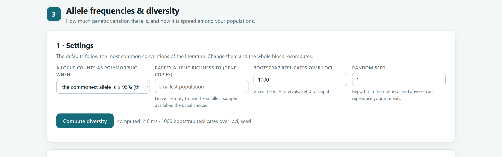
Figure 4.3. The 1 · Settings card with codominant data. With dominant data, the method for estimating frequencies also appears and, with traits, the number of classes.
Table 4.2. Settings of Block 3.
Setting
Options
Recommendation
A locus counts as polymorphic when
The commonest allele is ≤ 95% (default) · ≤ 99% · more than one allele is present.
95%, the most widely used criterion. With samples of 20 plants or fewer the three usually agree.
Rarefy allelic richness to
Number of gene copies g. Empty: the smallest sample.
Leave it empty. Codominant and haploid data only.
Allele frequencies from dominant bands
Lynch and Milligan (default) · square root · Bayesian with a uniform prior.
Lynch and Milligan for outcrossing species; Bayesian with a high F for selfing species.
Inbreeding F assumed by the Bayesian estimator
0 to 1.
0 for outcrossing species; 0.8 to 0.95 for selfing species.
Classes per trait
4 to 20 (default 10).
10 classes half a standard deviation wide, the usual convention.
Bootstrap replicates over loci
0 to 10,000 (default 1000).
1000; 0 skips the intervals.
Random seed
Integer.
Report it in your methods so that the intervals are reproducible.
Table 4.3. Result cards of Block 3.
Card
Contents
Download
2 · What the numbers say
Figures for the pooled set and interpretation paragraphs.
—
3 · Diversity of every population
Table of indices by population with the pooled row (Pooled), standard errors over loci, bar chart and rarefaction curves.
Summary (CSV)
4 · Locus by locus
The index chosen in Show for each locus in each population, and the Ho against He figure.
—
5 · Allele frequencies
Frequency of each allele in each population, with private alleles marked; stacked bars by locus and a heat map.
All frequencies (CSV)
6 · Private alleles
Private alleles with their frequency, and locally common alleles. Appears only if there are any.
—
Table 4.4. The seven figures of the block. All of them are edited and exported as explained in the chapter on Block 10.
Figure in the app
What it shows
When it appears
Diversity of every population
Bars of the chosen index by population, with intervals or standard errors and the line for the pooled set.
Two or more populations with several samples
Allelic richness against sampling effort
Rarefaction curves: expected alleles as a function of the gene copies sampled.
Codominant and haploid data
Observed against expected heterozygosity
Each locus in each population; points below the diagonal have a heterozygote deficit.
Codominant data
Allele frequencies, locus by locus
Stacked bars with the allelic composition of each population.
Molecular data
Every allele in every population
Heat map of all frequencies; blank cells are alleles absent from that population.
Molecular data
Private alleles
Private alleles by population, separating frequent and rare ones.
If there are private alleles
Phenotypic diversity by trait and population
Heat map of H′ by trait and population.
Morphological data
4.5Step by step: maize with microsatellites
The example of three maize populations with 8 microsatellites goes through every card of the block. The values in this chapter are those the app produces with the default settings and seed 1.
▸Step by step
In Block 2, load Maize populations · SSR and click Build the dataset and run the checks.
Click Continue to diversity. The block is calculated automatically in a fraction of a second, with 1000 bootstrap replicates.
Read the figures and the interpretation in 2 · What the numbers say (figure 4.4).
Review the table by population and the bar chart (figures 4.5 and 4.6).
In 4 · Locus by locus, change Show to F · fixation index to look for problematic loci.
Explore the allele frequencies of each locus: open Edit figure below the stacked bars and choose the locus in the Locus menu.
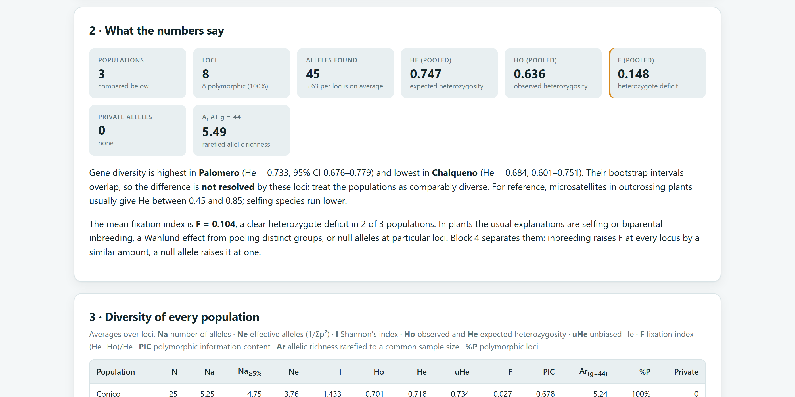
Figure 4.4.What the numbers say for maize: 45 alleles at 8 loci, pooled He 0.747, Ho 0.636 and pooled F 0.148 (amber card: heterozygote deficit). The interpretation compares the most and the least diverse populations and explains what F means.
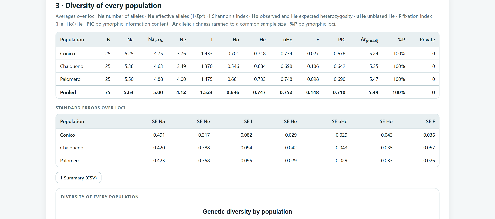
Figure 4.5.Diversity of every population: indices averaged over the 8 loci and, below them, their standard errors.
Table 4.5. Diversity of the three maize populations (8 microsatellites, 25 plants each).
Population
Na
Ne
I
Ho
He (95% CI)
uHe
F
PIC
Ar
Cónico
5.25
3.76
1.433
0.701
0.718 (0.661–0.763)
0.734
0.027
0.678
5.24
Chalqueño
5.38
3.49
1.370
0.546
0.684 (0.601–0.751)
0.698
0.186
0.642
5.35
Palomero
5.50
4.00
1.475
0.661
0.733 (0.676–0.779)
0.748
0.098
0.690
5.47
Pooled
5.63
4.12
1.523
0.636
0.747
0.752
0.148
0.710
5.49
θHow to read these results
The three landraces are equally diverse. He ranges from 0.684 in Chalqueño to 0.733 in Palomero, but the intervals overlap: with these 8 loci the difference is not resolved. The values fall within the usual range for microsatellites in outcrossing plants.
Allelic richness confirms the same. Rarefied to g = 44 gene copies, the size of the locus with the fewest data, Ar ranges from 5.24 to 5.47. Because all three populations have 25 plants, Na and Ar almost coincide.
Chalqueño has a heterozygote deficit. F = 0.186, compared with 0.027 in Cónico. It may be inbreeding in that population or a problem with some locus; Block 4 tells them apart.
The pooled F is larger than the mean. 0.148 versus 0.104: the difference is the Wahlund effect of figure 4.2, and it anticipates that the landraces are somewhat differentiated (Block 5).
The markers are highly informative. PIC between 0.642 and 0.690, above 0.5 in all three populations.
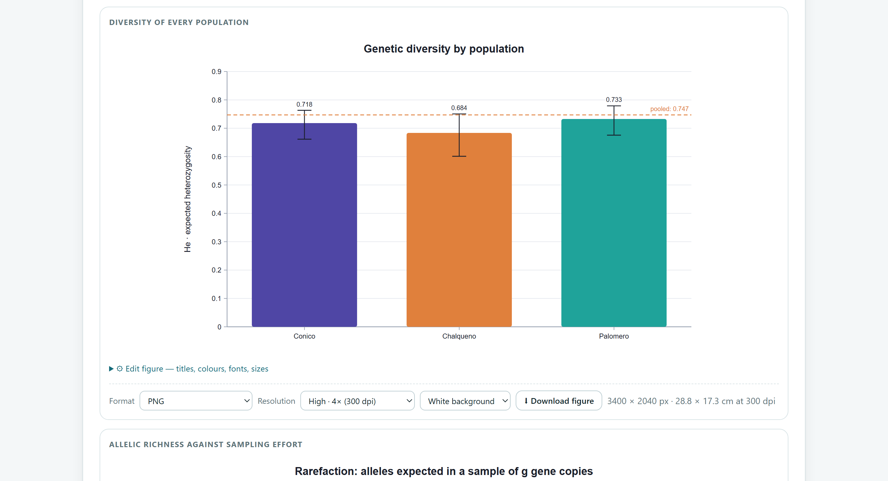
Figure 4.6. He by population with 95% bootstrap intervals and the line for the pooled set. The three intervals overlap widely. The pooled line (0.747) lies above all three bars: when the landraces are pooled, their frequencies are averaged and the alleles become more evenly distributed, which happens only if the landraces differ in their frequencies. This difference between total diversity and the diversity within each population is the basis of FST (Block 5).
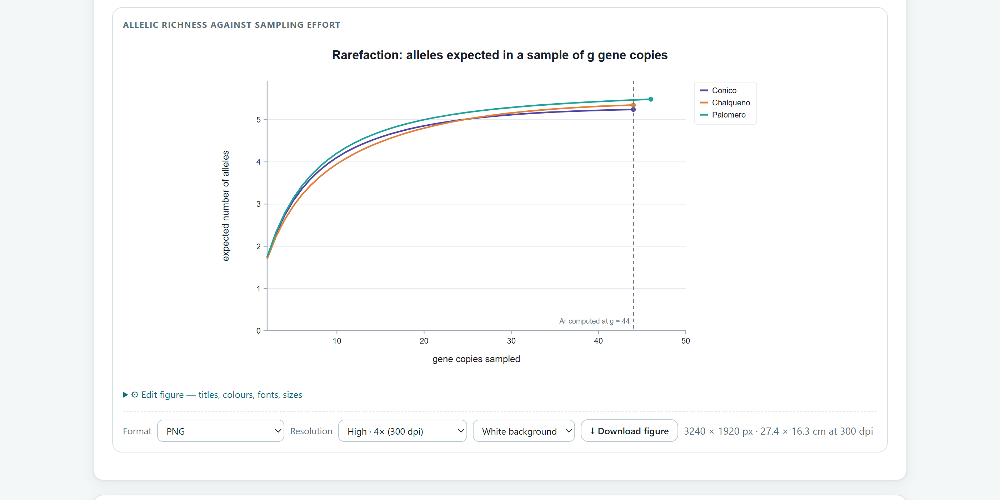
Figure 4.7. Rarefaction curves. Each curve gives the expected number of alleles, averaged over loci, as an increasing number of gene copies is sampled; the vertical line marks g = 44. The curves almost level off before 44: sampling more plants would add few new alleles. A curve that is still rising at the end indicates that the population has undiscovered rare alleles.
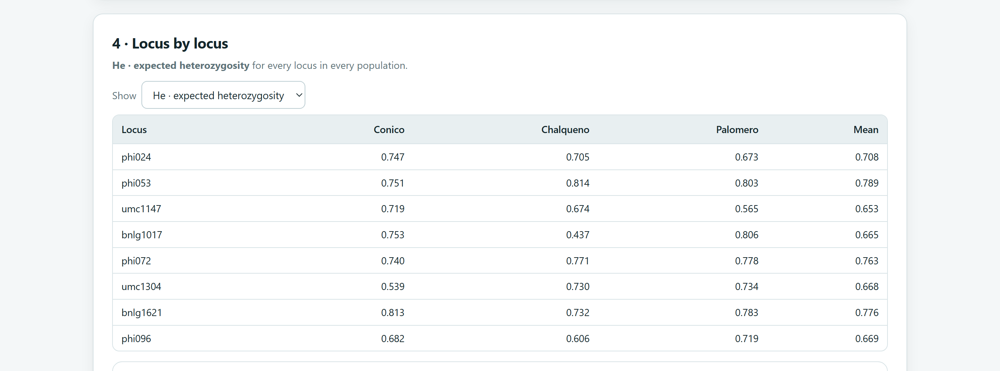
Figure 4.8.Locus by locus with He. bnlg1017 stands out in Chalqueño (0.437), well below its value in the other landraces.
!Important · inbreeding or a faulty locus?
With Show set to F · fixation index you can see that in Chalqueño F ranges from −0.007 at bnlg1017 to 0.440 at umc1304, with 0.317 at bnlg1621, 0.305 at phi053 and 0.229 at umc1147. This variation alone decides nothing: with 25 plants, single-locus F fluctuates a great deal by chance. Inbreeding raises F at most loci; a null allele raises it at the same locus in almost every population. Block 4 makes that comparison with formal tests and, in this example, concludes that the deficit is general (chapter 5). Do not draw conclusions about inbreeding before checking it.
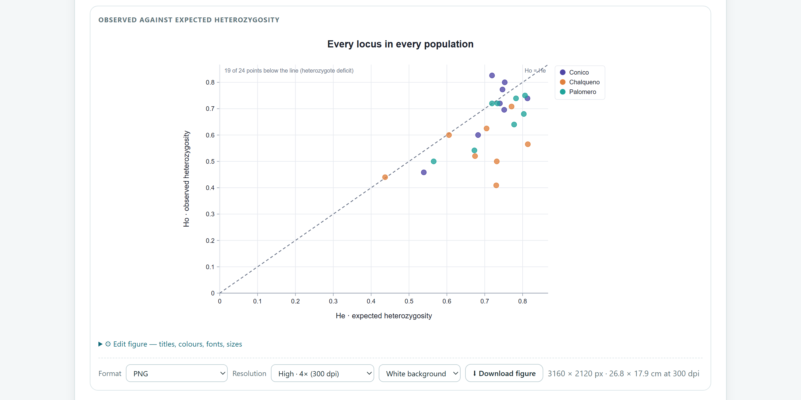
Figure 4.9. Ho against He for the 8 loci in the 3 populations: 19 of the 24 points lie below the diagonal. The lowest orange point (Chalqueño, umc1304) has Ho = 0.41 with He = 0.73, that is, F = 0.44.
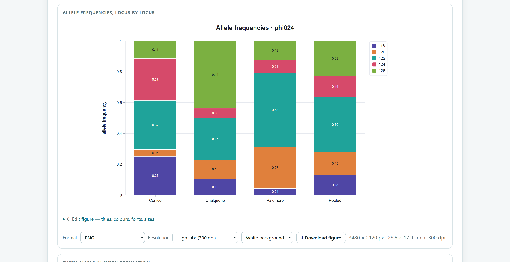
Figure 4.10. Allele frequencies at phi024. All five alleles occur in the three landraces, but in very different proportions: allele 126 dominates in Chalqueño (0.44) and allele 122 in Palomero (0.48). Differences like these, repeated across several loci, are what FST and genetic distances measure.
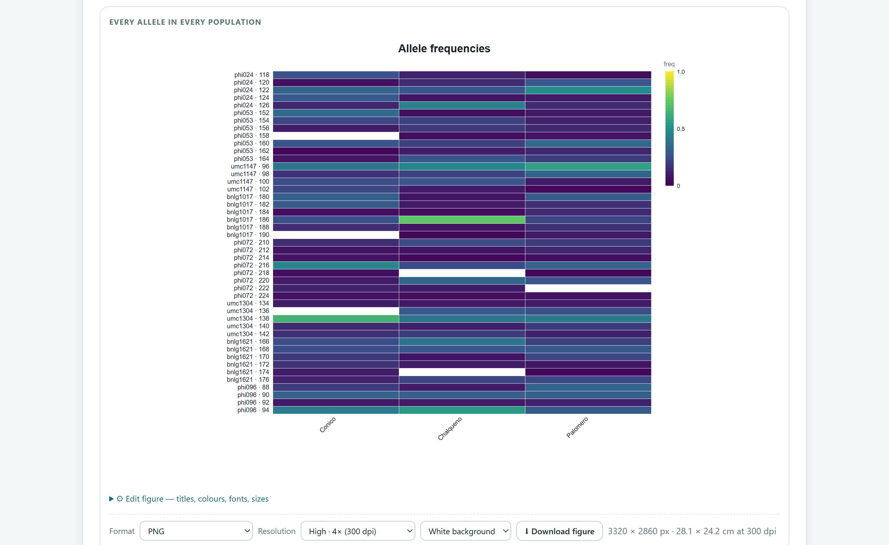
Figure 4.11. The 45 allele frequencies of the example in a single heat map. Blank cells are alleles absent from a population, such as phi053·158 in Cónico or phi072·222 in Palomero. Hide alleles below hides rare alleles so that you can see the main pattern.
iNote · verification of the calculations
For this manual, the indices of the example were recalculated from the genotypes with an independently written program: He, Ho, uHe, Ne, I, PIC, F and Ar agree with the app to the 15th decimal place. Allelic richness was also checked with 40,000 random subsamples, which differ from the exact formula in the fourth decimal place (4.9879 and 4.9878), and the Lynch and Milligan estimator was checked against its published formula.
4.6Dominant data, haplotypes and morphology
Agave with AFLP: frequencies estimated from bands
▸Step by step
Load Agave · AFLP in Block 2, build the dataset and go to Block 3.
The settings now include Allele frequencies from dominant bands, with Lynch and Milligan as the default option.
Read the summary (figure 4.12). There is no Ho, F, PIC or Ar: heterozygotes cannot be seen with bands.
Scroll down to 6 · Private alleles: there are no private bands, but there are six locally common bands (figure 4.13).
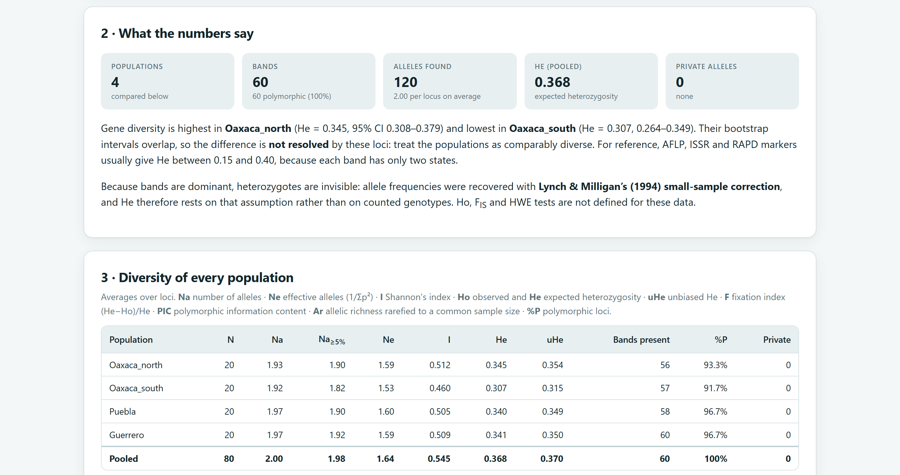
Figure 4.12. Diversity with 60 AFLP bands in 4 agave populations. He ranges from 0.307 in Oaxaca south to 0.345 in Oaxaca north, with overlapping intervals, and the pooled set reaches 0.368, within the usual range of 0.15 to 0.40 for dominant markers.
Table 4.6. He of agave according to the method used to estimate frequencies from bands.
Method
Oaxaca north
Oaxaca south
Puebla
Guerrero
Pooled
Square root
0.345
0.305
0.340
0.342
0.368
Lynch and Milligan (default)
0.345
0.307
0.340
0.341
0.368
Bayesian, F = 0
0.361
0.331
0.356
0.364
0.372
Bayesian, F = 0.9
0.379
0.329
0.365
0.389
0.394
✓Decision rule · which estimator to use with bands?
If your species…
use…
Is outcrossing and you have 20 or more plants per population
Lynch and Milligan. With large samples it coincides with the square root; with few plants it corrects the square root’s bias.
Is outcrossing but some bands are absent from almost every plant
Bayesian with F = 0: it does not leave frequencies at 0 or 1 when a band is missing from the whole sample.
Is selfing or has known inbreeding
Bayesian with F between 0.8 and 0.95: without this correction the frequency of the recessive allele is underestimated.
Whichever method you choose, report it: He from dominant markers depends on it. Comparisons among populations hardly change, as table 4.6 shows.
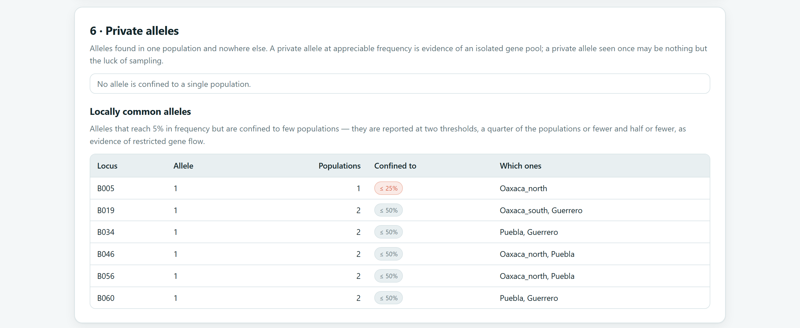
Figure 4.13. Locally common bands in agave. B005 reaches 5% only in Oaxaca north (one of four populations, 25% or fewer); the other five do so in two populations. They point to restricted gene flow even though there are no private bands.
Maize landraces with ISSR: one sample per unit
In the maize landraces example, each row is a bulked sample of one landrace. There is no diversity within landraces to measure, so the block changes its presentation: the table by population shows how many bands each landrace has and which ones are exclusive to it, and the interpretation focuses on the pooled set.
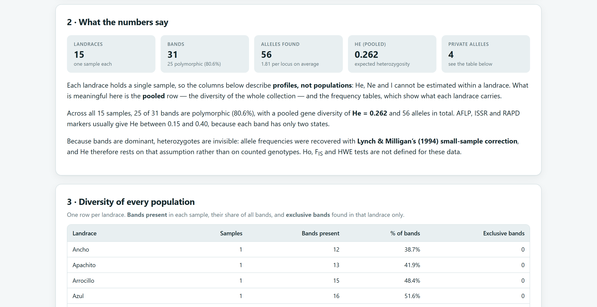
Figure 4.14. The 15 landraces with ISSR. For the pooled set: 25 of 31 bands polymorphic (80.6%), He = 0.262 and 4 bands exclusive to a single landrace (Comiteco, Bolita, Celaya and Chiquito). For each landrace, the table gives the bands present (from 9 in Chapalote to 17 in Comiteco), their percentage and the exclusive bands.
iNote · exclusive bands in bulked samples
A band exclusive to one landrace is a good candidate identity marker for that landrace, but with a single bulked sample you cannot tell how often its plants carry it. Confirming it requires several plants per landrace. The relationships among the landraces are studied in Block 6.
Pine with chloroplast DNA: haplotype diversity
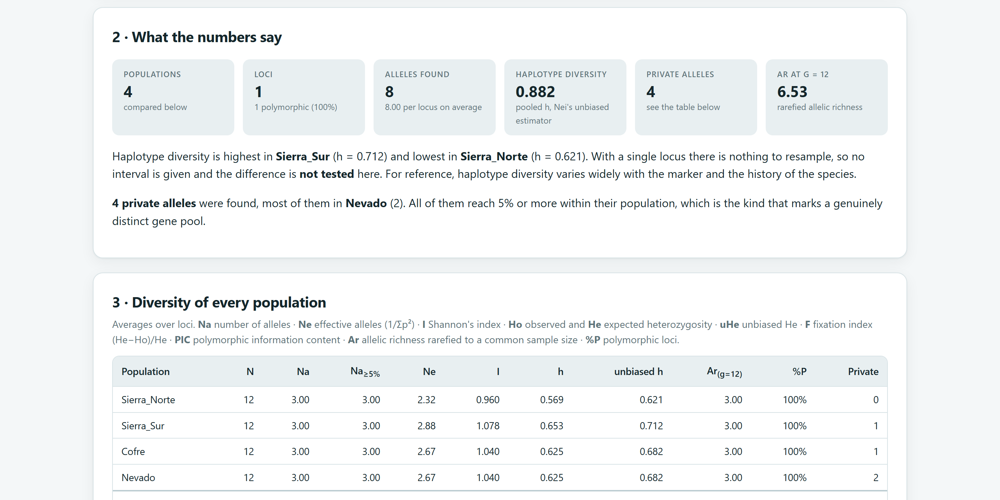
Figure 4.15. With haplotypes, the block reports the unbiased haplotype diversity h. Sierra Sur is the most diverse (h = 0.712) and Sierra Norte the least (0.621), but with a single alignment there are no intervals and the difference is not tested. The 48 sequences together give Hd = 0.882 with 8 haplotypes.
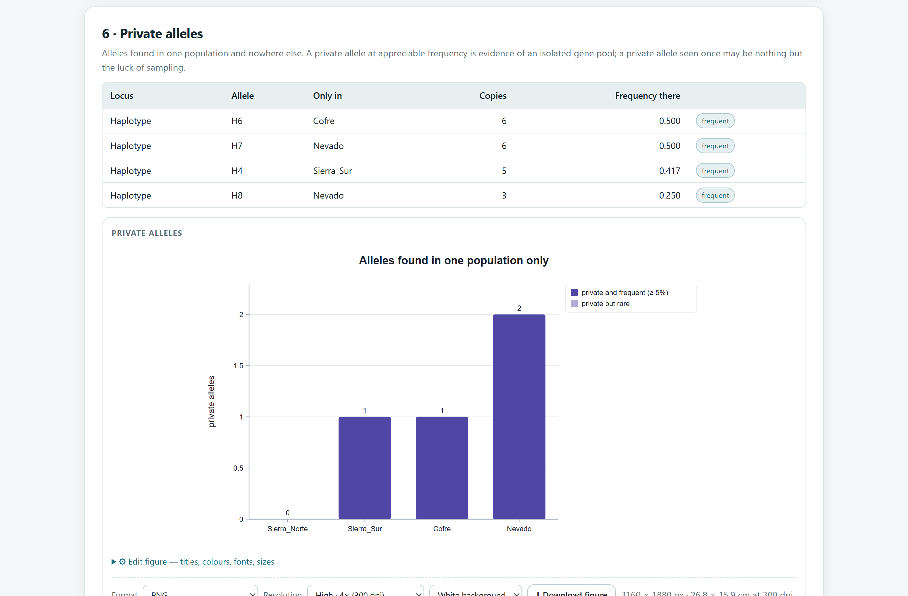
Figure 4.16. Four private haplotypes, all of them frequent: H6 in Cofre and H7 in Nevado (half of the sequences of each population), H4 in Sierra Sur and H8 in Nevado. Nevado holds two haplotypes that exist in no other population.
θWhat private haplotypes mean in the chloroplast
Chloroplast DNA is inherited from a single parent. In most angiosperms it comes from the mother and travels only in seeds; in pines and other conifers it comes from the father and travels in both pollen and seeds. So, in a pine, the fact that Nevado and Cofre retain frequent haplotypes of their own indicates that gene flow between these populations is scarce through both pollen and seeds; in an angiosperm it would speak only of seed movement. The geographical distribution and genealogy of the haplotypes are studied with the network in Block 8.
Maize morphology: phenotypic diversity
▸Step by step
Load Maize · morphology, build the dataset and go to Block 3.
The settings now include Classes per trait, set to 10 classes.
Read the interpretation and the table of H′ by population (figure 4.17).
Review the heat map by trait and population (figure 4.18).
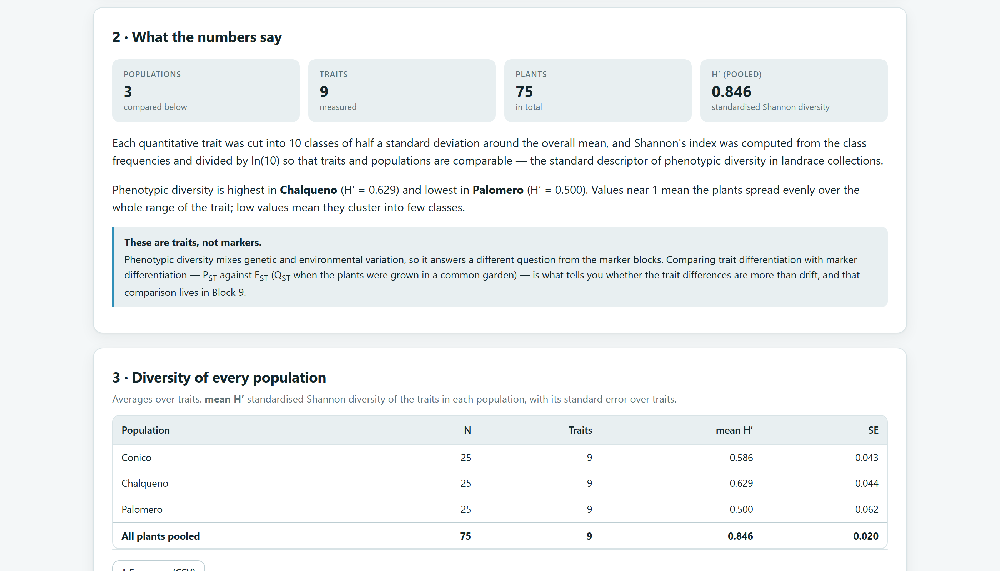
Figure 4.17. Phenotypic diversity of 9 traits. Chalqueño is the most diverse (H′ = 0.629 ± 0.044) and Palomero the least (0.500 ± 0.062). The pooled set reaches 0.846 because, when the landraces are pooled, the plants span a much wider range of each trait.
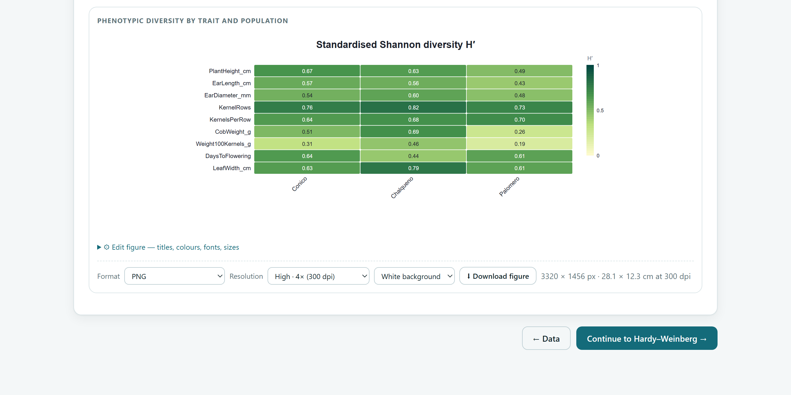
Figure 4.18. H′ by trait and population. Number of kernel rows (0.73 to 0.82) is the most variable trait within landraces, and 100-kernel weight (0.19 to 0.46) the most uniform. Cob weight clearly separates Chalqueño (0.69) from Palomero (0.26).
θHow H′ is calculated
Each quantitative trait is divided into 10 classes half a standard deviation wide, centred on the mean of all plants; values beyond 2.5 standard deviations fall into the extreme classes. In each population, the proportion pi of plants in each class is counted, H = −Σ pi ln pi is calculated and divided by ln 10, so that H′ ranges from 0 (all plants in one class) to 1 (plants evenly spread over the 10 classes). Text traits use their own categories.
✓Decision rule · phenotypic H′
H′
Diversity
Interpretation
0.6 or more
High
The plants cover almost the whole range of the trait. Useful material as a source of variation.
0.4 to 0.6
Medium
Moderate variation, common within a landrace or local variety.
Less than 0.4
Low
Trait uniform in that population: fixed by selection or with a narrow genetic base.
An indicative guide used in studies of local varieties. H′ mixes genetic and environmental variation: to find out whether differences among populations exceed what drift would produce, PST is compared with FST in Block 9.
iNote · what to report in a paper
A typical diversity table includes, for each population, N, Na, Ar with its g, Ho, uHe, F and the number of private alleles, with their standard errors or intervals. Download it with Summary (CSV): it contains the indices and their standard errors to four decimal places. With dominant markers, report He, %P and the frequency estimation method; with haplotypes, h and the number of haplotypes; with traits, H′ by trait. In your methods, state the polymorphism criterion, the value of g, the number of bootstrap replicates and the seed.
uHe + Ar
The two indices worth comparing
If you could report only two indices to compare populations, choose unbiased expected heterozygosity and rarefied allelic richness: one measures how evenly the alleles are distributed and the other how many there are, and both are corrected so that sample size does not favour any population.
The next chapter takes the fixation index, which was only described here, and puts it to the test: Block 4 checks Hardy–Weinberg equilibrium, separates inbreeding from null alleles and measures linkage disequilibrium between loci.
B4
Chapter five · Block 4 · HWE & LD
Hardy–Weinberg and linkage disequilibrium
Are the genotypes the ones predicted by random mating? And if they are not, is it inbreeding, a null allele or a mixture of populations? Block 4 tests Hardy–Weinberg equilibrium locus by locus, estimates the inbreeding coefficient FIS and the frequency of null alleles, measures whether loci are inherited independently, and corrects the P values when many tests are run at once.
5.1Hardy–Weinberg equilibrium
5.2FIS, inbreeding and null alleles
5.3Linkage disequilibrium
5.4Correction for multiple tests
5.5Block settings, tables and figures
5.6Step by step: maize and agave
F = 0.16
An example with a known answer
The maize microsatellite dataset was simulated with a heterozygote deficit of F = 0.16 in all three landraces, no null alleles and 4% of data missing at random. It is used throughout the chapter to check whether the block reaches the right conclusion.
5.1Hardy–Weinberg equilibrium
If plants mate at random, genotype frequencies are fixed by allele frequencies: with two alleles at frequencies p and q, you expect p² AA homozygotes, 2pq heterozygotes and q² aa homozygotes. This is Hardy–Weinberg equilibrium (HWE). A single generation of random mating is enough to reach it.
Figure 5.1. Left: Hardy–Weinberg proportions for a locus with two alleles. Heterozygotes reach their maximum, 0.5, when both alleles are equally frequent; with inbreeding (dashed line, F = 0.16) the heterozygote curve drops by 16% at every frequency and the homozygotes rise by the same amount. Right: the locus with the largest deficit in the maize example, with the genotypes counted by the app against those expected.
θWhat equilibrium assumes and what a departure from it means
Equilibrium holds if mating is random, the population is large and there is no selection, migration or mutation changing the frequencies. No real population meets all of these conditions, yet genotypes usually stay very close to expectation. That is why a departure is information: an excess of homozygotes points to selfing, matings between relatives, a mixture of different populations in a single sample, or marker problems; an excess of heterozygotes points to clonal reproduction, a recent cross between different sources, or selection favouring heterozygotes.
Two tests: χ² and the exact test
The χ² test compares observed and expected genotypes with Σ(O − E)²/E and k(k − 1)/2 degrees of freedom, where k is the number of alleles. It works when every expected genotype has at least 5 individuals, which almost never happens with microsatellites: with 5 alleles there are 15 possible genotypes among which to distribute 25 plants. The exact test (Guo and Thompson, 1992) does not depend on that assumption. It keeps the allele counts fixed, shuffles them at random among the plants thousands of times and asks how unusual the observed table of genotypes is.
Table 5.1. The two tests at the three loci in the example where they differ most. In all 24 cases (3 landraces × 8 loci) at least one expected genotype falls below 5.
Landrace · locus
Alleles
χ² P
Exact P
Reading
Chalqueño · phi053
7
0.0001
0.043
χ² overstates the evidence hundreds of times over.
Palomero · phi072
7
0.0016
0.024
With many rare genotypes, χ² shoots up.
Chalqueño · umc1304
5
0.0023
0.002
When the departure is large, both agree.
✓Decision rule · which Hardy–Weinberg test to read
If…
then…
You use microsatellites or SNPs with rare alleles
Read the exact test. The app flags unreliable χ² values with †.
You want to know the direction of the departure
Use the one-tailed tests: one-sided: heterozygote deficit or excess (Rousset and Raymond, 1995). They are more powerful than the global test when you already suspect inbreeding.
The exact P is close to α
Raise the permutations to 10,000. With 1000, a P of 0.05 has an error of ±0.007; with 10,000, of ±0.002.
You are comparing with an older paper
Show χ² for reference only and explain that the conclusion rests on the exact test.
A Monte Carlo test never gives P = 0: with B permutations and b tables as unusual as the observed one, P = (b + 1)/(B + 1). The smallest possible value with 1000 permutations is 0.001.
5.2FIS, inbreeding and null alleles
The inbreeding coefficient FIS measures what proportion of the expected heterozygosity is missing: FIS = 1 − Ho/He. It equals 0 under random mating, is positive when heterozygotes are lacking and negative when they are in excess. For a single population the app computes it in two equivalent ways, Nei and Chesser’s (1983) locus by locus and Weir and Cockerham’s (1984) f for all loci together, with a bootstrap interval over loci.
Table 5.2. Block 4 statistics. n is the number of individuals with data at the locus, k the number of alleles and L the number of loci.
Statistic
Formula
What it measures
Unbiased Hs
n/(n − 1) · (1 − Σpi² − Ho/2n)
Expected heterozygosity corrected for sample size (Nei and Chesser, 1983).
FIS per locus
1 − Ho / Hs
Deficit (positive) or excess (negative) of heterozygotes at one locus.
Multilocus f
1 − ΣL Ho / ΣL Hs
FIS of the whole population: a ratio of sums, not a mean of ratios (Weir and Cockerham, 1984).
Equilibrium s
2F / (1 + F)
Selfing rate that would produce that F in a mixed-mating plant.
HWE χ²
Σ (O − E)² / E, df = k(k − 1)/2
Classical test; unreliable with expected genotypes below 5.
Exact P
Σ Pr(tables with Pr ≤ Probs)
Probability of a table of genotypes as unusual as the observed one, with alleles held fixed (Levene, 1949; Guo and Thompson, 1992).
Null allele · Chakraborty
(He − Ho) / (He + Ho)
Frequency of the allele that fails to amplify (Chakraborty et al., 1992).
Null allele · Brookfield 1
(He − Ho) / (1 + He)
Brookfield’s (1996) variant for when every plant amplifies something.
Null allele · EM
iterative maximum likelihood
Separates apparent A/null homozygotes from true A/A ones (Dempster et al., 1977).
θThree causes of the same symptom
A positive FIS can arise from three very different sources, and it is worth telling them apart before writing “inbreeding” in a paper:
Inbreeding (selfing or matings between relatives). It affects the whole genome: it raises FIS at almost every locus by a similar amount.
Wahlund effect. The sample pools plants from two or more distinct gene pools. It also raises FIS at many loci and, in addition, creates linkage disequilibrium (section 5.3).
Null alleles. A mutation at the primer site prevents an allele from amplifying, so its heterozygotes are read as homozygotes. It affects one locus, and does so in almost every population.
Figure 5.2. The two patterns the block looks for in the figure Inbreeding or null alleles?, with illustrative data. Each point is the FIS of one locus in one population; the grey bar is the locus mean. Outlined points are significant departures from equilibrium.
Table 5.3. Selfing rate corresponding to each value of F at equilibrium, s = 2F/(1 + F).
F
0.05
0.10
0.16
0.22
0.33
0.50
0.80
1
s
10%
18%
28%
36%
50%
67%
89%
100%
✓Decision rule · inbreeding, Wahlund or null alleles?
Pattern
Likely cause
What to do
Positive FIS at most loci and an interval for f that excludes 0
Inbreeding
Report f with its interval and the selfing rate s for reference. Keep the loci.
One locus with a significant deficit in half or more of the populations and a null frequency above 5%
Null allele
The app flags the locus as suspected null allele. Recompute FST without it in Block 5 and compare.
General deficit and linkage disequilibrium within the population
Wahlund or selfing
Look for subgroups with Block 7. If they appear, the “population” mixes gene pools.
Both patterns at once
Inbreeding plus a null
Estimate f from the unflagged loci and report both results.
Scattered departures, with no repeated locus or population
Chance or scoring errors
This does not justify removing loci. Check the gels for the extreme cases.
The automatic diagnosis in card 2 applies this rule. A significant excess of heterozygotes (f with an interval below 0) suggests clonality, a recent cross between different sources or, in small samples, mere chance.
All three estimators attribute the entire heterozygote deficit to null alleles. In the maize example, simulated without nulls, EM reaches 0.183 at Chalqueño · umc1304 because it absorbs the inbreeding. That is why the app does not flag a locus on its estimated frequency alone: it also requires the deficit to recur in at least half of the populations. And the option Treat missing genotypes as null homozygotes should be switched on only if the missing data are amplification failures: in the example, whose missing data are random, it raises the mean EM estimate from 0.026, 0.081 and 0.041 to 0.104, 0.139 and 0.092.
5.3Linkage disequilibrium
Two loci are in linkage disequilibrium (LD) when their alleles do not combine at random: knowing which allele a plant carries at one locus helps predict the allele at the other. Recombination erases that association generation after generation; what creates or maintains it is physical proximity between the loci, selfing and clonality, which reduce effective recombination, admixture of different populations, drift in small populations, and selection.
θThe index of association in a nutshell
For each pair of plants, count at how many allele copies they differ at each locus. If the loci are independent, the differences add up like independent variables and the variance of the total, VD, equals the sum of the per-locus variances. If there is association, plants that differ at one locus tend to differ at the others, and VD grows. The index of association is IA = VD/ΣVj − 1 (Brown et al., 1980). Because it depends on the number of loci, the app also reports its standardised version, r̄d = (VD − ΣVj) / (2 Σj<k √(VjVk)) (Agapow and Burt, 2001), which lies between 0 and 1 apart from small negative fluctuations due to chance and can be compared across studies. It works with codominant, dominant and haploid markers.
Significance is obtained by permutation: the genotypes at each locus are shuffled among plants separately, which destroys any association, and the app counts how often the shuffled r̄d equals or exceeds the observed one. For each pair of loci, r̄d is the correlation between their distances; when every locus has two alleles, the app adds r² and D′ (Excoffier and Slatkin, 1995, to resolve the phases of double heterozygotes). With dominant markers, r² and D′ are computed on band presence and absence, which are not haplotypes: treat them as a correlation between bands.
✓Decision rule · reading r̄d
If…
then…
r̄d ≈ 0 and not significant in every population
The loci behave as independent. The Block 7 methods, which assume this, can be used without reservation.
r̄d significant and below 0.05
Detectable but weak association; it does not bias analyses that assume independence.
r̄d significant and above 0.05 within populations
Selfing, clonality or recent admixture. Read Bayesian clustering and assignments with caution.
Significant only in the pooled sample
A sign of differentiation between populations, not of physical linkage.
One particular pair stands out in several populations
Possible physical linkage between those two loci. Consider using only one of them in analyses that require independence.
The 0.05 threshold is a guide: in outcrossing plants with unlinked markers, r̄d usually stays below 0.01; in clonal or highly selfing species, values of 0.1 to 0.5 are common.
5.4Correction for multiple tests
With α = 0.05, one test in twenty comes out significant even when nothing is going on. The maize example runs 24 Hardy–Weinberg tests, so 1.2 “rejections” would be expected by pure chance; for linkage, 28 pairwise tests are run per landrace. Corrections adjust the P values so that the set of conclusions as a whole remains reliable.
Table 5.4. Corrections available in Correction for multiple tests, and how many of the example’s 24 exact tests remain significant with each.
Method
What it controls and how
When to use it
Significant
None
Nothing: each test at level α.
For exploration only.
7
Bonferroni
The probability of at least one false positive; multiplies each P by the number of tests m.
Few tests and critical conclusions.
1
Holm (default)
The same as Bonferroni, but sorts the P values and multiplies the smallest by m, the next by m − 1, and so on (Holm, 1979).
The general-purpose choice: it never rejects fewer than Bonferroni.
1
Benjamini–Hochberg
The expected proportion of false positives among the rejections (FDR).
Many tests, such as pairs of loci; screening for candidates.
1
Benjamini–Yekutieli
The FDR even when tests are correlated (Benjamini and Yekutieli, 2001).
Tests that depend on one another.
0
Figure 5.3. The example’s 24 exact P values, sorted. A test is significant if its point lies below the method’s line. Only Chalqueño · umc1304 survives the correction; its Holm-adjusted P is 0.002 × 24 = 0.048.
θCombining instead of correcting: Fisher’s method
Correcting answers the question “which particular tests are significant?”. Sometimes the question is different: “does this population, as a whole, depart from equilibrium?”. Fisher’s method pools the evidence from several independent tests, X = −2 Σ ln P, which is compared with a χ² with 2k degrees of freedom. In the example, no Chalqueño locus except umc1304 survives the correction, yet combining its 8 loci gives P < 0.0001: the landrace as a whole has fewer heterozygotes than expected. The app shows this combination per population (Fisher (all loci)) and per locus (Fisher (all pops)).
✓Decision rule · which correction to use
If…
use…
You have dozens of tests and every rejection matters (HWE per locus)
Holm, the default option.
You have hundreds or thousands of tests (pairs of loci with dominant markers)
Benjamini–Hochberg: Holm would be so strict that it would detect nothing.
You are interested in the population as a whole, not each locus
Fisher’s method, in addition to the per-locus correction.
No individual test survives but there are many small P values
Examine the pattern (do they recur at one locus or in one population?) before concluding that nothing is going on.
5.5Block settings, tables and figures
Block 4 opens when at least one population has five or more individuals and there are two or more loci. It does not apply to morphological characters or to a single sequence alignment. With diploid codominant markers everything is computed; with dominant or haploid markers, only linkage. On entry, the tests run with the default settings; if you change any of them, click Run the tests.
Figure 5.4. The 1 · Settings card with codominant data.
Switch it on only if the missing data are amplification failures.
Permutations for multilocus LD
0 to 9999 (default 999).
999.
Permutations per locus pair
0 to 9999 (default 199); drops to 99 with more than 400 pairs.
199; with few pairs, 999.
Random seed
Integer.
Report it in the methods.
Table 5.6. Block 4 result cards. Cards 3 to 5 appear only with codominant data.
Card
Contents
Download
2 · What the tests say
Summary values for the whole dataset, automatic diagnosis and interpretation of linkage.
—
3 · Hardy–Weinberg tests, locus by population
The test chosen in Show for each locus and population, with − (deficit) or + (excess), Fisher’s combination per locus and the map of departures.
HWE, FIS and null alleles (CSV)
4 · Inbreeding coefficient FIS
FIS per population with interval and selfing rate; the locus-by-locus diagnosis with its table and figure.
—
5 · Null alleles
Null allele frequency with the estimator chosen in Estimator, and its heat map.
—
6 · Linkage disequilibrium
IA and r̄d per population and for the whole dataset; the pairs of loci for the sample chosen in Sample (the 40 with the highest r̄d), the triangle of pairs and the permutation distribution.
All pairs (CSV)
Table 5.7. The six figures of the block. They are edited and exported as explained in the Block 10 chapter.
Figure in the app
What it shows
Hardy–Weinberg tests at a glance
Locus × population grid coloured by significance level, with − or +.
Inbreeding coefficient of every population
Multilocus f with its 95% interval and the per-locus FIS values as faint points.
Inbreeding or null alleles? FIS locus by locus
The diagnosis of figure 5.2 with your data.
Estimated null allele frequencies
Locus × population heat map of the chosen estimator.
Pairwise linkage disequilibrium
Triangle of r̄d, r² or D′ between pairs, with asterisks on those significant after correction; in grey, pairs left undefined by a monomorphic locus.
Is the multilocus association more than chance?
Histogram of r̄d across permutations, with the observed value.
5.6Step by step: maize and agave
Maize with microsatellites: the full analysis
▸Step by step
In Block 2, load Maize populations · SSR, click Build the dataset and run the checks and open Block 4 from the step bar or with Continue to Hardy–Weinberg at the end of Block 3.
The tests run on their own in under a second. Read the diagnosis in 2 · What the tests say (figure 5.5).
Review the table of exact tests and its map (figures 5.6 and 5.7). Change Show to see uncorrected P values, the one-tailed tests or χ².
In 4 · Inbreeding coefficient FIS, read f with its interval and the locus-by-locus diagnosis (figures 5.8 to 5.10).
Check the null alleles with the Estimator menu (figure 5.11) and finish with linkage; Sample changes the landrace whose pairs are shown (figures 5.12 and 5.13).
Figure 5.5.What the tests say. Of 24 exact tests, one rejects equilibrium after Holm’s correction. The diagnosis concludes that the deficit is general: 7 of 8 loci have a positive mean FIS, and two landraces have an f whose interval excludes zero. This is the correct conclusion for these data, simulated with inbreeding and without null alleles.
iNote · why Cónico does not reveal the simulated inbreeding
All three landraces were simulated with F = 0.16, yet only two show a clear deficit. With 25 plants and 8 loci there are about 190 genotypes per landrace, and the number of heterozygotes varies from one sample to the next: Cónico came out with 133 where about 117 were expected, almost 2.5 standard deviations above. That is unlikely, but with three landraces it is not unusual for one to stray that far. This is why you should always report the interval, and never conclude “there is no inbreeding” from an interval that includes zero: with more loci or more plants, the interval narrows (table 5.8).
Figure 5.6. Holm-corrected exact P values. Only Chalqueño · umc1304 falls below 0.05 (in red). The Fisher column combines the three landraces: umc1304 (0.0011), phi072 (0.0175) and bnlg1621 (0.0253) have recurring departures, even though no individual test shows it.
Figure 5.7.Hardy–Weinberg tests at a glance. Each cell is one test; the colour shows the significance level and the − sign a deficit. Test shown switches to uncorrected P values, where the 7 nominal departures appear.
Figure 5.8. FIS by landrace. Chalqueño (0.222, interval 0.115 to 0.321) and Palomero (0.118, 0.071 to 0.165) have a clear deficit; their equilibrium selfing rates would be 36% and 21%. Cónico (0.045) cannot be distinguished from zero.
Table 5.8. Multilocus FIS in the example against the value used to simulate the data.
Landrace
f (Weir and Cockerham)
95% CI
Jackknife SE
Mean FIS (N&C)
Simulated
Does it include the true value?
Cónico
0.045
−0.026 to 0.102
0.035
0.048
0.16
No: this sample happened to have few homozygotes by chance.
Chalqueño
0.222
0.115 to 0.321
0.055
0.206
0.16
Yes.
Palomero
0.118
0.071 to 0.165
0.026
0.119
0.16
Yes.
Figure 5.9.Inbreeding coefficient of every population. The diamond is f, the line its 95% interval and the faint points the FIS of each locus; the asterisk marks intervals that exclude zero.
Figure 5.10. The diagnosis with the example data. Almost every locus has bars above zero, the inbreeding pattern of figure 5.2. The only outlined point, Chalqueño · umc1304 (0.458), is significant but does not recur in Cónico (0.170) or Palomero (0.039), so it is not flagged as a null allele.
Figure 5.11. EM null allele frequencies. The highest values are in Chalqueño (0.183 at umc1304, 0.147 at phi053, 0.136 at bnlg1621), precisely the landrace with the most inbreeding: the estimators read the general deficit as if it were due to nulls (Important box in section 5.2).
Figure 5.12. Multilocus linkage. r̄d ranges from −0.0073 to 0.0076 within landraces and is 0.0084 in the pooled sample; no value is significant. Among the pairs, 7 of 112 tests (28 pairs in each landrace and in the pooled sample) have uncorrected P < 0.05, close to the 5.6 expected by chance, and none survives Holm’s correction.
Figure 5.13. Left: r̄d between the 28 pairs of loci in Cónico; the highest, umc1147–umc1304 (0.174, P = 0.035), does not survive the correction and carries no asterisk. Right: Cónico’s observed r̄d (0.0076) falls in the middle of the distribution of 999 permutations (P = 0.294).
θWhat the example confirms
The simulated inbreeding is detected as a general deficit, not as a problem with particular loci: no locus is flagged as carrying null alleles.
Inbreeding does not create linkage in these data, because the genotypes were simulated locus by locus. In a real selfing species, selfing would increase it, and that is one more criterion for distinguishing it from the effect of a null allele.
Individual tests have little power with 25 plants per landrace: with a true F of 0.16, only one of 24 tests survives the correction. That is why the multilocus FIS with its interval and Fisher’s combination matter.
Agave with AFLP: linkage only
▸Step by step
Load Agave · AFLP in Block 2, build the dataset and open Block 4.
The Dominant or haploid data notice explains that there are no Hardy–Weinberg tests, FIS or null alleles (figure 5.14).
The calculation takes a few seconds: 60 bands give 1770 pairs per sample.
Read the interpretation and the linkage table (figure 5.15) and explore the pairs in each population (figure 5.16).
Figure 5.14. The notice that appears in 1 · Settings with bands. The settings for the exact test and for treating missing data as nulls, which do not apply, also disappear.
Figure 5.15. Within the four agave populations, r̄d ranges from −0.0032 to 0.0005 and none is significant: the bands are inherited as independent loci. In the pooled sample, by contrast, r̄d = 0.0019 is significant (P = 0.025), because pooling populations with different frequencies creates association between bands. It is a sign of differentiation, which is measured in Block 5.
Figure 5.16. The 1770 pairs of bands in Oaxaca north. The grey rows and columns correspond to the 4 bands that are monomorphic in that population, whose r̄d is undefined (230 pairs). No pair is significant after correction; with so many pairs, it is advisable to switch to Benjamini–Hochberg if you are looking for linkage candidates.
iNote · what to report in a paper
For each population: the number of loci in disequilibrium after correction (state which correction you used), the multilocus FIS with its interval and, if you interpret it as a mating system, the selfing rate for reference. Mention the loci with possible null alleles and whether you excluded them from subsequent analyses. For linkage, r̄d per population with its P. In the methods, the number of permutations and the seed. The HWE, FIS and null alleles (CSV) download contains every value per locus and population to five decimal places.
iNote · verification of the calculations
For this manual, every statistic in the maize example was recomputed with independent code: Nei and Chesser’s FIS, Weir and Cockerham’s f with its jackknife error, χ², the Chakraborty and Brookfield estimators, Holm’s correction, IA and r̄d agree to the 12th decimal place. The exact test was compared against full enumeration of every possible table of genotypes in the 14 cases with five alleles or fewer, and against 20,000 permutations in the other 10. The largest difference, at Cónico · bnlg1017 (0.089 against an exact 0.065), is due to the randomness of the 1000 permutations: with 100,000, the app gives between 0.064 and 0.067. The EM estimator agrees with an independent implementation of our own to the ninth decimal place.
With the genotypes reviewed and the problematic loci identified, the next chapter moves from the individual population to the set as a whole: Block 5 measures how much populations differ with FST, GST, Jost’s D and the analysis of molecular variance (AMOVA).
B5
Chapter six · Block 5 · AMOVA
Differentiation and AMOVA
How much of the genetic variation separates the populations? Which pairs differ? Do the regions you defined really group the populations? Block 5 computes the classical and modern estimators of differentiation (FST, GST, G′ST and Jost’s D), the analysis of molecular variance (AMOVA) with or without regions, the pairwise matrices with their tests, and an indicative conversion to number of migrants.
6.1Measuring differentiation
6.2Hierarchical AMOVA
6.3Pairwise matrices and gene flow
6.4Decision rules
6.5Block settings, tables and figures
6.6Step by step: maize, agave and pine
6.1Measuring differentiation
When populations exchange few migrants, drift changes their allele frequencies in different directions and they gradually drift apart. Differentiation measures how far apart they have moved: it compares the diversity of each population with that of the whole set.
θThe idea of FST in one sentence
If the populations were a single one, the diversity within them (HS) would equal that of the whole set (HT). The more their frequencies differ, the more diversity “appears” when they are pooled: FST = (HT − HS)/HT is the fraction of the total diversity due to differences among populations. It is 0 if all of them have the same frequencies and 1 if each is fixed for a different allele. This is the same reasoning as the Wahlund effect in chapter 4.
Figure 6.1. Three populations with one two-allele locus; the dark bar is the frequency p of allele A. In both cases the mean frequency is 0.5, so HT = 0.5. On the left, each population retains almost all of that diversity; on the right, two populations are close to fixing opposite alleles and HS drops to 0.287.
Four estimators and why they disagree
GST has a ceiling: it can never exceed 1 − HS, so with highly diverse markers such as microsatellites it stays close to zero even when the populations do not share a single allele (figure 6.2). Hedrick (2005) proposed G′ST, which divides GST by its maximum possible value, and Jost (2008) proposed D, which directly measures how different the sets of alleles are. None of them replaces the others: they measure related but different things (Meirmans and Hedrick, 2011).
Figure 6.2. The ceiling of GST. With five equally frequent alleles in each population and none shared, GST (and FST as well) equals 0.111, whereas G′ST and D equal 1, their maximum. This is why microsatellites, with high HS, give small FST values even when the populations are very different.
Table 6.1. Statistics of Block 5. r is the number of populations; HS and HT include the sample-size corrections of Nei and Chesser (1983).
Statistic
Formula
What it measures and when to use it
Range
θ · FST Weir and Cockerham (1984)
σ²among / σ²total, with variance components summed over alleles and loci
Differentiation as the correlation between alleles from the same population. Corrects for sample size and number of samples. The estimator to report, and the one related to gene flow and drift.
≈ 0 to 1
θB dominant bands
θ for haploid units applied to band presence or absence
The same idea with AFLP, ISSR or RAPD. Equal to ΦPT from AMOVA.
≈ 0 to 1
GST Nei (1973)
(HT − HS) / HT
Fraction of the total diversity found among populations. Useful for comparison with older studies; limited by the ceiling 1 − HS.
0 to 1 − HS
G′ST Hedrick (2005)
GST (r − 1 + HS) / [(r − 1)(1 − HS)]
GST divided by its maximum possible value: comparable across markers with different diversity.
0 to 1
D Jost (2008)
r/(r − 1) · (HT − HS) / (1 − HS)
How different the sets of alleles are: 0 if identical, 1 if they share none. Says nothing about migration.
0 to 1
ΦST · ΦPT AMOVA
σ²among populations / σ²total
Differentiation from AMOVA; ΦPT with bands. Without regions, equal to θ or θB (section 6.2).
≈ 0 to 1
Nm Wright
(1 − θ) / (4θ); (1 − θ) / (2θ) for haplotypes
Migrants per generation that would produce that θ under the island model. An order of magnitude only (section 6.3).
0 to ∞
iNote · how loci are combined
The multilocus θ is a ratio of sums: the variance components of all loci are summed first and then divided, so the more informative loci carry more weight. GST, G′ST and D are computed from HS and HT averaged over loci, so the three are comparable with one another. Some studies instead average the per-locus D values, using the arithmetic or the harmonic mean; the app shows both in the note below the per-locus table so that you can compare like with like. The 95% intervals are obtained by resampling loci (bootstrap) and the standard errors by jackknife over loci.
6.2Hierarchical AMOVA
The analysis of molecular variance (AMOVA; Excoffier, Smouse and Quattro, 1992) partitions the squared genetic distances among the levels of the sampling design, just as an analysis of variance partitions the sum of squares among treatments and replicates. Each level yields a variance component and a Φ statistic, which is the fraction of the variation explained by that level.
Figure 6.3. The levels of the hierarchical AMOVA with the design of the agave exercise: two regions, two populations in each and 20 plants per population. With codominant data, the plant level is split into “among individuals” and “within individuals”, which gives ΦIS and ΦIT.
Table 6.2. AMOVA levels in the app. N is the number of individuals, P the number of populations and G the number of regions.
Source of variation
d.f.
Φ statistic
Test: what is permuted
Among regions
G − 1
ΦCT = σ²a / σ²
Whole populations among regions.
Among populations within regions
P − G
ΦSC = σ²b / (σ²b + σ²c + σ²d)
Individuals among the populations of the same region.
Among populations (no regions)
P − 1
ΦST (ΦPT with bands)
Individuals among all populations.
Among individuals within populations
N − P
ΦIS = σ²c / (σ²c + σ²d)
Gene copies among individuals of the same population.
Within individuals
N
ΦIT = (σ²a + σ²b + σ²c) / σ²
—
θThe distance AMOVA uses for each marker type
Codominant: between two gene copies, 1 if they carry different alleles and 0 if they carry the same one, summed over loci. Without regions, ΦST, ΦIS and ΦIT are exactly equal to Weir and Cockerham’s θ, f and F: they are two routes to the same number.
Dominant: between two plants, the number of bands in which they differ (Peakall, Smouse and Huff, 1995). It gives ΦPT, equal to θB.
Haplotypes: 1 if two sequences carry different haplotypes. The AMOVA that weights how many mutations separate the haplotypes is in Block 8.
iNote · negative components
A variance component can come out negative when a level contributes no variation and sampling chance pushes the estimate below zero. This is not a computational error: it is interpreted as zero. The app keeps it in the table, so that the sum adds up, and draws it as zero in the figure.
▸Worked example · from mean squares to components
In the agave exercise (section 6.6) the design is balanced: 2 regions, 2 populations per region, 20 plants per population and no missing data. The mean squares are 45.60 among regions, 38.65 among populations within regions and 10.653 within populations. Each mean square contains the components of the levels below it, multiplied by the number of plants in each unit:
With unbalanced designs the multipliers (20 and 40) are replaced by the coefficients n, n′ and n″ of Excoffier et al. (1992), and with missing data the app computes them locus by locus.
!Important · with few populations, ΦCT cannot be significant
The test of ΦCT permutes whole populations among regions. With few populations there are few distinct ways to assign them, and the P value can never drop below 1 divided by that number of ways, however many permutations you request. The app computes that number and warns you about it (table 6.3). With fewer than about 8 populations, judge the regional level by the size of its component, not by its P.
Table 6.3. Distinct ways to assign the populations to regions of equal size, and minimum possible P of ΦCT.
Design
4 pops. in 2 + 2
4 in 3 + 1
6 in 3 + 3
8 in 4 + 4
10 in 5 + 5
12 in 4 + 4 + 4
Distinct ways
3
4
10
35
126
5775
Minimum P
0.33
0.25
0.10
0.029
0.008
0.0002
6.3Pairwise matrices and gene flow
Global differentiation tells you how much the populations differ as a whole; pairwise matrices tell you which ones differ. For each pair the app computes θ, the AMOVA Φ, GST, G′ST, D and Nm, and tests θ and Φ by permuting the individuals of the two populations. Since there are as many tests as pairs, the P values are corrected with Holm’s method (chapter 5).
θFrom FST to migrants: Wright’s island model
If many populations of equal size exchange migrants at random, at the same rate, for long enough to reach equilibrium between drift and migration, then FST ≈ 1/(1 + 4Nem) for nuclear genes of a diploid organism, with codominant or dominant markers. Rearranging gives Nem ≈ (1 − FST)/(4FST). For uniparentally inherited haploid genomes, such as the chloroplast, FST ≈ 1/(1 + 2Nem). The classical rule says that with more than one migrant per generation, drift cannot differentiate the populations much. Chapter 2 shows this relationship with the simulator.
Table 6.4. Number of migrants per generation corresponding to each FST under the island model.
FST
0.01
0.05
0.10
0.15
0.20
0.25
0.33
0.50
Nm, diploid nuclear genes
24.8
4.75
2.25
1.42
1.00
0.75
0.51
0.25
Nm, haplotypes
49.5
9.50
4.50
2.83
2.00
1.50
1.02
0.50
!Important · Nm is a conversion, not a measurement
No real population meets the island model: sizes differ, migration is higher between neighbours, differentiation may stem from ancient isolation rather than from low present-day migration, and equilibrium takes many generations to be reached. Nm therefore serves to say “several migrants per generation” or “fewer than one”, not to give an exact number of seeds or pollen grains (Whitlock and McCauley, 1999). The app labels it indicative. For the geographical pattern of differentiation, use the isolation-by-distance analysis of Block 6.
6.4Decision rules
✓Decision rule · how much differentiation is a lot?
FST or θ
Differentiation
Interpretation
Below 0.05
Low
The populations share almost all their frequencies; abundant gene flow or recent separation.
0.05 to 0.15
Moderate
Clear but shallow structure. Common in outcrossing plants with nuclear markers.
0.15 to 0.25
High
Well-differentiated populations; little exchange or a separate history.
Above 0.25
Very high
Common in selfing species, isolated populations and chloroplast markers.
Wright’s (1978) scale. It was designed for FST with markers that have few alleles: with microsatellites, whose HS is high, a θ of 0.05 can conceal quite different populations (figure 6.2), so read it together with G′ST or D.
✓Decision rule · which estimator should you report?
If your question is…
report…
How much structure there is and how it relates to drift and migration
θ (FST) with its interval, and ΦST or ΦPT from AMOVA with its P.
How different the allele pools are, for example for conservation
Jost’s D or G′ST, in addition to θ.
Comparison with another study or another marker
G′ST or D, which do not depend on the HS ceiling, and the same kind of locus average used in the other study.
Comparison with an older study that only gave GST
GST as a reference, noting its ceiling.
The general recommendation is not to report a single estimator: θ plus D or G′ST covers both interpretations (Meirmans and Hedrick, 2011).
✓Decision rule · reading an AMOVA with regions
If…
then…
ΦCT is significant and the region component is larger than the population component
The grouping into regions is real and captures most of the structure.
ΦCT and ΦSC are significant, with populations weighing more
The regions differ, but within each one the populations differ even more.
ΦSC is significant and ΦCT is not
The populations differ, but they do not group according to the regions you defined. Try a grouping suggested by the data (Block 7).
Few populations (table 6.3)
The test of ΦCT cannot reach significance: read the size of the component.
None is significant
At this scale, the species behaves almost as a single large population.
✓Decision rule · population pairs and migrants
If…
then…
The corrected P of a pair is below 0.05
The two populations differ in frequencies; treat them as distinct units.
Nm is above 4
Gene flow is sufficient to keep them similar.
Nm is between 1 and 4
Moderate exchange; drift leaves a mark but does not separate them completely.
Nm is below 1
Drift dominates and the populations diverge; conserving each one is a priority.
All corrected P values are equal and small
This is the minimum possible with those permutations (with 199 and 3 pairs, 0.005 × 3 = 0.015). Increase the permutations to tell them apart.
The Nm thresholds are indicative and inherit all the limitations of the island model.
6.5Block settings, tables and figures
Block 5 opens when there are at least two populations with two or more individuals each and molecular markers; it does not apply to morphological traits or to landraces with a single sample. On entry, everything is computed with the default settings; if you change any of them, press Compute differentiation.
Figure 6.4. The 1 · Settings card with the maize data, which have no regions. The check boxes for the hierarchical AMOVA and for leaving out loci appear only when they apply (figure 6.13).
Table 6.5. Block 5 settings.
Setting
Options
Recommendation
Permutations (global θ and AMOVA)
0 to 99,999 (default 999).
999; 9999 for the paper.
Permutations per population pair
0 to 9999 (default 199).
199 for exploration; 999 if there are few pairs.
Bootstrap replicates over loci
0 to 10,000 (default 1000).
1000. Requires three or more loci.
Hierarchical AMOVA (regions › populations)
On by default. Appears if Block 2 has two or more regions.
Turn it off to see the single-level AMOVA.
Leave out the loci flagged for null alleles in Block 4
Appears if Block 4 flagged any locus.
Run with and without the flagged loci and compare.
Random seed
An integer.
Report it in the methods.
iNote · how to declare regions
The app takes the regions from a column of your data. The column is recognised automatically if its name starts with Region, Zone, Group, State, Estado, Area, Cluster, Subregion, Watershed, Province, País or Country; otherwise, assign it the Region / group role in Block 2. Each population must belong to a single region. In FASTA files, the region can go in the sequence name, as in ID|population|region, or in a sample sheet.
Table 6.6. Block 5 result cards.
Card
Content
Download
2 · What the numbers say
Key figures and interpretation: level of differentiation, GST ceiling, regions, inbreeding and pairs.
—
3 · Analysis of molecular variance
AMOVA table with degrees of freedom, sums of squares, components, percentages, Φ and P, and the figure of the partition.
—
4 · Global F-statistics, locus by locus
HO, HS, HT, GST, G′ST, D, θ, f and F per locus, the multilocus value with its interval, and the per-locus figure.
Per-locus statistics (CSV)
5 · Pairwise differentiation
Matrix of the statistic chosen in Statistic below the diagonal and corrected P values above it; heat map and comparison of estimators by pair.
All pairs, all statistics (CSV)
Table 6.7. The four figures of the block. They are edited and exported as explained in the chapter on Block 10.
Figure in the app
What it shows
AMOVA: where the molecular variance sits
Bar with the percentage of each level and its Φ values with P.
Differentiation locus by locus
θ, GST, G′ST or D for each locus, with the multilocus value and its shaded interval. A locus well above the interval is highlighted in another colour.
Pairwise differentiation
Heat map of the pairwise statistic, with the corrected P values in the upper half.
Four estimators, pair by pair
GST, G′ST, D and θ side by side for each pair, sorted by D.
6.6Step by step: maize, agave and pine
Maize with microsatellites: differentiation without regions
▸Step by step
In Block 2, load Maize populations · SSR, build the dataset and open Block 5 from the step bar or with Continue to F-statistics & AMOVA at the end of Block 4.
The computation takes about a second. Read the figures and the interpretation (figure 6.5).
Review the AMOVA table and figure (figures 6.6 and 6.7).
In card 4, compare the estimators by locus and look for extreme loci (figures 6.8 and 6.9).
Finish with the pairs: change Statistic to see each estimator (figures 6.10 to 6.12).
Figure 6.5.What the numbers say with the three maize landraces. θ = 0.049 is significant but falls in the low-differentiation category; the interpretation warns that, with HS = 0.729, the GST of 0.033 is limited by its ceiling, and that G′ST and D are several times larger.
Table 6.8. Multilocus differentiation of the three maize landraces (8 microsatellites, 75 plants).
Estimator
Value
95% CI (bootstrap)
SE (jackknife)
Interpretation
θ (FST)
0.049
0.023 to 0.079
0.016
Low to moderate; P = 0.001.
GST
0.033
0.016 to 0.054
0.011
Limited by HS = 0.729.
G′ST
0.166
0.082 to 0.262
0.051
Five times GST once the ceiling is corrected.
Jost’s D
0.137
0.067 to 0.218
0.043
The allele pools differ considerably more than θ suggests.
f (FIS) · F (FIT)
0.127 · 0.169
0.083 to 0.169 · 0.136 to 0.204
0.024 · 0.019
Overall inbreeding, equal to ΦIS from AMOVA.
Nm
4.9
—
—
Several migrants per generation.
Figure 6.6. Three-level AMOVA. 4.88% of the variation lies among landraces, 12.05% among plants of the same landrace and 83.08% within each plant. ΦST = 0.049, ΦIS = 0.127 and ΦIT = 0.169 match θ, f and F in table 6.8 exactly.
Figure 6.7.AMOVA: where the molecular variance sits. The small band on the left is the variation among landraces; the asterisk marks the significant Φ values.
θHow to read these results
Most of the variation lies within plants. This is expected in an outcrossing plant with microsatellites: each plant carries two different alleles at most of its loci.
The landraces differ, albeit little in terms of FST. The 4.9% among landraces is significant; G′ST = 0.166 and D = 0.137 show that their allele pools are more different than the small θ value suggests.
The among-plant level confirms the inbreeding found in chapter 5. ΦIS = 0.127 is the overall equivalent of the per-landrace f values of 0.045, 0.222 and 0.118.
Nm ≈ 5 would indicate abundant gene flow if the landraces were at equilibrium; in maize landraces, whose differentiation depends on selection and on seed exchange among farmers, take it only as an order of magnitude.
Figure 6.8.Global F-statistics, locus by locus. Below the table, the note shows that averaging the per-locus D values would give 0.133 (arithmetic mean) or 0.062 (harmonic mean); the harmonic mean is pulled down by bnlg1621, with D = 0.017.
Figure 6.9. θ by locus with the multilocus value (dashed line) and its shaded interval. bnlg1017 (0.141) is almost three times the multilocus value and lies outside the interval; bnlg1621 (0.004) barely differentiates the landraces.
!Important · an extreme locus does not prove selection
A locus with FST far above the rest may be linked to a gene under selection, but it may also reflect null alleles, scoring errors or plain chance: with 8 loci, one always ends up at an extreme. In this simulated example, bnlg1017 is not under selection. Claiming selection requires tens or hundreds of loci and dedicated outlier tests; here it is enough to check its gels and confirm that the conclusions do not change when it is excluded.
Figure 6.10. Pairwise θ below the diagonal and Holm-corrected P values above it. All three pairs have P = 0.015, the minimum possible with 199 permutations and three pairs.
Table 6.9. Differentiation between pairs of maize landraces.
Pair
θ
GST
G′ST
D
Nm
P (Holm)
Cónico × Chalqueño
0.064
0.033
0.202
0.175
3.6
0.015
Chalqueño × Palomero
0.047
0.024
0.152
0.131
5.0
0.015
Cónico × Palomero
0.035
0.018
0.119
0.103
7.0
0.015
Figure 6.11.Pairwise differentiation. Chalqueño is the landrace most different from the other two; Cónico and Palomero are the most similar.
Figure 6.12.Four estimators, pair by pair. The four estimators rank the pairs in the same order, but their values are very different: GST and θ stay low because of the diversity ceiling, while G′ST and D are several times higher.
Agave with AFLP and regions: the hierarchical AMOVA
None of the bundled examples includes regions, but they are easy to add to the agave example with the built-in data sheet. The plants are sorted by population: rows 2 to 41 are the two Oaxaca populations and rows 42 to 81 are Puebla and Guerrero.
▸Step by step · adding a region column
In Block 2, load Agave · AFLP, press Open the data sheet and, in the sheet, the file loaded.
Click any cell in column B (Population) and press + right: an empty column C is inserted.
Type Region in C1 and Oaxaca in C2. Copy C2 with Ctrl+C, select C2 to C41 (click C2 and Shift+click C41) and paste with Ctrl+V: a value pasted over a range fills the whole range.
Repeat with Puebla-Guerrero from C42 to C81.
Press Use these data →, check that the column has the Region / group role, build the dataset and open Block 5.
Figure 6.13. With two regions declared, the Hierarchical AMOVA (regions › populations) check box appears, ticked, with the names of the regions.
Figure 6.14. Hierarchical AMOVA of the agave. The regions explain 1.42% of the variation (ΦCT = 0.014, P = 0.343), populations within regions 11.45% (ΦSC = 0.116, P = 0.001), and the rest lies within populations. The note warns that with 4 populations there are only 3 ways to assign them to two regions.
Figure 6.15. The three-level partition. With dominant bands there is no within-individual level.
Figure 6.16. The interpretation with regions. θB = 0.125 indicates moderate differentiation among the four populations; all six pairs differ. Regarding the regions, the app concludes that the regional level cannot be tested with so few populations and that, judging by the size of its component, the geographical grouping explains little.
θHow to read these results
The Oaxaca versus Puebla-Guerrero grouping does not capture the structure. Populations from the same region differ from each other almost as much as those from different regions: the most different pair, Oaxaca north × Puebla (θB = 0.163), spans regions, but so does the least different, Oaxaca north × Guerrero (0.104).
Even with more permutations, the P of ΦCT would not drop below 0.33. Testing regions requires more populations per region.
With bands, D (0.078) falls below GST (0.096). HS = 0.355 is low and the GST ceiling does not come into play; D and G′ST have nothing to correct here.
ΦPT changes slightly with regions (0.129 versus 0.125 without them), because the design with regions estimates the components with different coefficients; without regions, ΦPT equals θB.
Nm ≈ 1.8 overall and between 1.3 and 2.2 by pair: moderate exchange.
Pine with chloroplast DNA: haplotypes
Figure 6.17. With haplotypes, θ = 0.287 is very high differentiation, and AMOVA places 28.7% of the variation among populations. Since there is a single alignment, there is no bootstrap interval. G′ST = 0.872 and D = 0.833 show that the populations share almost no haplotypes.
Figure 6.18. Pairwise θ in the pine; all six pairs differ (P = 0.030 after Holm, the minimum with 199 permutations and six pairs).
Table 6.10. Pairs of pine populations: θ, D and shared haplotypes.
Pair
θ
D
Nm (haploid)
Haplotypes in common
Sierra Norte × Nevado
0.348
1
0.9
None
Sierra Sur × Cofre
0.303
1
1.2
None
Sierra Sur × Nevado
0.303
1
1.2
None
Cofre × Nevado
0.273
0.804
1.3
H5
Sierra Norte × Sierra Sur
0.244
0.646
1.5
H2 and H3
Sierra Norte × Cofre
0.237
0.582
1.6
H1
θWhy D reaches 1 while θ stays below 0.35
Three pairs share no haplotype at all, so their pools are completely different and D = 1. θ does not reach 1 because each population retains three haplotypes: two sequences from the same population are often different too, and θ measures the difference between populations relative to the difference within them. This is the ceiling of figure 6.2 with real data. For the chloroplast, which is inherited through a single parent and has a smaller effective size than nuclear genes, higher differentiation is expected than with microsatellites from the same populations.
iNote · what to report in a paper
The complete AMOVA table (d.f., sums of squares, components, percentages, Φ and P, with the number of permutations); θ or θB with its interval, together with D or G′ST; the pairwise matrix with corrected P values, stating the correction method; and, if you use it, Nm as an indicative value. With regions, state how many populations there are per region and how many distinct ways of assigning them exist. The Per-locus statistics (CSV) and All pairs, all statistics (CSV) downloads contain all values to five decimal places.
iNote · verification of the calculations
For this manual, θ, f, F, HS, HT, GST, G′ST and D were recomputed with independent code for the maize data, by locus, overall and by pair, and for the agave data with the haploid version and with an analysis of variance on the bands: the differences do not exceed 10−12. The AMOVA sums of squares were compared with the direct sum of all distances between gene copies or between plants, and the hierarchical AMOVA of the agave with the formulas for the balanced design. The coefficients for unbalanced designs were checked by simulating 300 datasets with known components: the mean estimates were 0.0143, 0.0064 and 0.229 against true values of 0.0144, 0.0064 and 0.229. Under the null hypothesis, with populations shuffled at random, the θ test gave P ≤ 0.05 in 3 of 60 datasets, as expected by chance.
The next chapter moves from how much the populations differ to how they are related: Block 6 computes genetic distances, places populations and individuals in a PCoA ordination, builds trees with bootstrap support and tests isolation by distance.
B6
Chapter seven · Block 6 · Distance
Distances, ordination and trees
How far apart, genetically, are populations and individuals? Block 6 measures this with distance coefficients and draws it in three ways: as a map (principal coordinates analysis, PCoA), as a tree with bootstrap support and, if coordinates are available, against geography. Its trees can carry images of the OTUs and be made ready for publication.
7.1Genetic distances
7.2Principal coordinates (PCoA)
7.3NJ and UPGMA trees with bootstrap
7.4Trees with images of the OTUs
7.5Mantel and isolation by distance
7.6Block settings, tables and figures
7.7Step by step: maize landraces with ISSR
7.1Genetic distances
A genetic distance sums up in a single number how different two individuals or two populations are. All the pairwise distances together form a matrix, and from that matrix come the map, the tree and the comparison with geography.
Table 7.1. Distances between populations. xi and yi are the frequencies of allele i in the two populations; JX = Σxi², JY = Σyi² and JXY = Σxiyi, averaged over loci.
Coefficient
Formula
When to use it
Nei (1972) standard distance
D = −ln [JXY / √(JXJY)]
The classic one. It grows with the time since separation if there is mutation–drift equilibrium. The ratio inside the logarithm is the genetic identity I.
Nei (1978) unbiased (default)
same, with JX corrected: (2nJX − 1)/(2n − 1)
The general-purpose option: it corrects the bias of small samples.
Cavalli-Sforza and Edwards (1967)
(2/π) √[2(1 − Σ√(xiyi))], averaged over loci
For reconstructing the branching order when populations diverged by drift; it frequently recovers the correct tree (Takezaki and Nei, 1996).
Reynolds, Weir and Cockerham (1983)
√{ΣΣ(xi − yi)² / [2Σ(1 − Σxiyi)]}, sums over loci and alleles
Based on the coancestry coefficient; suitable for recent divergence by drift, without mutation.
Rogers (1972)
√[Σ(xi − yi)²/2], averaged over loci
Euclidean and bounded between 0 and 1; useful with dominant markers.
Prevosti et al. (1975)
Σ|xi − yi|/2, averaged over loci
The proportion of alleles not shared; very intuitive.
Net DA sequences only (default)
dXY − (dX + dY)/2
Nucleotide divergence between populations minus the divergence within each of them (Nei and Li, 1979). With a substitution rate, it estimates separation times.
dXY sequences only
mean of the p distances between sequences of X and of Y
Total divergence, without subtracting the internal variation.
▸Worked example · one locus with two alleles
Population X has frequencies 0.8 and 0.2; population Y, 0.3 and 0.7. Then JX = 0.8² + 0.2² = 0.68, JY = 0.58 and JXY = 0.8 × 0.3 + 0.2 × 0.7 = 0.38.
The values differ from one another because each coefficient uses a different scale: never compare numbers from different coefficients. With two-allele loci or bands, Rogers and Prevosti always give the same result.
θTwo levels, two kinds of distance
Between populations, allele frequencies are compared: two populations with the same alleles in the same proportions are at distance zero, even if every plant is different. Between individuals, genotypes or band profiles are compared plant by plant. The app computes both when there are three or more populations of several individuals; with one sample per unit (the ISSR landraces), everything is computed between the units, and with morphological characters, between the plants.
Distances between individuals
Table 7.2. Distances between individuals by data type.
Data
Coefficient
What it counts
Codominant
Smouse and Peakall (1999) (default)
Squared genotypic distance, locus by locus (table 7.3), summed and rescaled if any locus is missing. It is the AMOVA distance.
Shared alleles (Bowcock et al., 1994)
1 − (shared alleles / 2), averaged over loci.
Dominant
Jaccard (default)
Differing bands / bands present in at least one plant. It ignores shared absences.
Dice (Nei and Li, 1979)
Like Jaccard, but gives double weight to shared bands.
Simple matching
Proportion of differing bands, also counting shared absences.
Squared Euclidean
Number of differing bands; the AMOVA distance with bands.
Sequences
p distance
Proportion of differing sites; sites with a gap or an ambiguous base are omitted pair by pair.
Characters
Gower (1971)
Difference in each character divided by its range; 0 or 1 for text characters; averaged over characters.
Table 7.3. Smouse and Peakall distance between two diploid genotypes at one locus. Different letters are different alleles.
Genotypes
AA · AA
AB · AB
AA · AB
AB · AC
AB · CD
AA · BC
AA · BB
Distance
0
0
1
1
2
3
4
θSequences: haplotype identity or nucleotide divergence
Frequency-based distances only ask whether two haplotypes are identical: if two populations share none, Nei’s distance is infinite, even if the haplotypes differ by a single base. With sequences, the app uses the net nucleotide divergence DA by default, which does measure how many sites separate the populations, and resamples the alignment sites for the bootstrap. In the pine, 3 of the 6 pairs of populations share no haplotypes: Nei’s distance is infinite, whereas DA ranges from 0.0033 to 0.0068 (from 1.6 to 3.3 net sites out of 480).
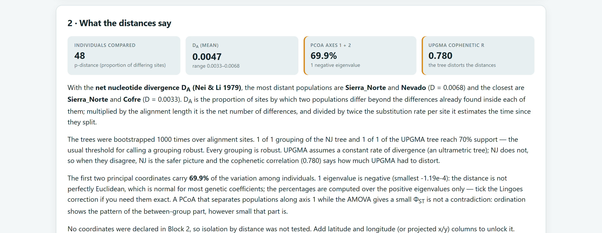
Figure 7.1. With the pine, the app chooses DA. Sierra Norte and Nevado are the most divergent populations (0.0068) and Sierra Norte and Cofre the closest (0.0033); that grouping has 87% support when the sites are resampled.
7.2Principal coordinates (PCoA)
Principal coordinates analysis (Gower, 1966) turns a distance matrix into a map: it looks for the axes on which the distances between points reproduce the genetic distances as closely as possible. The first axis captures most of the variation, the second most of what remains, and so on. Unlike principal component analysis, it works with any coefficient, which is why it is the usual ordination method in population genetics.
Figure 7.2. PCoA of four hypothetical units, computed with the app. The first axis (90% of the variation) separates the two pairs, the largest difference in the matrix; the second (7%) mainly separates C from D, which are farther apart (0.3) than A and B (0.2).
θNegative eigenvalues and the Lingoes correction
If a distance is Euclidean, it can be drawn without distortion and all the PCoA eigenvalues are positive. Many genetic distances are not (Jaccard, Nei, Gower), and some negative eigenvalues appear: they are variation that no map can represent. The app computes the percentages over the positive eigenvalues and warns you about it. The Lingoes correction adds a constant to the squared distances to make them Euclidean; the percentages are then exact, although somewhat smaller. The Smouse and Peakall distances and the squared Euclidean distance for bands are already squared, and the app uses them as they are.
✓Decision rule · reading a PCoA
If…
then…
Axes 1 and 2 add up to more than 50%
The map is a good summary: closeness on the plane reflects the matrix.
They add up to less than 25%
This is usual with individuals and highly variable markers. The map shows trends; two nearby points may differ on other axes. Check axis 3 as well.
The population ellipses overlap a great deal
Low differentiation, consistent with a small FST (chapter 6). A significant AMOVA is not a contradiction.
An individual falls within the cloud of another population
Possible migrant, labelling error or admixture; check it with the assignment in Block 7.
There are many large negative eigenvalues
Turn on the Lingoes correction before reporting percentages.
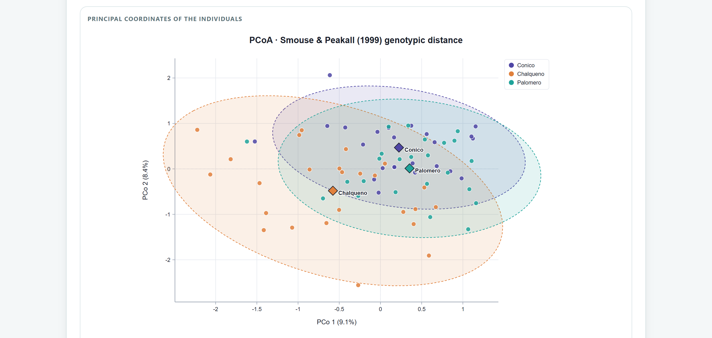
Figure 7.3. PCoA of the 75 maize plants (Smouse and Peakall), with 95% ellipses and centroids. Axes 1 and 2 add up to 17.5%, which is normal with individuals. Chalqueño stands apart on the left; Cónico and Palomero, the closest landraces (Nei’s D 0.114), overlap.
7.3NJ and UPGMA trees with bootstrap
A tree draws the matrix as a hierarchy of groupings. The app builds two, for populations and for individuals: UPGMA (Sokal and Michener, 1958) joins the closest pairs first and averages the distances; it assumes that all branches evolve at the same rate, so it gives a rooted tree with all the tips at the same height. Neighbour-joining (NJ; Saitou and Nei, 1987) makes no such assumption: it allows branches of different lengths and produces an unrooted tree, which the app roots at the midpoint or on an outgroup.
Figure 7.4. The two methods with the same four OTUs. UPGMA forces all of them to reach the same height; NJ lets each lineage have its own rate. When they disagree, NJ gives the safer picture.
θWhat bootstrap support means
The bootstrap (Felsenstein, 1985) repeats the analysis 1000 times with loci resampled with replacement (bands for dominant markers and alignment sites for sequences). In each replicate a new tree is built and the groupings that appear are recorded. The number on a branch is the percentage of replicates in which the same grouping reappears: it measures how much that grouping depends on a few loci, not the probability that it is true. The app computes it for the population trees and also for the individual trees when there are 60 individuals or fewer, such as the landraces with one sample each or the species in an alignment.
✓Decision rule · support and fit of the tree
If…
then…
Support of 70% or more
The grouping is robust to the loci sampled; it can be described.
Support of 50 to 70%
Weak grouping; mention it as a trend.
Support below 50%
Do not interpret the branching order. The app hides it by default.
Only three populations
An unrooted three-tip tree has no internal branches to test: it only shows lengths. The app says so.
UPGMA cophenetic correlation greater than 0.85
The tree reproduces the distances well. If it is lower, the tree distorts them; prefer NJ and the PCoA.
With few loci, low support is normal and does not mean the tree is wrong: it means the data are not enough to resolve it. Zero-length branches (identical units) receive no support, because the order in which they are joined is arbitrary.
A tree with a known answer
The five-genus example was simulated on a known tree: the outgroup Exterocarpus and, within the ingroup, (Fictaria, Modelanthus) and (Demoxylon, (Probocarpa, Testiflora)). The NJ tree of genera with DA recovers exactly that topology, with support values of 94, 100 and 99%.
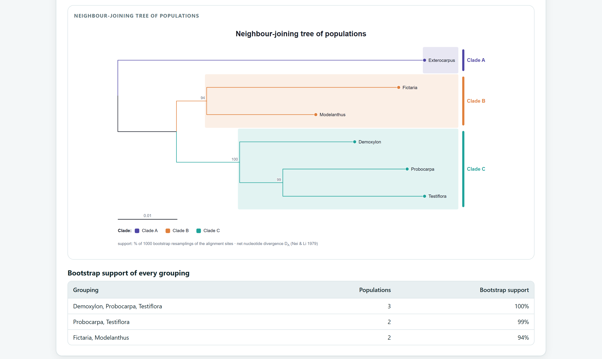
Figure 7.5. NJ tree of the genera with the net nucleotide divergence DA, midpoint-rooted, and its support table. The three groupings match the tree on which the data were simulated; the UPGMA cophenetic correlation is 0.943.
iNote · the root of the tree
NJ produces an unrooted tree. The app displays it rooted at the midpoint of the longest path between two tips, which is a good choice when rates are similar. If you know an outgroup, type it in Outgroup tips with Root set to outgroup; the root of a tree of populations of the same species hardly ever has evolutionary meaning, and in that case the unrooted layout is advisable.
7.4Trees with images of the OTUs
The trees in this block are edited in a full studio: rectangular, circular or unrooted layout; clades coloured by population, by region or cut from the tree; rings with the population, the region or the ancestry from Block 7; and images of each tip or group next to its branch. The images are stored in the browser, linked to the data file, and never leave the computer.
▸Step by step · adding images to a tree
In the 6 · Trees card, choose the tree in Tree and click 🖼 Images of the OTUs….
The list shows the groups (populations or regions) and the tips. Choose a name and drag its image onto the box, or click Add several images… to load several at once: they are assigned by file name.
Adjust the framing (zoom, offset, rotation), the tone and, if the photo has a plain background, Remove a plain background.
Enter the source and the licence, and tick the confirmation that the image shows exactly that taxon. Without that tick, the image is not drawn.
Close with Done, open Edit figure and, under Images, choose one per tip or one per group or clade.
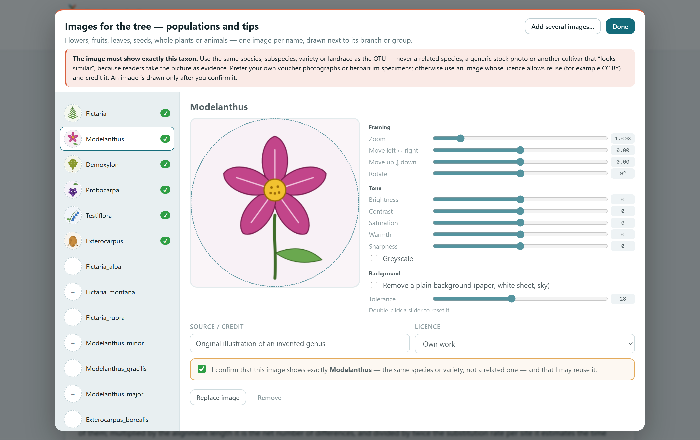
Figure 7.6. The image manager. On the left, the names with their status (✓ confirmed); on the right, the framing, the tone and background adjustments, the source, the licence and the confirmation. The illustrations in this example are original drawings made for the manual, because the genera in the example are fictitious.
!Important · the image is evidence
Anyone reading a tree with photographs understands that each photo shows that taxon. Use only images of the same species, variety or landrace: your own photos, herbarium specimens or images whose licence allows reuse (for example CC BY), and give credit. Never a “similar” species or a generic photo. The app asks you to confirm this for each image and stores the source and licence so that you can cite them.
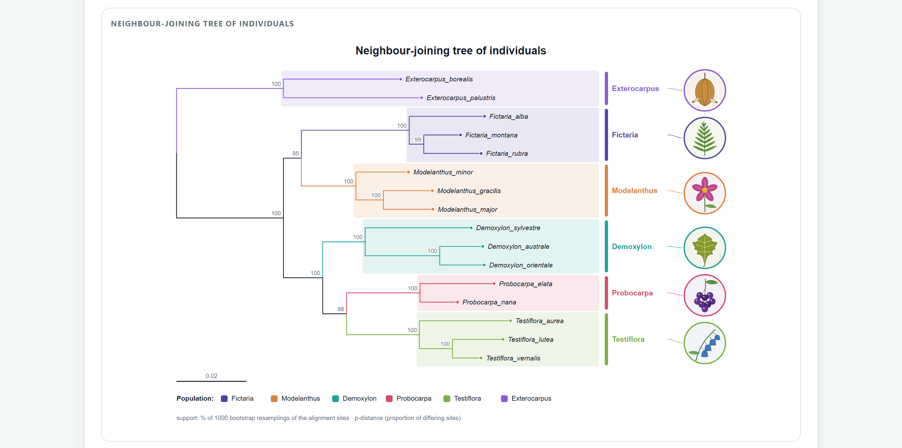
Figure 7.7. NJ tree of the 16 species, rooted on the outgroup Exterocarpus, coloured by genus and with one image per genus. All the groupings in the tree have 95% support or more when the 1600 alignment sites are resampled.
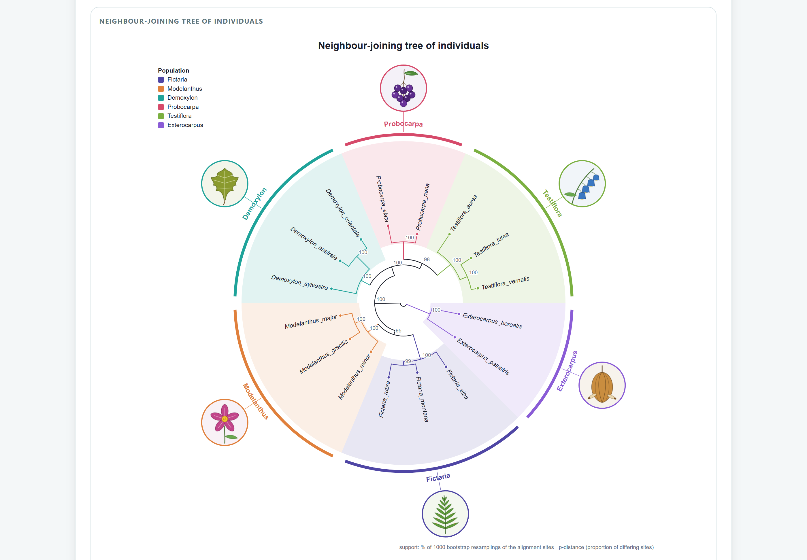
Figure 7.8. The same tree in circular layout and midpoint-rooted, with shaded clades, arcs bearing the name of each genus and names in italics. It is exported like any other figure (PNG, TIFF, SVG, JPG or WEBP) with the images included.
Table 7.4. Main options of the tree studio (Edit figure).
Option
What it is for
Layout
Rectangular (default up to 25 tips), circular or unrooted (equal angle).
Root · Outgroup tips
Root as computed, at the midpoint or on an outgroup (NJ trees).
Colour · Number of clades
Colour by population or region, or cut the tree into k clades with names of your own.
Ring: Population · Ring: Region · Ring: Ancestry (Block 7)
Rings with the population or region of each individual, or with its ancestry proportions from Block 7.
Images · Image size · Image frame
One image per tip or per group, its size, frame and leader lines.
Support · Hide support below (%)
Support as dots or numbers, and the threshold below which it is hidden.
Italic names · Branch lengths
Scientific names in italics; proportional branches or aligned tips (cladogram).
7.5Mantel and isolation by distance
If seeds and pollen travel only short distances, nearby populations exchange more migrants than distant ones and are more alike. This pattern is called isolation by distance. The Mantel test (1967) measures the correlation between the genetic distance matrix and the geographic distance matrix, and tests it by permuting the rows and columns of one of them. The app computes great-circle geographic distances from latitude and longitude.
θRousset’s regression
Rousset (1997) showed that, in two dimensions, FST/(1 − FST) increases linearly with the logarithm of distance, and that the slope is 1/(4Dπσ²), where D is the plant density and σ² the mean squared parent–offspring dispersal distance. The app therefore plots θ/(1 − θ) for each pair of populations against ln(distance) and tests that relationship with Mantel. A positive, significant slope indicates isolation by distance; its value allows the genetic neighbourhood to be estimated if the density is known.
✓Decision rule · isolation by distance
If…
then…
Positive slope and significant Mantel test between populations
Isolation by distance: gene flow decreases with distance.
Not significant
Distance does not predict differentiation at this scale: extensive gene flow, structure due to another cause (habitat, altitude, history) or too few populations.
Few populations (6 or fewer)
With n populations there are only n! ways to reorder them; with 4, the smallest possible P is 1/24 ≈ 0.04. Read the slope and the figure, not the P value.
Mantel significant only between individuals
Pairs from the same population are close together and alike, so the correlation mainly reflects the differences between populations. Fine-scale spatial structure is studied in Block 9.
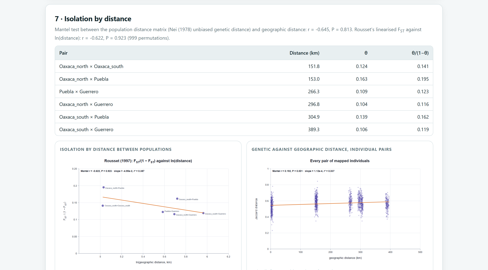
Figure 7.9. Isolation by distance in the four agave populations, which are between 152 and 389 km apart. Rousset’s slope is negative (−0.050; Mantel r = −0.62, P = 0.92): there is no isolation by distance. Between individual plants the correlation is positive (r = 0.19, P = 0.001), but this is because plants from the same population share coordinates and are alike; on the right you can see the columns of pairs at each distance.
iNote · coordinates
The 7 · Isolation by distance card appears when the file includes latitude and longitude (Block 2) for at least 4 individuals. With decimal degrees, the great-circle distance in kilometres is used; if the values do not fit as degrees (projected coordinates, for example UTM), they are used as Euclidean distances in map units. The test between populations uses the centroid of each population and requires all of them to have coordinates.
7.6Block settings, tables and figures
Block 6 opens with three or more units, with any data type. On entering, everything is computed with the default settings; if you change any of them, click Compute distances, ordination and trees.
Table 7.5. Block 6 settings.
Setting
Options
Recommendation
Distance between populations
The coefficients in table 7.1. It appears with three or more replicated populations.
Nei (1978); DA with sequences.
Distance between individuals
Depending on the data type (table 7.2).
The default for each type.
Bootstrap replicates over loci
0 to 10,000 (default 1000); it reads bands or alignment sites depending on the data.
1000.
Lingoes correction for negative eigenvalues
Off by default.
Turn it on to report exact percentages.
Mantel permutations
0 to 9999 (default 999).
999; 9999 for the paper.
Random seed
Integer.
Report it in the methods.
Table 7.6. Block 6 result cards.
Card
Contents
Download
2 · What the distances say
Figures and interpretation: most and least distant pairs, tree support, PCoA and isolation by distance.
—
3 · Distances between populations
Matrix of the chosen coefficient (with Nei’s identity I), all the coefficients pair by pair and the heat map.
Population matrix (CSV)
4 · Distances between individuals
Summary and, for up to 30 units, the full matrix.
Individual matrix (CSV)
5 · Principal coordinates
Eigenvalues and percentages, PCoA of individuals and of populations, and the eigenvalue plot.
Scores of every unit (CSV)
6 · Trees
NJ and UPGMA trees of populations and of individuals, with the tree studio and the support table.
Newick
7 · Isolation by distance
Geographic distances and θ per pair, and the plots between populations and between individuals.
—
7.7Step by step: maize landraces with ISSR
The 15 maize landraces have one bulked sample each and 31 ISSR bands. There are no populations with replicates, so Block 6 works between the landraces: it is the central analysis for this kind of data.
▸Step by step
In Block 2, load Maize landraces · ISSR, build the dataset and open Block 6.
A notice explains that the analysis is carried out between landraces; the distance is Jaccard and the bootstrap is done over bands (figure 7.10).
Read the figures and the interpretation (figure 7.11) and check the distance matrix (figure 7.12).
Explore the PCoA and the eigenvalue plot (figures 7.13 and 7.14).
Check the NJ tree and its support table (figures 7.15 and 7.16); in Tree, compare it with UPGMA.
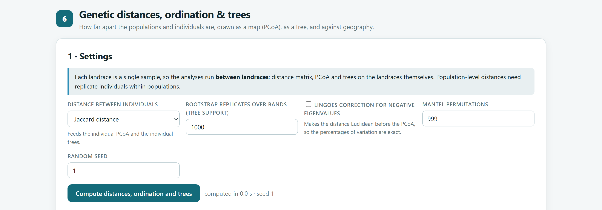
Figure 7.10. Settings with the maize landraces. The distance between populations does not appear, and the bootstrap is done over the bands.
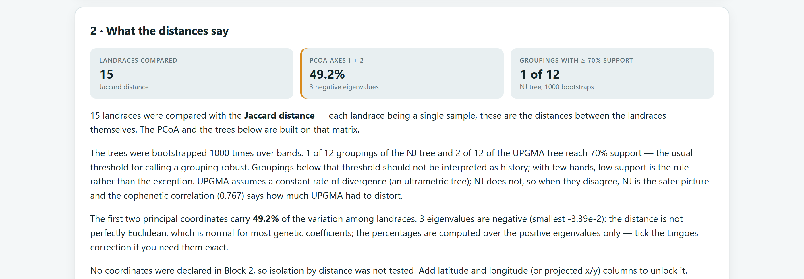
Figure 7.11.What the distances say. 15 landraces compared with Jaccard; the first two PCoA axes add up to 49.2%, and only 1 of the 12 groupings in the NJ tree reaches 70% support.
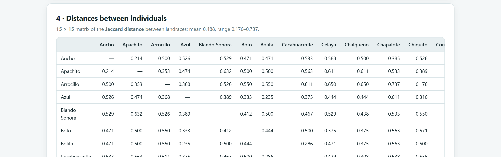
Figure 7.12. Part of the Jaccard matrix (mean 0.488). The most similar pair is Arrocillo–Chiquito (0.176) and the most different Arrocillo–Chapalote (0.737).
Table 7.7. Nearest neighbour of each landrace according to Jaccard.
Landrace
Most similar
Distance
Landrace
Most similar
Distance
Arrocillo
Chiquito
0.176
Cacahuacintle
Bolita
0.286
Ancho
Apachito
0.214
Chalqueño
Cacahuacintle
0.308
Azul
Bolita
0.235
Bofo
Azul
0.333
Comiteco
Chiquito
0.263
Blando Sonora
Cónico
0.375
Celaya
Bofo
0.375
Chapalote
Ancho
0.385
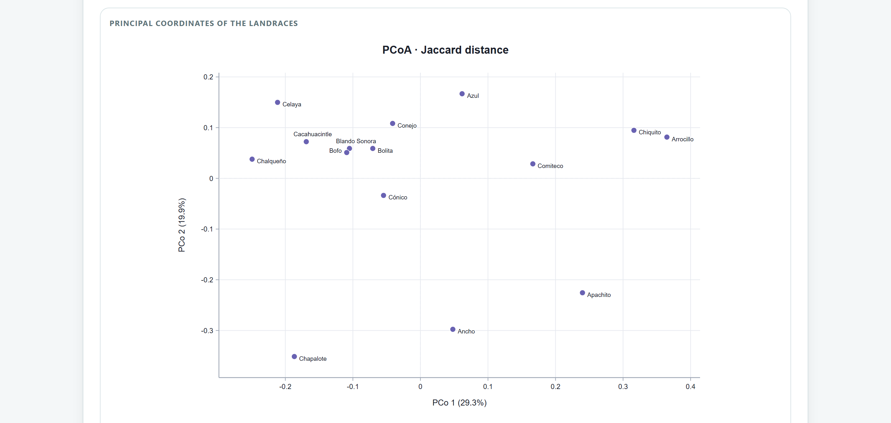
Figure 7.13. PCoA of the landraces. The first axis (29.3%) runs from Chalqueño, Celaya and Cacahuacintle on the left to Arrocillo, Chiquito and Apachito on the right; the second (19.9%) separates Chapalote, Ancho and Apachito towards the bottom. The labels are spread out automatically so that they do not overlap.
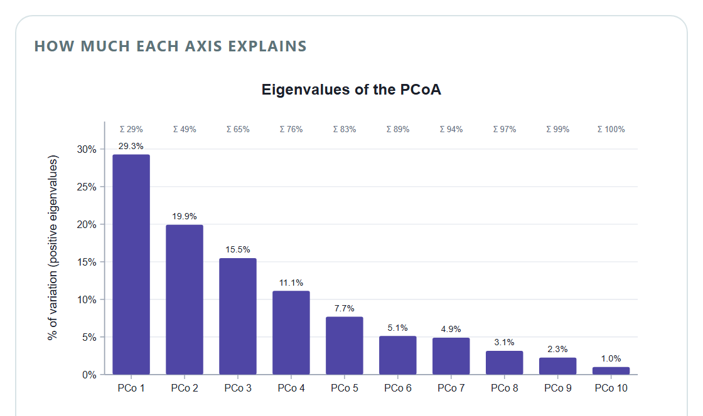
Figure 7.14. Variation of each axis and cumulative variation (Σ). There are 3 small negative eigenvalues (the smallest, −0.034); with the Lingoes correction the first three axes become 25.3, 17.7 and 14.1%.
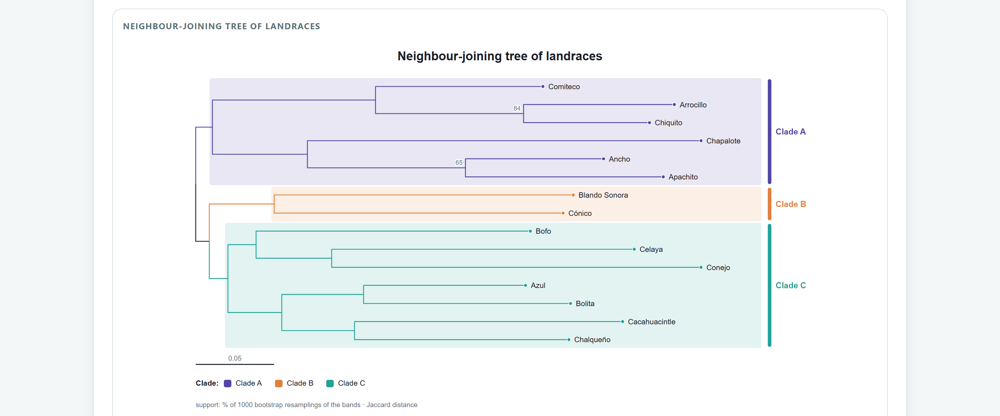
Figure 7.15. NJ tree rooted at the midpoint and cut into three clades. Clade A brings together Comiteco, Arrocillo, Chiquito, Chapalote, Ancho and Apachito, the same landraces as at the right-hand and lower end of the PCoA. Only Arrocillo–Chiquito (84%) and Ancho–Apachito (65%) exceed 50% support.
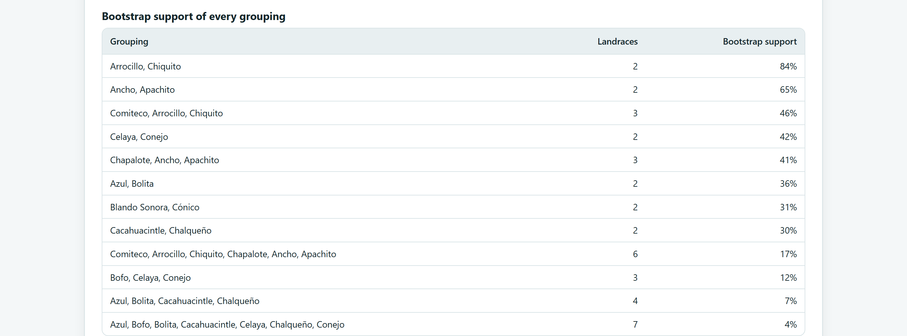
Figure 7.16.Bootstrap support of every grouping, sorted from highest to lowest. Each row names the smaller side of the grouping. The large clades have almost no support: A, 17%, and C, 4%.
θHow to read these results
The PCoA and the tree tell the same story. Arrocillo, Chiquito and Comiteco form one group, and Ancho and Apachito another, in both representations.
Only two pairs are robust. Arrocillo–Chiquito has 84% in NJ and 70% in UPGMA, and Ancho–Apachito 65 and 72%. The rest of the branching is not resolved with 31 bands.
The three clades are a way of arranging the figure, not demonstrated groups. Their support is low; proposing groups of landraces requires the clustering of Block 7 or more markers.
UPGMA somewhat distorts the distances (cophenetic correlation 0.767): NJ and the PCoA are the reference.
iNote · what to report in a paper
The distance coefficient and why it was chosen; the PCoA with the percentage of the axes shown, stating whether the Lingoes correction was applied; the tree method, how it was rooted and the number of bootstrap replicates, showing only support values of 50% or more; and, if coordinates are available, the Mantel correlation, its P value and the number of permutations. If the tree carries images, cite the source and licence of each one. The Newick download saves the tree with the support values for other tree-editing programs.
iNote · verification of the calculations
For this manual, the six between-population coefficients were recomputed with independent code for the maize (differences smaller than 10−15), as were the Smouse and Peakall, shared-allele, Jaccard, Dice, simple matching, Euclidean, DA and dXY distances. The PCoA reproduces the Euclidean band distance exactly when all its axes are used (error of 10−12). NJ recovered the topology and branch lengths of 20 randomly generated additive trees, UPGMA gave ultrametric trees, the great-circle distance from Mexico City to Oaxaca was 365 km, and under the null hypothesis the Mantel test was significant in 7 out of 100 cases. The five-genus tree recovered the simulated topology.
The next chapter looks for structure that was not declared in advance: Block 7 clusters individuals with a Bayesian admixture model, chooses the number of groups, performs discriminant analysis of principal components and detects possible migrants.
B7
Chapter eight · Block 7 · Clustering
Bayesian clustering and assignment
Up to this point, the populations were the ones you declared. Block 7 asks the data how many genetic clusters they support and which one each individual belongs to, using two complementary methods: a Bayesian admixture model and discriminant analysis of principal components (DAPC). It then assigns each genotype to the population where it is most likely and flags possible migrants.
8.1The admixture model
8.2How many clusters? ΔK, Ln P(D) and Puechmaille
8.3DAPC
8.4Assignment and migrants
8.5Block settings, tables and figures
8.6Step by step: agave with AFLP
8.1The admixture model
If the plants you sampled come from several gene pools, each gene pool has its own allele frequencies. The model of Pritchard, Stephens and Donnelly (2000) searches for those gene pools without knowing in advance where each plant came from.
θThe idea in one sentence
The model assumes K clusters, each with its own allele frequencies P, and, for each individual, the fraction of its genome that comes from each cluster, Q. The algorithm distributes the allele copies among the clusters so that, within each cluster, the genotypes fit Hardy–Weinberg equilibrium as closely as possible and the loci are independent. An individual with Q = (1, 0, 0) comes entirely from cluster 1; one with Q = (0.6, 0.4, 0) is admixed between clusters 1 and 2.
Figure 8.1. On the left, three clusters with different frequencies for the alleles of one locus. On the right, each bar is an individual and its colours add up to 1: the fraction of its genome that comes from each cluster. This is how to read the app’s membership bar plot (barplot).
Table 8.1. The elements of the model and what the app reports for each of them.
Element
What it is
Where it appears
K
Number of clusters tested. The app runs several values, from K from to K to.
K table and plots in card 2.
Q (membership)
Fraction of each individual’s genome that comes from each cluster; average over all the sampled iterations.
Bar plot, table by population and Q matrix (CSV).
P (frequencies)
Allele frequencies of each cluster, with a Dirichlet prior with λ = 1 (frequencies independent among clusters).
Used in the calculation; not shown.
α (admixture)
How admixed the individuals are: small (< 0.2), almost all pure; close to 1 or larger, widespread admixture or an excessive K. It is estimated at each iteration.
Interpretation in card 2.
Ln P(D)
Estimate of the likelihood of the model with K clusters: mean of ln L minus half its variance during sampling.
K table and the Ln P(D) against K plot.
Burn-in and iterations
Iterations discarded while the chain stabilises, and those averaged afterwards.
Burn-in iterations · Sampled iterations.
Replicates
Independent runs for each K, with different seeds; they make it possible to measure the variation of Ln P(D) and the agreement between solutions.
Replicates per K; H′ column.
iNote · details of this implementation
The app offers the admixture model (default) and the no-admixture model, in which each individual belongs to a single cluster; in both, allele frequencies are independent among clusters. Dominant bands are treated as haploid loci, one copy per individual. Missing data simply contribute nothing. The runs are carried out in a background thread, so you can keep using the page; when the app is opened by double-clicking, some browsers do not allow that thread and the runs are carried out in the page itself, with the same results.
!Important · what the model assumes
The model expects Hardy–Weinberg equilibrium and independent loci within each cluster. In plants this often fails: selfing and clonal propagation create heterozygote deficits and linkage; families sampled together form clusters that are not populations; isolation by distance turns a continuous gradient into artificial clusters; and uneven sampling makes ΔK underestimate K. Before interpreting, check FIS and the linkage results of Block 4 and the isolation by distance of Block 6.
8.2How many clusters? ΔK, Ln P(D) and Puechmaille
No single number decides K on its own. The app runs the model with several values of K and several replicates, and brings together four lines of evidence: the likelihood Ln P(D), Evanno’s ΔK, Puechmaille’s estimators and the agreement between replicates. The final decision is made by looking at the bar plots as well.
Table 8.2. The criteria for choosing K. L(K) is the mean Ln P(D) of the replicates with K clusters and s its standard deviation.
Criterion
Calculation
How to read it
Ln P(D) Pritchard et al. (2000)
mean(ln L) − variance(ln L)/2
It usually rises up to the best-supported K and then levels off or falls, while the replicates spread out (s increases).
It measures how abrupt the change in Ln P(D) is. It finds the uppermost level of structure; it cannot choose K = 1 or the last K, and it requires two or more replicates.
clusters to which at least one population belongs with a mean (Mea) or median (Med) Q ≥ 0.5; median (Med) or maximum (Max) across replicates
Designed for uneven sampling. Their highest value estimates K. They require declared populations.
H′ Jakobsson and Rosenberg (2007)
1 − ‖Q1 − Q2‖ / √(2N), averaged over pairs of aligned replicates
1 = identical replicates. Below 0.90, the runs reach different solutions.
Individuals with Q ≥ 0.8
individuals with at least 80% of their genome in one cluster (consensus Q)
If none exceeds 0.8, the clusters do not separate individuals: the signal is weak.
▸Worked example · ΔK of the agave at K = 3
The mean Ln P(D) values of the three replicates are −2768.9 with K = 2, −2699.7 with K = 3 and −2671.5 with K = 4, and the standard deviation with K = 3 is 4.04.
ΔK(3) = 41.0 / 4.04 = 10.1. The app shows 10.18 because it works with the unrounded values.
With K = 4, Ln P(D) is higher, but its standard deviation (10.94) almost triples and ΔK(4) drops to 5.43: ΔK prefers K = 3 even though the best fit is at K = 4.
✓Decision rule · choosing K
If…
then…
ΔK, Ln P(D) and Puechmaille agree
That K is well supported. Confirm it in the bar plot.
ΔK gives a smaller K than Ln P(D)
ΔK marks the uppermost level of structure; the K from Ln P(D) may be the subdivision within it. Choose the largest K at which every cluster has individuals with high Q and the replicates agree.
Ln P(D) is highest at K = 1
The ΔK peak is not evidence of clusters on its own, because ΔK never chooses K = 1. Accept K = 2 only if there are individuals with Q ≥ 0.8 in both clusters.
H′ falls below 0.90
Replicates are in different solutions: lengthen the chains, increase the replicates and do not interpret the consensus plot for that K.
A Puechmaille estimator counts a cluster whose mean Q does not reach 0.6 in any population
The count is fragile and the app warns about it: confirm it with the bar plot and with the individuals with Q ≥ 0.8.
The agave: four clusters
The 80 agave plants with 60 AFLP bands, with the default settings (K from 1 to 6, 3 replicates, 5000 + 10,000 iterations), give a typical case in which ΔK and Ln P(D) disagree.
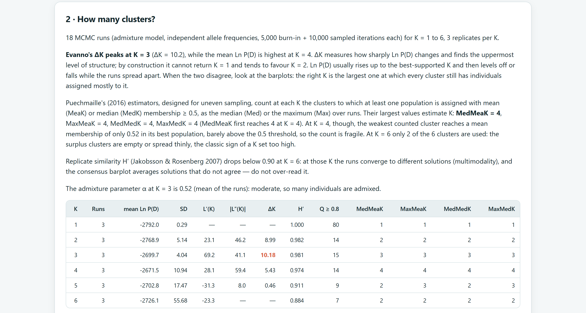
Figure 8.2.How many clusters? with the agave. Ln P(D) rises up to K = 4 (−2671.5) and then falls while the standard deviation grows (17.47 and 55.68). ΔK peaks at K = 3 (10.18). The Puechmaille estimators reach 4 at K = 4 and drop afterwards; the app warns that the least-used cluster, that of Guerrero, barely reaches a mean membership of 0.52. H′ stays above 0.97 up to K = 4, and 14 to 15 plants have Q ≥ 0.8 with K from 2 to 4.
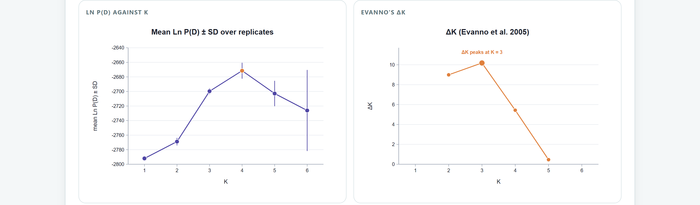
Figure 8.3. Mean Ln P(D) ± standard deviation (left; the orange dot is the maximum) and ΔK (right). The bar at K = 6 shows how the replicates spread out when K is excessive.
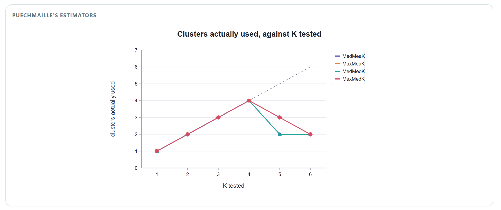
Figure 8.4. Puechmaille estimators against the K tested. The dotted line is K = K: as long as the estimators follow it, every new cluster is used by some population. They depart from it after K = 4.
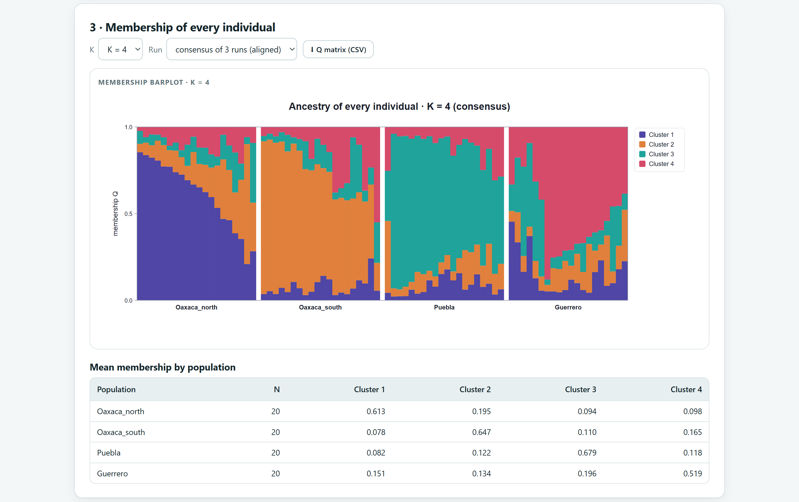
Figure 8.5.Membership of every individual with K = 4 (consensus of 3 replicates). Each population has its own cluster, with a mean membership of 0.61 (Oaxaca north), 0.65 (Oaxaca south), 0.68 (Puebla) and 0.52 (Guerrero), the most admixed. The four sampled populations are the four genetic clusters.
When there are no clear clusters: maize with microsatellites
The three maize landraces differ, but only slightly: θ = 0.049 in chapter 6. With 8 microsatellites and the default settings, the admixture model does not separate them, and the example shows why reading ΔK is not enough.
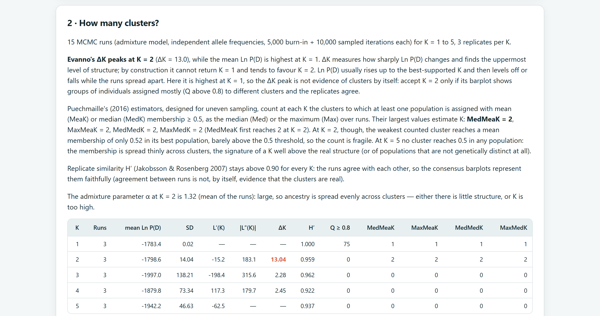
Figure 8.6. Maize with microsatellites. ΔK has a clear peak at K = 2 (13.04), but Ln P(D) is highest at K = 1 (−1783.4) and no individual reaches Q ≥ 0.8 with K from 2 to 5. The Puechmaille estimators count 2 clusters at K = 2, but the app warns that the mean membership barely exceeds 0.5.
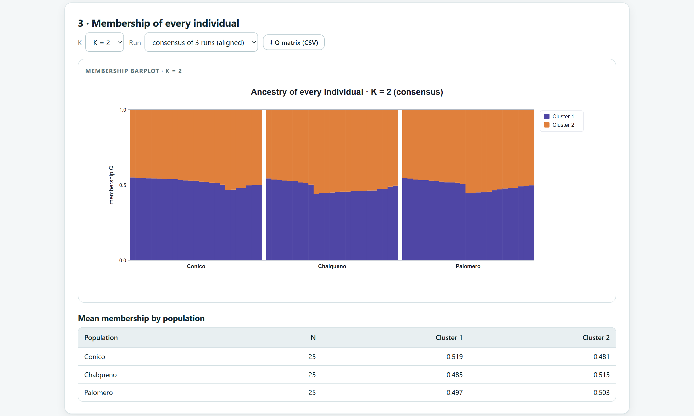
Figure 8.7. The bar plot with K = 2: all plants lie between 0.45 and 0.56 in each cluster, and the three landraces have mean memberships of 0.49 to 0.52. There are no clusters. Compare it with figure 8.5.
θFailing to detect clusters is not the same as having no differentiation
The AMOVA in chapter 6 found significant differences between these landraces, and the DAPC in section 8.3 distinguishes them in 72% of cases. The Bayesian model needs moderate differentiation, or many loci, to form clusters of individuals; with small differences and few loci, the honest answer is “one cluster”. Moreover, the simulated data in this example have a heterozygote deficit within the landraces (F = 0.16), which the model does not expect.
8.3DAPC
Discriminant analysis of principal components (Jombart, Devillard and Balloux, 2010) does not use a genetic model: it assumes neither Hardy–Weinberg equilibrium nor independent loci. It first summarises the genotypes with a principal component analysis (PCA) and then looks for the axes that best separate the groups, whether they are the populations you declared or groups the method itself finds.
Figure 8.8. The four steps of DAPC. Keeping too few components loses information; keeping too many makes the discriminant axes fit the particular individuals in the sample.
θReassignment and leave-one-out validation
DAPC computes, for each individual, the probability of belonging to each group, and reassigns it to the most probable one. That success rate is optimistic, because the same individuals defined the axes. The app also computes the leave-one-out success rate: each individual is classified with a discriminant analysis built without it. That is the figure to report and to compare with chance (1/number of groups).
Table 8.3. DAPC success with the maize according to the number of components retained. Reassignment keeps rising; leave-one-out success levels off.
Components retained
2
6
10
12
15
18
22 (automatic)
25
Variance retained (%)
17.4
42.7
60.9
68.1
77.2
84.5
91.0
94.4
Reassignment (%)
56.0
68.0
77.3
80.0
88.0
92.0
94.7
92.0
Leave-one-out (%)
54.7
64.0
68.0
70.7
70.7
72.0
72.0
76.0
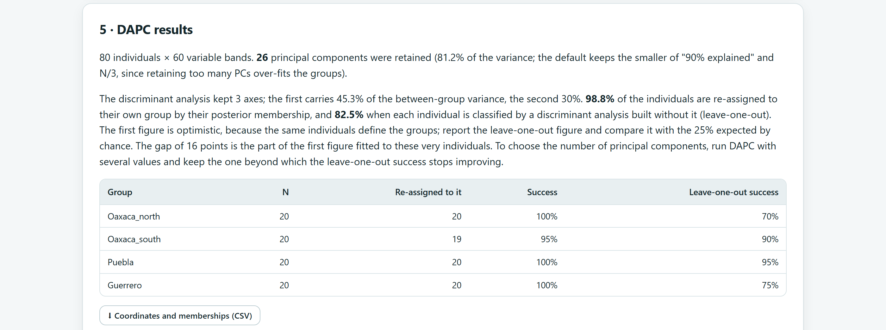
Figure 8.9.DAPC results with the agave: 26 components (81.2% of the variance) and 3 discriminant axes. Reassignment is 98.8% and leave-one-out success 82.5%, against 25% expected by chance. Oaxaca north (70%) and Guerrero (75%) are the least distinct groups.
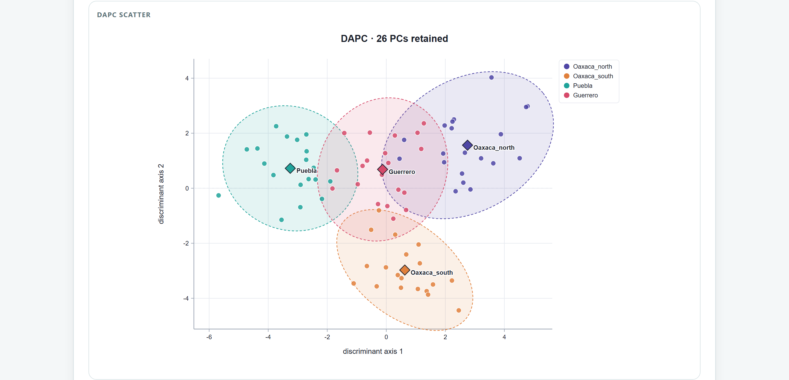
Figure 8.10. The first two discriminant axes (45.3% and 30% of the between-group variance), with 95% ellipses and centroids. Puebla lies on the left, Oaxaca north on the right and Oaxaca south at the bottom; Guerrero, in the centre, overlaps with Puebla and with Oaxaca north, and it is also the population that receives the most plants in the assignment of section 8.4.
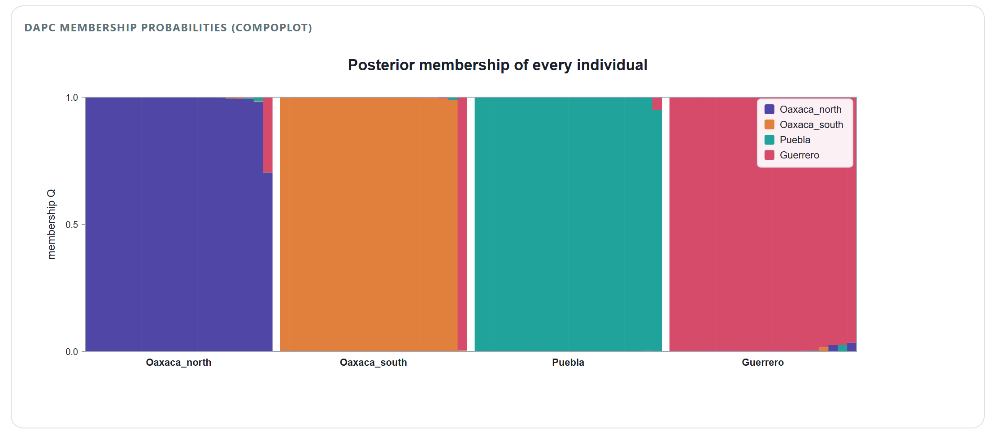
Figure 8.11. DAPC membership probabilities (compoplot). Almost all plants have a probability close to 1 of belonging to their own population: this is the optimistic reassignment of figure 8.9. These are not ancestry proportions like the Q values of figure 8.5, but the certainty of the classification.
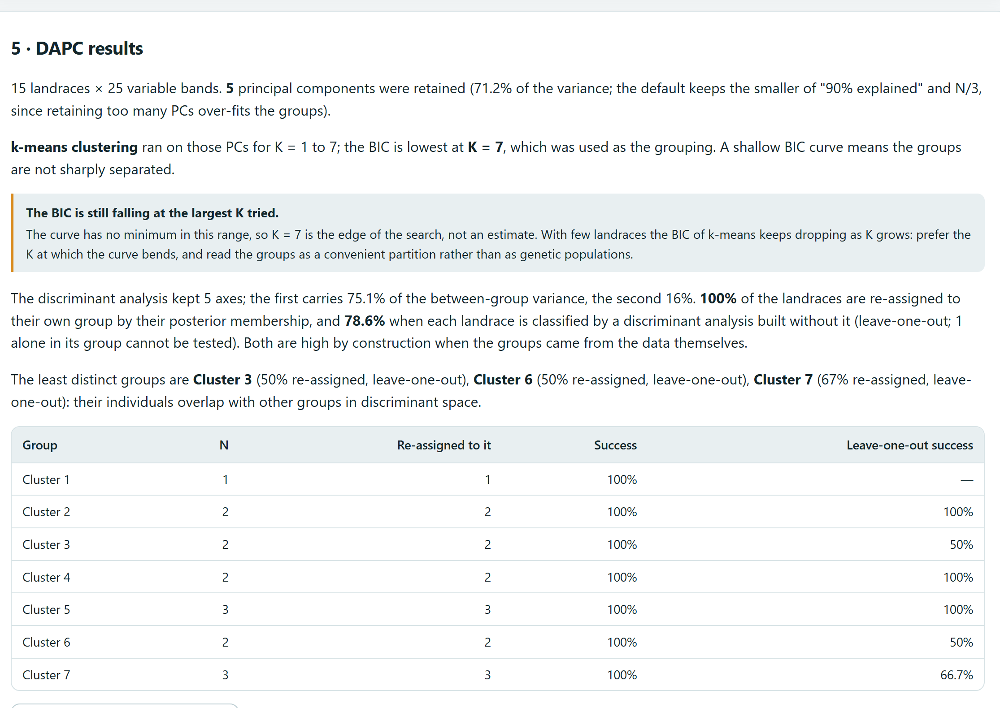
Figure 8.12. DAPC with k-means groups for the 15 ISSR landraces. The app warns that the BIC is still falling at the largest K tested (7): this is the edge of the search, not an estimate. The groups contain 1 to 3 landraces; the one left on its own cannot be evaluated by leaving it out.
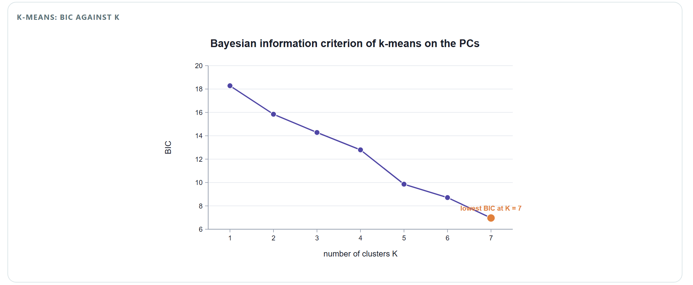
Figure 8.13. The BIC for the landraces falls from 18.3 (K = 1) to 7.0 (K = 7) with no minimum or elbow. The PCoA and the tree of Block 6 are a better choice.
✓Decision rule · reading a DAPC
If…
then…
Leave-one-out success clearly exceeds chance
The groups are genetically distinguishable. Report that figure, not the reassignment.
Reassignment far exceeds leave-one-out success
Part of the success is fit to the sample. Try several numbers of components and keep the one beyond which leave-one-out success stops improving (table 8.3).
One group has low success (below 70%)
Its individuals are confused with other groups; see which ones in the scatter plot.
Groups found by k-means
Success is high by construction. Look for a minimum or an elbow in the BIC curve; if it is still falling at the largest K tested, there is no optimum and the groups are merely a convenient partition.
8.4Assignment and migrants
The assignment test answers a different question: does each individual resemble the population where you collected it more than any other? It computes the probability of its multilocus genotype in each population, assuming Hardy–Weinberg equilibrium (p² for a homozygote, 2pq for a heterozygote, multiplying across loci), and assigns it to the population where that probability is highest (Paetkau et al., 1995; Rannala and Mountain, 1997).
Table 8.4. The two ways of estimating the allele frequencies of each population. na is the number of copies of the allele, n the total number of copies in the population and k the number of alleles at the locus across all the data.
Method
Frequency
Comment
Rannala and Mountain (1997) Bayesian, default
(na + 1/k) / (n + 1)
An allele absent from the population receives a small but reasonable frequency. This is the recommended method.
Paetkau et al. (1995)
na / n, or 0.01 if the allele is missing
The value 0.01 is an arbitrary convention; it is included for comparison with older studies.
▸Worked example · an AA plant from population 1
One locus with two alleles. Population 1 has 30 copies of A and 10 of B (20 plants); population 2, 12 of A and 28 of B. The plant is AA and was collected in population 1, so before the calculation its two copies of A are removed from that population (leave-one-out): 28 out of 38 remain.
Population
Frequency of A (Rannala and Mountain)
L = p²
ln L
1 (its population)
(28 + 1/2) / (38 + 1) = 0.731
0.534
−0.63
2
(12 + 1/2) / (40 + 1) = 0.305
0.093
−2.38
The genotype is 5.7 times more likely in population 1: it is assigned to its own population. With several loci, the ln L values of each locus are added. Without leaving the plant out, the frequency of A in its population would be 0.744 and correct assignment would look slightly easier than it really is.
θThe first-generation migrant test
A misassigned individual is not necessarily a migrant: if the populations are similar, many residents fit almost as well in another one. To separate the two cases, the app computes λ = ln(Lhome/Lmax), where Lhome is the likelihood in the population where the individual was collected and Lmax the highest among all of them (Paetkau et al., 2004). λ equals 0 if the individual fits best in its own population and is negative if it fits better in another. The app then simulates genotypes of residents of that population (500 by default) and computes λ for each one; each simulated genotype is evaluated against a resample with replacement of the population, so that it has the same sampling error as a real resident evaluated with leave-one-out. The P value is the fraction of simulated residents with a λ as low or lower. With P < α (0.01 by default), the individual is flagged as a possible migrant.
Figure 8.14. The idea behind the migrant test, with the values of the agave plant Oaxaca_south_12. The distribution is schematic: the one in the app comes from the simulated genotypes of the population where the plant was collected.
✓Decision rule · assignment and migrants
If…
then…
Self-assignment is high
The populations are distinguishable. Compare it with chance (1/number of populations) and with the FST of chapter 6: it increases with differentiation and with the number and variability of the loci (Cornuet et al., 1999).
Two populations exchange many individuals in the matrix
They are the least differentiated pair. This is not proof of current gene flow.
Few individuals flagged as migrants
With N individuals and α = 0.01, about N × 0.01 are expected by chance. If the number flagged does not greatly exceed that value, treat them as candidates for review, not as proven migrants.
A misassigned individual with a high P
It is a resident that resembles another population, not a migrant.
Populations with fewer than 5 individuals
They are excluded from the test: their frequencies are not reliable.
The test assumes that all possible source populations are in the data. A migrant from an unsampled population appears as an unusual individual in all of them.
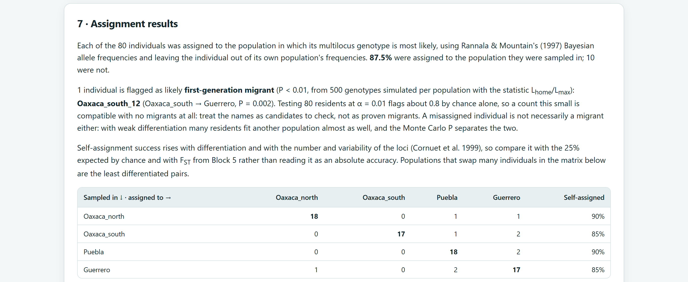
Figure 8.15.Assignment results with the agave: 87.5% of the plants are assigned to their own population (70 of 80). One plant, Oaxaca_south_12, is flagged as a possible migrant, assigned to Guerrero (P = 0.002), but with 80 plants 0.8 are expected by chance, and the app says so.
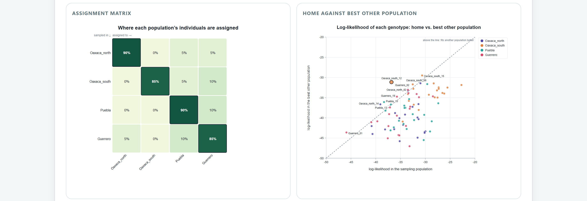
Figure 8.16. On the left, the assignment matrix in percentages: the diagonal ranges from 85 to 90%. On the right, the likelihood of each genotype in its own population (horizontal axis) against the best of the others (vertical axis). Plants above the diagonal fit better in another population and are labelled; the circle with a thick outline is the possible migrant.
8.5Block settings, tables and figures
Block 7 opens with six or more individuals and three polymorphic markers; it does not apply to morphological characters or to a single sequence alignment. The three parts (Bayesian clustering, DAPC and assignment) are run separately, each with its own button.
Table 8.5. Block 7 settings.
Setting
Options
Recommendation
Model
Admixture or No admixture (each individual from a single cluster).
Admixture, unless you know there are no hybrids.
K from · K to
1 to 20. On entering, K runs from 1 to the number of populations plus 2.
Include K = 1 and at least two values above the expected one.
Replicates per K
1 to 20 (default 3). ΔK needs 2 or more.
10 to 20 for publication.
Burn-in iterations · Sampled iterations
Default 5000 + 10,000.
1000 + 2000 to explore; 50,000 + 100,000 for publication.
Random seed
Integer; DAPC and assignment use it too.
Report it in the methods.
Groups (DAPC)
The populations from Block 2, or groups found by k-means with K chosen by BIC (Largest K to try, default 10).
Populations if there are any; k-means to explore.
Principal components retained
Empty: the smaller of 90% of the variance and N/3.
Compare several values using leave-one-out success.
Allele frequencies (assignment)
Rannala and Mountain (1997) or Paetkau et al. (1995).
Rannala and Mountain.
Simulated genotypes per population
0 to 10,000 (default 500); 0 skips the migrant test.
500; 1000 or more for publication.
Migrant threshold α
0.001 to 0.1 (default 0.01).
0.01.
Table 8.6. Block 7 result cards.
Card
Contents
Download
2 · How many clusters?
Interpretation, K table (Ln P(D), ΔK, H′, individuals with Q ≥ 0.8 and Puechmaille estimators), plots of Ln P(D), ΔK and Puechmaille.
—
3 · Membership of every individual
Bar plot of the chosen K and run (consensus or each replicate) and mean membership by population.
Q matrix (CSV)
5 · DAPC results
Interpretation, success by group (reassignment and leave-one-out), BIC curve if k-means was used, scatter plot and membership probabilities.
Coordinates and memberships (CSV)
7 · Assignment results
Interpretation, assignment matrix, heat map, likelihood plot and a table of every individual sorted by P value.
Assignment of every individual (CSV)
8.6Step by step: agave with AFLP
The four agave populations, with 20 plants each and 60 bands, take us through the whole block. The values in this chapter are those produced by the app with the default settings and seed 1.
▸Step by step
In Block 2, load Agave · AFLP, build the dataset and open Block 7 (figure 8.17).
Click Run the MCMC. The 18 runs take about 3 minutes; the progress bar shows the Ln P(D) of each one.
In How many clusters?, compare Ln P(D), ΔK, the Puechmaille estimators and H′ (figures 8.2 to 8.4).
In Membership of every individual, change K to 3, 4 and 5 and see at which value every cluster has plants of its own (figure 8.5).
Click Run DAPC with the populations as groups (figures 8.9 to 8.11).
Click Run the assignment and check the matrix, the likelihoods and the table of individuals (figures 8.15 and 8.16).
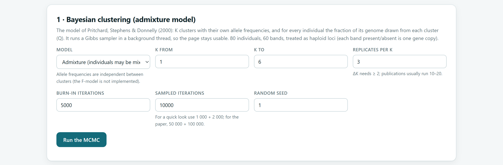
Figure 8.17. Bayesian clustering settings with the agave: 80 individuals and 60 bands treated as haploid loci, K from 1 to 6 and 3 replicates.
θHow to read these results
Four clusters, not three. ΔK prefers K = 3, but Ln P(D) and the four Puechmaille estimators point to K = 4, the replicates agree (H′ = 0.974) and the bar plot gives each population its own cluster. The Guerrero cluster is the weakest (0.52), so it should be confirmed with long chains and more replicates before publication.
Differentiated populations, with admixture. Mean membership in their own cluster ranges from 0.52 to 0.68 and α is around 0.5 with K = 3: many plants carry ancestry from other clusters, consistent with the θB of 0.125 in chapter 6.
The three methods agree on the ranking. Guerrero and Oaxaca north are the least distinct in the DAPC (75 and 70% with leave-one-out), Guerrero is the most admixed in the bar plot and it receives five of the ten misassigned plants.
No evidence of migrants. One plant flagged out of 80, when 0.8 are expected by chance.
iNote · what to report in a paper
For Bayesian clustering: the model, the values of K tested, the number of replicates, the burn-in and sampling iterations, the seed, and all the criteria for choosing K, with the bar plot of the chosen K (and, if they differ, that of the ΔK value). For DAPC: the number of components, how the groups were defined and the leave-one-out success. For assignment: the frequency method, the self-assignment rate and, for migrants, the number of simulations, α and how many are expected by chance. The methods section of the Block 10 report writes all of this up.
iNote · verification of the calculations
For this manual, the app’s Ln P(D) with K = 1 was compared with its analytical value under the Dirichlet distribution (−1783.4 versus −1783.3 for the maize), and the gamma random number generator reproduced the theoretical mean and variance. With simulated data from three clusters (90 individuals, 10 loci), Ln P(D) and ΔK pointed to K = 3, H′ was 0.97 and the estimated Q differed from the true one by 0.05 on average. ΔK, H′ and the Puechmaille estimators were recomputed separately. The PCA, discriminant axes, membership probabilities and leave-one-out success of the DAPC matched an independent discriminant analysis (differences smaller than 10−12). The assignment likelihoods matched an independent calculation (10−15). Without migrants, the test flagged 2 of 270 residents with P < 0.01, as expected by chance, and it detected 9 of 12 planted migrants.
The next chapter moves from markers to sequences: Block 8 analyses haplotype diversity, neutrality tests, demographic history and the haplotype network of an alignment.
B8
Chapter nine · Block 8 · Sequences
DNA sequences and molecular dating
With aligned sequences you learn not only whether two plants carry the same allele but also how many mutations separate them. Block 8 uses that information to measure haplotype and nucleotide diversity, test whether the population has grown or remained stable, see whether lineages are ordered in space, draw the haplotype network and date divergences with fossils or a substitution rate.
9.1Haplotype and nucleotide diversity
9.2Neutrality tests and mismatch distribution
9.3NST versus GST
9.4Haplotype networks
9.5Divergence times: fossils and rates
9.6Block settings, tables and figures
9.7Step by step: a pine and five genera
9.1Haplotype and nucleotide diversity
A haplotype is a distinct sequence. The diversity of a sample of sequences has two sides: how many haplotypes there are and how different they are from one another. Two populations with the same four haplotypes can have very different nucleotide diversity if in one the haplotypes differ by a single base and in the other by twenty.
Figure 9.1. A practice alignment of 5 sequences and 10 base pairs, computed with the app. S1 and S2 are identical, so they form a single haplotype with two copies. The indices are defined in table 9.1.
Table 9.1. Sequence diversity indices. n is the number of sequences, xi the frequency of haplotype i and L the number of sites analysed.
Index
Calculation
What it tells you
h · haplotypes
number of distinct sequences
Depends strongly on sample size.
Hd · haplotype diversity Nei (1987)
n/(n − 1) · (1 − Σ xi²)
Probability that two sequences drawn at random are different haplotypes. Ranges from 0 to 1.
k · mean differences
average number of differences over all pairs of sequences
How many mutations separate two sequences on average.
π · nucleotide diversity Nei (1987)
k / L
The same idea per site; it allows fragments of different lengths to be compared.
S · segregating sites
sites with more than one base
The basis of θW and Tajima’s D.
η · minimum number of mutations
Σ (bases at the site − 1)
Equal to S if no site has three or four bases.
θW Watterson (1975)
S / Σi=1n−1 1/i
Another estimate of θ = 4Neμ, based on how many sites vary.
iNote · which sites are analysed
The app uses complete deletion: a site with a gap (-) or an ambiguous base (N, R, Y…) in any sequence is excluded from all the analyses in cards 2 to 7. In this way all sequences are compared over the same sites. The dating in section 9.5, by contrast, uses all sites, because its likelihood model handles missing data. Check in Sites how many sites remained.
Table 9.2. Joint reading of Hd and π, the one used by the automatic interpretation (Grant and Bowen, 1998).
Hd
π
Usual reading
High (> 0.5)
Low (< 0.005)
Recent expansion from a small population: many haplotypes, all very similar.
Low
Low
Recent, severe bottleneck or founder effect.
High
High
Large, stable population, or a mixture of lineages that were once separated.
Low
High
A few highly divergent haplotypes: the intermediate ones have been lost.
9.2Neutrality tests and mismatch distribution
The history of a population leaves its mark on the shape of its genealogy. In a population of constant size, sequences descend from common ancestors spread throughout time. After an expansion, almost all of them coalesce at about the same time, close to the onset of growth, and later mutations are found in a single sequence (rare variants). If the sample mixes old lineages, mutations at intermediate frequencies abound. Neutrality tests compare these signatures with what is expected in a neutral population of constant size.
Figure 9.2. Three genealogies of seven sequences and their mutations (dots). A mutation on a terminal branch appears in a single sequence; one on a long internal branch appears in many. The tests read that distribution.
Table 9.3. The tests in the block. All P values come from coalescent simulations of a neutral population of constant size with θ = θW (Hudson, 1990).
Test
What it compares
How to read it in the app
Tajima’s D (1989)
k (pairs) against θW (sites): they agree under neutrality and constant size.
Two-tailed, α = 0.05. Negative: excess of rare variants; positive: excess of intermediate ones.
Fu’s Fs (1997)
Are there more haplotypes than expected given k? It uses the Ewens sampling formula.
One-tailed (negative values), α = 0.02, as Fu recommends. The most sensitive to growth.
R2 (Ramos-Onsins and Rozas, 2002)
Difference between the number of unique mutations in each sequence and k/2.
One-tailed (small values), α = 0.05. The most powerful with small samples.
D* and F* (Fu and Li, 1993)
Unique mutations (singletons) against the total number of mutations η, or against k.
Shown without a test; useful to see whether the signal comes from the singletons.
Raggedness index r (Harpending, 1994)
How ragged the distribution of pairwise differences (mismatch) is.
One-tailed (small values), α = 0.05: a smooth distribution suggests expansion.
θThe mismatch distribution and the expansion model
If the differences between all pairs of sequences are counted, a population that grew suddenly produces a curve with a single peak, and a stable population produces a ragged curve with several peaks. The app fits by least squares the sudden expansion model of Rogers and Harpending (1992), with three parameters: θ0 and θ1 before and after the expansion, and τ = 2ut, the time since the expansion in mutational units. If you supply the mutation rate per site per year, the app converts τ into years: t = τ / (2 μ L), with L the number of sites. That date only makes sense if there is evidence of expansion (a significant r, or significant Fs and R2).
!Important · sites with three or four bases
The tests assume the infinite-sites model: each site has mutated at most once. A site with three bases needed at least two mutations. S counts sites, so with many such sites it underestimates the number of mutations, and θW, Tajima’s D and R2 are distorted (D is inflated towards positive values). The app counts them in Sites, computes η, uses η in D* and F*, and warns you when such sites are present. Within a species they are rare: if many appear, check the alignment.
✓Decision rule · neutrality and mismatch
If…
then…
D, Fs and R2 are not significant
Nothing compels you to propose changes in size: the data are compatible with a stable population.
Fs and R2 are significant (with or without a negative D)
Evidence of expansion. Look at the mismatch: if r is also small, read τ as the date of the expansion.
D is negative and significant, but Fs and R2 are not
An excess of rare variants that may come from a selective sweep just as well as from growth.
D is positive and significant
Contraction, balancing selection or, most commonly in plants, a sample that mixes lineages or differentiated populations. Repeat the tests population by population.
The mismatch is ragged (r not significant)
There is no evidence of expansion; τ is not a date.
Selection and demography leave similar signatures at a single locus. Only several independent loci showing the same signal allow it to be attributed to demography.
9.3NST versus GST
GST measures differentiation from haplotype frequencies, as if all haplotypes were equally different. NST (Pons and Petit, 1996) weights each pair of haplotypes by the number of mutations that separate them. If related haplotypes tend to occur in the same population, NST exceeds GST: there is phylogeographic structure, that is, lineages are ordered in space.
Figure 9.3. In both cases each population has two private haplotypes, so GST is the same. On the left, the two haplotypes of lineage A (blue) are in population 1 and those of lineage B (orange) in population 2: the differences between populations are much larger than within them, and NST rises.
θHow they are computed and tested
With πij the differences between haplotypes i and j and xki the frequency of haplotype i in population k, the diversity within populations is vS = (1/n) Σk [nk/(nk − 1)] Σij πij xki xkj, the total diversity vT averages over pairs of haplotypes from different populations, and NST = 1 − vS/vT (Pons and Petit, 1996, equations 6 to 8). GST is the same with πij = 1 for every distinct pair. To test NST > GST, the app shuffles the haplotype identities in the distance matrix 999 times: this breaks the link between relatedness and population without altering the frequencies. It also computes ΦST with an AMOVA on the number of differences; with equal sample sizes it coincides with NST.
✓Decision rule · phylogeographic structure
If…
then…
NST significantly greater than GST
Phylogeographic structure: related lineages share a region. Look in the haplotype network to see which lineages they are.
NST ≈ GST, both high
Populations differentiated in frequencies, with no geographic ordering of lineages: recent isolation or weakly divergent haplotypes.
Six haplotypes or fewer
Few ways to shuffle them: the P value cannot fall very low. The app warns you; read the difference NST − GST.
Organelle DNA
Compare it with the nuclear FST of chapter 6. DNA dispersed by seed is usually far more structured than nuclear DNA; in most conifers the chloroplast is dispersed by pollen.
9.4Haplotype networks
A tree forces each haplotype to have a single path to the others. Within a species, where ancestors are still alive in the population and there is homoplasy, a network represents relationships better: the observed haplotypes are nodes, lines join closely related haplotypes and loops show alternative paths. The app builds the median-joining network of Bandelt, Forster and Röhl (1999) with ε = 0.
Figure 9.4. Three haplotypes that each differ from the others at two sites. The minimum spanning network joins them in pairs, with two mutations each time (blue ticks); the algorithm proposes their median, AAAA, an unsampled haplotype that joins them with one mutation to each. This is the simplest case the app resolves correctly, as are those of a chain, a square and a cube.
Table 9.4. The steps of the median-joining algorithm with ε = 0.
Step
What it does
1
Builds the minimum spanning network: the union of all minimum spanning trees, so it keeps ties and may contain loops.
2
Removes obsolete median vectors, those with at most two neighbours, and repeats step 1.
3
For each triplet of haplotypes joined by at least two links, computes their median and the cost of connecting it. Adds the new medians with the lowest cost.
4
Returns to step 1 until there are no new medians. The final network is the minimum spanning network of the remaining set.
✓Decision rule · reading a haplotype network
If the network shows…
then…
A star: a frequent central haplotype and many rare derived haplotypes one step away
The picture of a recent expansion from that haplotype.
Groups of haplotypes separated by many mutations
Old lineages; if each group occupies a region, phylogeographic structure (compare with NST).
Many loops
Homoplasy (the same change in two lineages), recombination or intermediate haplotypes that were not sampled.
Median vectors (small black nodes)
Inferred haplotypes: extinct or unsampled. They are not observations.
The area of each circle is proportional to the number of sequences, the sectors show the populations and each tick on a line is a mutation.
9.5Divergence times: fossils and rates
A molecular clock converts substitutions into time: if two lineages accumulate differences at a rate r per site per million years, a distance d between them corresponds to t = d / (2r). But something external has to set the clock: fossils or published ages for nodes of a tree of species or genera, or a known substitution rate for haplotypes of a single species, where there are almost never any fossils.
▸Worked example · the simplest clock
Two species differ by d = 0.03 substitutions per site, and the group evolves at r = 0.0015 substitutions per site per million years. Each lineage accumulated half the distance, so they split t = 0.03 / (2 × 0.0015) = 10 million years ago. If the true rate were 0.001, the date would be 15 Ma: the rate or the calibrations determine the time scale of the whole tree.
Figure 9.5. On the left, where a calibration is placed. On the right, the four shapes the app offers for the age of a calibrated node. The first three start at the minimum age of the fossil and leave a tail towards older ages; the normal centres the age of a secondary calibration on the published value.
Table 9.5. The two dating methods in the app.
Least squares (LSD; To et al., 2016)
Bayesian with a relaxed clock (MCMC; Drummond et al., 2006)
Clock
Strict: one rate for all branches.
Uncorrelated lognormal relaxed (each branch with its own rate) or strict.
Calibrations
Hard bounds.
Prior distributions (figure 9.5), combined with a tree model: Yule between species or coalescent within a species.
Uncertainty
Confidence interval by resampling the branch lengths.
95% highest posterior density (HPD) interval for each node.
Time
Seconds.
Minutes; check the effective sample size (ESS ≥ 200).
Use it to
Explore and check calibrations.
Report.
iNote · the tree that is dated
Before dating, the app builds the tree: one tip per haplotype or per sequence, topology by neighbour-joining with K2P distances or imported in Newick or NEXUS, root on an outgroup or at the midpoint, and branch lengths by maximum likelihood. By default it chooses the substitution model with the lowest AICc among JC, K80, HKY and GTR, with or without Γ rate variation among sites. The topology is fixed: the app does not incorporate tree uncertainty, tip dates or birth–death models.
Table 9.6. Typical rates offered by the app for rate-based dating (substitutions per site per million years; per year in parentheses).
Marker
Mean ± SD filled in by the app
Published range
Non-coding chloroplast DNA
0.002 ± 0.0006
1.1–2.9 × 10⁻⁹ (Wolfe et al., 1987)
Plant mitochondrial DNA
0.0006 ± 0.0002
0.2–1.0 × 10⁻⁹ (Wolfe et al., 1987)
Nuclear genes, synonymous sites
0.006 ± 0.0005
5.1–7.1 × 10⁻⁹ (Wolfe et al., 1987)
Nuclear ribosomal ITS
0.0024 ± 0.0015
0.38–8.34 × 10⁻⁹ (Kay et al., 2006)
✓Decision rule · calibrating and reading a dated tree
If…
then…
There are only minimum ages
The dates may drift towards older ages: give a maximum to some calibration, a secondary calibration or a maximum age for the root. The app warns you.
Any ESS is below 200
The chain has not explored the posterior distribution well: lengthen it or rerun it with another seed before reporting.
The interval for σ comes close to zero
The data are compatible with a strict clock.
The posterior of a calibration resembles its prior
The sequences say little about that age. Compare it with the Sample from the prior only option.
Data from a single species
Use a rate and the coalescent model. The ages are coalescence times of the haplotypes, older than the split of the populations that carry them.
9.6Block settings, tables and figures
Block 8 opens only with aligned sequences (FASTA or a sheet with sequences). On entering, the sequences are analysed with the default settings; the dating in card 8 is run step by step.
Table 9.7. Block 8 settings.
Setting
Options
Recommendation
Coalescent simulations
0 to 20,000 (default 1000).
1000; 10,000 for publication.
Permutations
0 to 9999 (default 999), for NST and ΦST.
999.
Mutation rate (per site per year, optional)
Optional; converts τ into years.
The published rate for your marker and group.
Generation time (years)
Default 1; converts years into generations.
The age at reproduction of your species.
Random seed
Integer.
Report it.
Card 8 · dating
Tips of the tree · Topology · Root
Haplotypes or sequences; neighbour-joining or imported tree; outgroup or midpoint.
Outgroup whenever one exists.
Substitution model
The best by AICc or a fixed one, with or without Γ.
The best by AICc.
What sets the clock
Calibrations (fossil or secondary) or a rate with its standard deviation.
Calibrations between species; a rate within a species.
Clock · Tree prior
Relaxed or strict; Yule or coalescent.
Relaxed; Yule between species.
Chain length · Burn-in (%)
Default 200,000 and 25%.
Whatever is needed for ESS ≥ 200.
Table 9.8. Block 8 results cards.
Card
Content
Download
2 · What the sequences say
Key numbers and interpretation of diversity, tests, mismatch, structure and network.
—
3 · Sites
Sites analysed, segregating sites, sites with three or four bases, η, informative sites, transitions and transversions; map of variable sites.
—
4 · Haplotypes
Frequency of each haplotype per population, its variable sites and private haplotypes.
FASTA · CSV
5 · Diversity and neutrality tests
Indices and tests per population and overall, chart by population and mismatch distribution.
—
6 · Structure among populations
hS, hT, GST, vS, vT, NST and ΦST with their tests.
—
7 · Haplotype network
Median-joining network with sectors by population.
Network links (CSV)
8 · Divergence times
Models compared, calibrations, dated tree, age of each node and chain diagnostics.
NEXUS · Newick · CSV · MCMC log
9.7Step by step: a pine and five genera
Two examples walk through the block: 48 chloroplast sequences of a pine from four populations (12 per population, 480 base pairs) and 16 species from five invented genera plus an outgroup, simulated on a tree of known ages. The values are those produced by the app with the default settings and seed 1.
The pine: diversity, tests, structure and network
▸Step by step
In Block 2 load Pine · chloroplast DNA and open Block 8: the analysis runs by itself with the settings in table 9.7.
Read the key numbers and the interpretation (figure 9.6) and check the sites (figure 9.7) and the haplotypes (figure 9.8).
Compare the tests by population (figure 9.9) and look at the mismatch distribution (figure 9.10).
Check the structure (figure 9.11) and the haplotype network (figure 9.12).
Figure 9.6.What the sequences say. The 48 sequences form 8 haplotypes (Hd = 0.882, π = 0.0152). The app warns that the 11 variable sites have three or four bases (η = 28), so Tajima’s D of 5.70 is inflated.
Figure 9.7.Sites: 480 sites analysed, 11 segregating, all of them informative and all with three or four bases. The map shows where they lie along the fragment.
Figure 9.8.Haplotypes: H1 is the most frequent (10 sequences, in Sierra Norte and Cofre). Sierra Sur and Cofre have one private haplotype each and Nevado two; Sierra Norte has none.
Figure 9.9. Diversity and tests by population. Each population has 3 haplotypes; π ranges from 0.0105 (Cofre) to 0.0133 (Sierra Sur). Tajima’s D is positive in all of them and significant in three, while Fs, R2 and r are far from indicating expansion.
Figure 9.10. Mismatch distribution of the 48 sequences. It has two peaks, at 0 differences (pairs of the same haplotype) and at 8, and r = 0.087 (P = 0.46): nothing that a stable population would not produce. The fitted expansion model gives τ = 8.98, but it should not be read as a date.
Figure 9.11.Structure among populations: GST = 0.287 and NST = 0.288, with no significant difference (P = 0.47). ΦST = 0.288 is significant (P = 0.001) and equal to NST, because all four populations have 12 sequences.
Figure 9.12. Median-joining network: 8 observed haplotypes, 10 median vectors and 22 links with loops. The loops reflect the sites with several mutations; the sectors show that H2 and H3 are shared by Sierra Norte and Sierra Sur, and H5 by Cofre and Nevado.
θHow to read the pine results
High diversity, no expansion. Hd and π are high, Fs is positive, R2 is large (both far from significance) and the mismatch is ragged: nothing points to growth.
The positive D is not a reliable demographic signal here. It comes partly from the sites with several bases (the practice data are synthetic) and partly from mixing differentiated populations.
Differentiated populations, unordered lineages. Almost 29% of the variation lies among populations, the same value as the θ of 0.287 in chapter 6, but NST does not exceed GST: related haplotypes are not concentrated in one region.
A rate-based date, with caution. With the chloroplast rate offered by the app (0.002 ± 0.0006 per site per million years), LSD on the 8 haplotypes places their common ancestor at 8.5 Ma (4.4–17.5); the app warns that the α of the Γ rate variation ended up at its bound, because only 11 of the 480 sites vary.
Five genera: dating with fossils
The sequences were simulated under an HKY + Γ model and a relaxed clock of 0.0015 substitutions per site per million years on a tree rooted at 62 Ma. The genera and the fossils are invented, so each date can be compared with the true one.
▸Step by step
Load Five genera · dating with fossils, open Block 8 and scroll down to card 8. Click Fill in the example setup: it sets the outgroup (Exterocarpus) and four calibrations.
Click Build and fit the tree. Within a few seconds it compares eight models and chooses HKY + Γ (figure 9.13). Check the calibrations in step 2 (figure 9.14 and table 9.9).
Click Run LSD and check the node table (figure 9.15).
Raise Chain length to 1,000,000 and click Run the MCMC (about 4 minutes). Check the summary, the dated tree, the ages and the convergence (figures 9.16 to 9.19).
Table 9.9. The four calibrations in the example.
Name
Node
Evidence
Ages (Ma)
Shape
F1
Crown of Fictaria + Modelanthus
Rupelian fossil (early Oligocene)
minimum 27.82 · soft maximum 45
lognormal
F2
Crown of Demoxylon
Aquitanian fossil (early Miocene)
minimum 20.44
lognormal
F3
Stem of Probocarpa
Chattian fossil (late Oligocene)
minimum 23.03
exponential
S1
Crown of the five genera
Secondary, from a published tree
50 ± 4
normal
Figure 9.13. Step 1 with the example: all sequences as tips, neighbour-joining, root on the outgroup and the best model by AICc. HKY + Γ has an Akaike weight of 0.971, with κ = 3.93 and α = 0.465, close to the values used to simulate the data (4 and 0.5).
Figure 9.14. Step 2: the four calibrations with their node, type of evidence, ages, shape, stratigraphic unit and the resulting 95% prior interval (for example, 28.29–51.36 Ma for F1). The note under each interval states how many tips the calibrated clade has.
Figure 9.15. Ages with LSD and a strict clock: root at 78.8 Ma (62.1–100.6) and 12 of 15 simulated ages within the interval. The root and the outgroup come out too old because in this simulation the outgroup evolved faster, something a strict clock cannot absorb; the third miss is the pair F. montana–F. rubra.
Figure 9.16. Summary of the MCMC with a relaxed clock and 1,000,000 generations: root at 63.5 Ma (47.8–83.0), mean rate 1.68 × 10⁻³, σ = 0.276 and a lowest ESS of 208.
Figure 9.17. The dated tree: 95% HPD bars at each node, the four calibrated nodes marked in red and the geological time scale. The root bar is the widest: no calibration constrains it directly.
Figure 9.18.Age of every node: the root lies 1.5 Ma from the true value (62 Ma) and 13 of 15 simulated ages fall within the HPD. The misses are the clade of Demoxylon, Probocarpa and Testiflora (33.0 versus 40 Ma) and the pair F. montana–F. rubra.
Figure 9.19.Did the chain converge?: parameters with their ESS (all ≥ 200), the trace of the log-likelihood and, for each calibration, the prior entered against the posterior. For S1 the posterior (44 Ma) is younger than the prior of 50 ± 4 Ma: the sequences and the other calibrations correct it. The estimated rate and σ are close to the simulated values (1.5 × 10⁻³ and 0.25).
θHow to read the genera results
The relaxed clock corrects the strict one. LSD placed the root 17 Ma too old; the MCMC recovers it because it allows the outgroup to have its own rate.
Chain length matters. With the default 200,000 generations the root comes out at 66.3 Ma, but its ESS is 29 and 12 nodes remain below 200; with 1,000,000, all exceed 200.
Two misses out of 15 are to be expected. With 95% intervals you expect to miss, on average, one node in twenty; in a single simulation, two misses are normal.
iNote · what to report in a paper
For diversity: n, h, Hd, π and S per population, with complete deletion and the number of sites analysed. For the tests: the statistic, its P value, the number of simulations and the null model (neutral population of constant size). For structure: GST, NST and the number of permutations. For the network: the method and ε. For dating: substitution model, tree and root, each calibration with its evidence, shape and ages (or the rate and its source), clock, tree model, chain length, burn-in, minimum ESS and the seed. The methods section of the Block 10 report writes all of this up.
iNote · verification of the calculations
For this manual, Hd, k, π, S, η and θW for the pine were recomputed independently with no differences; GST and NST were recomputed with equations 6 and 7 of Pons and Petit (10−16), the r index with Harpending’s formula and the Stirling numbers of Fs with exact integer arithmetic. With 4000 samples from an independent coalescent simulator, D, D* and F* had means close to 0. With 250 neutral samples, the tests rejected 4.8% (D), 3.6% (Fs, α = 0.02), 4.0% (R2) and 6.4% (r). The expansion model agreed with an independent implementation, and the median-joining network reproduced the star, chain, square and cube cases. The dating engine passes its tests of transition matrices, the Γ distribution, exact likelihood and root placement, and in the example it recovers 13 of 15 simulated ages.
The next chapter returns to the markers to study demography and space: Block 9 looks for bottlenecks, estimates the effective population size, measures spatial genetic structure and selfing, and compares trait differentiation with genetic differentiation.
B9
Chapter ten · Block 9 · Demography
Demography and spatial structure
Allele frequencies keep a memory of what happened to a population: whether it shrank recently, how many plants really contribute to the next generation, how far pollen and seed travel, how much it self-fertilises and whether its traits have diverged more than drift allows. Block 9 brings together five analyses that appear depending on the data you load.
10.1Recent bottlenecks
10.2Effective population size
10.3Spatial genetic structure
10.4Mating system
10.5PST versus FST
10.6Block settings, tables and figures
10.7Step by step: three populations, a stand and maize morphology
Not every analysis suits every dataset. Bottlenecks and effective size require codominant genotypes from diploid plants; spatial structure, a coordinate for each plant; PST, measured traits. The 1 · Settings card tells you which ones apply to your data, and the block runs by itself when you open it.
Table 10.1. Which analysis appears with which data.
Analysis
Data required
Example in this chapter
Bottlenecks
Codominant, diploid, with declared populations of 10 plants or more.
Three simulated populations
Effective size (Ne)
The same.
Three simulated populations
Spatial structure
At least 10 plants, each with its own latitude and longitude; any marker.
Simulated stand · agave
Mating system
Codominant, diploid, with declared populations.
Three simulated populations
PST versus FST
Quantitative traits in two or more populations.
Maize morphology
10.1Recent bottlenecks
When a population shrinks, it loses its rare alleles first: an allele carried by only a few plants easily disappears if those plants leave no offspring. Expected heterozygosity, by contrast, barely changes, because it depends mainly on the common alleles. For a while the population is left with more heterozygosity than its number of alleles warrants. Cornuet and Luikart (1996) called this heterozygosity excess and turned it into a test.
Figure 10.1. What a bottleneck leaves behind, using the practice data of section 10.7. Left: the population that spent 8 generations with 40 plants has 35 alleles with a frequency below 0.1, against 75 in the stable one, and almost the same number of intermediate alleles. Right: the curve is the Heq that the app simulates for 80 copies under the TPM model, and the points are the means over the 20 loci. With 5.2 alleles, the reduced population retains an He of 0.695, more than that number of alleles warrants.
!Important · two different excesses
The heterozygosity excess of this test compares the He calculated from allele frequencies with the value expected for the observed number of alleles. It has nothing to do with the heterozygote excess (Ho > He) of Block 4, which compares observed genotypes with Hardy–Weinberg proportions.
To know how much He “corresponds” to a given number of alleles, you have to assume how the alleles mutate. The app offers the three classic models (table 10.2) and, locus by locus, simulates samples from a stable population under the chosen model.
Table 10.2. Mutation models of the test.
Model
How an allele changes
When to use it
IAM · infinite alleles
Each mutation creates an allele that did not exist before.
Allozymes and markers without an ordering of sizes. With microsatellites it finds bottlenecks too easily.
SMM · stepwise
Each mutation adds or removes one repeat.
Very regular microsatellites. It is the most conservative: it struggles to detect reductions.
TPM · two-phase Di Rienzo et al. (1994)
Most mutations are single-step (95% by default) and the rest multi-step, with variance 12.
Microsatellites in general; it is the recommended model (Piry, Luikart and Cornuet, 1999). The app uses it together with the SMM.
θHow the equilibrium heterozygosity is obtained
For each locus with n plants and k alleles, the app simulates coalescent genealogies of 2n copies under the chosen mutation model. It tunes θ = 4Neμ until the samples have about k alleles on average and keeps only those with exactly k (300 by default). The mean of their He is Heq, and the fraction of simulations with an He equal to or greater than the observed one is the excess probability of that locus.
If the plants self-fertilise, their two copies of a locus often descend from a single ancestral copy: n plants with inbreeding F carry on average n(2 − F) independent copies, not 2n. Fewer independent copies show fewer alleles, and the population would appear to have an excess without having shrunk. For this reason the app estimates FIS in each population and, if it is positive, simulates the equilibrium with n(2 − F) copies.
Each locus gives a noisy comparison; the conclusion comes from combining the loci. The app applies three statistical tests and two shape indicators (table 10.3).
Table 10.3. Tests and indicators of a bottleneck.
Test
What it does
How to read it
Sign test Cornuet and Luikart (1996)
Counts the loci with He > Heq and compares them with the number expected at equilibrium, which is slightly more than half because the distribution of He is skewed.
P < 0.05: too many loci with an excess. Low power.
Standardised differences (T2)
Sums (He − Heq)/SD over all loci and divides by √L.
P < 0.05: average excess. Requires 20 loci or more.
Wilcoxon signed-rank test Luikart et al. (1998)
Ranks the loci by the position of their He within their own equilibrium distribution and tests whether high positions predominate.
The most powerful with few loci (from 4). It is the one used by the interpretation and the key figures.
Mode shift Luikart et al. (1998)
Distributes the alleles of all loci into frequency classes (0–0.1, 0.1–0.2…).
L-shaped: stable. If the 0–0.1 class is no longer the largest, the distribution has shifted. Qualitative; requires large samples.
M ratio Garza and Williamson (2001)
M = k / (range of sizes in repeats + 1): after a reduction, gaps remain in the ladder of sizes.
M < 0.68 suggests a reduction older or longer than the one the excess detects. Requires sizes in bp and the motif.
iNote · why Wilcoxon does not use the raw differences
The Wilcoxon test assumes that, without a bottleneck, the differences He − Heq are distributed symmetrically around zero. They are not: given k, He usually lies slightly above its mean and occasionally far below it. With 200 stable populations of 40 plants and 20 microsatellites, simulated for this manual, Wilcoxon on the raw differences “found” a bottleneck in 47 (23.5%), instead of the expected 5%. Applied to the position of each locus within its equilibrium distribution, converted to a normal score, it rejected 17 (8.5%); the sign test, 10 (5%). That is why the app uses the second form. That 8.5% is still somewhat above the nominal level, because θ is estimated from the same data: one more reason to require TPM and SMM to agree.
✓Decision rule · was there a bottleneck?
If…
then…
Wilcoxon gives P < 0.05 for excess under both TPM and SMM
There is a signal of a recent reduction. Confirm it with another sample or with the history of the population.
Only the IAM gives an excess
With microsatellites this is not enough: the IAM exaggerates the excess.
The excess comes from one or two loci
Check those loci: a null allele or selection affects a single locus, demography affects them all.
There is a significant deficit
The population may have grown or received immigrants carrying rare alleles.
M < 0.68 without an excess
An older or longer reduction is compatible; the excess has already faded.
There are fewer than 10 polymorphic loci or fewer than 20 plants
The test has low power: “no signal” does not prove stability (Luikart and Cornuet, 1998).
The signal is transient: once the population reaches a new mutation–drift equilibrium, the excess disappears even if the population remains small.
10.2Effective population size
The effective size, Ne, is the number of plants in an ideal population that would lose diversity through drift at the same rate as the real one. It is almost always smaller than the census size: not all plants reproduce, some leave far more offspring than others and population size changes from year to year. On average, Ne is about one tenth of the number of adults (Frankham, 1995). It is the figure that matters for conservation, because it sets the rate at which diversity is lost and inbreeding increases.
The app estimates it with the linkage disequilibrium method (Hill, 1981; Waples, 2006). In a small population, drift creates random associations between alleles at unlinked loci. The association is measured with r², which has two sources: the sampling of S plants (about 1/S) and drift (about 1/(3Ne)). The app subtracts what is expected from sampling and converts the remainder into Ne with the corrections of Waples (2006). It estimates the Ne of the parental generation of the sampled plants.
Figure 10.2. Mean r² over the 190 pairs of loci in the three practice populations. With 40 plants, sampling alone gives 0.02699 (grey). In the stable population nothing else remains and Ne = ∞. In the one that went through 40 plants, 0.00472 is left over, which gives Ne = 68. In the selfing population 0.00140 is left over, which comes not from drift but from inbreeding correlated across loci.
▸Worked example · from r² to Ne
In the Cuello_botella population, S = 40 plants were analysed. Sampling contributes E(r²) = 1/S + 3.19/S² = 0.025 + 0.00199 = 0.02699 (Waples, 2006, for S ≥ 30). The observed r² is 0.03171, so the share due to drift is r²′ = 0.03171 − 0.02699 = 0.00472. Then Ne = [1/3 + √(1/9 − 2.76 r²′)] / (2 r²′) = (0.3333 + 0.3132) / 0.00944 = 68.5. The population was simulated with 40 plants: in 150 identical simulations the median estimate was 42, and this sample fell above the 90th percentile.
Table 10.4. The two Ne estimators and the reference figures for conservation.
Estimator
What it is based on
When it is useful
Linkage disequilibrium Waples (2006); Waples and Do (2008)
Mean r² between pairs of loci minus the value expected from sampling. It excludes alleles with a frequency below Pcrit (0.02) because they inflate r². Interval by jackknife over loci.
The most precise single-sample estimator. It works well with small or moderate Ne; with large Ne the upper limit is ∞.
Heterozygote excess Pudovkin et al. (1996)
With few parents, male and female allele frequencies differ by chance and the offspring carry more heterozygotes: D = (Ho − He)/He and Ne = 1/(2D) + 1/(2(D + 1)).
Only with very small Ne (tens). With D close to 0 its upper limit is ∞.
Reference figures · Ne ≥ 50 avoids inbreeding depression in the short term and Ne ≥ 500 retains evolutionary potential (Franklin, 1980); Frankham et al. (2014) propose raising them to 100 and 1000.
✓Decision rule · reading an Ne
If…
then…
The estimate or its upper limit is ∞
The r² cannot be distinguished from sampling noise: Ne is large relative to the sample, not unknown. Report the lower limit.
The limits fall below 50 or below 100
The population is losing diversity rapidly; this is a conservation warning.
The population self-fertilises or has a high FIS
Inbreeding correlated across loci inflates r² and lowers Ne; interpret it as a minimum.
The sample mixes subpopulations or immigrants
Admixture also creates disequilibrium: check the structure (Block 7) before reporting.
There are fewer than 25 plants or few loci
The interval will be very wide; more loci help as much as more plants.
The method assumes random mating, unlinked loci and a closed population, and estimates Ne per generation.
10.3Spatial genetic structure
Within a continuous population, if seed falls close to the mother and pollen travels only short distances, neighbouring plants are relatives: full sibs, half sibs or cousins. Relatedness declines with distance and forms patches of families. Measuring how relatedness falls with distance tells you how far genes move in each generation, without tracking a single seed (Vekemans and Hardy, 2004).
Figure 10.3. Left: diagram of a stand where seed falls close to the mother. Plants of the same family stay together, and σ measures how far genes move per generation. Right: mean relatedness in the 10 distance classes of the simulated stand of section 10.7, plotted against the logarithm of distance, with the regression line fitted to the 19,900 pairs. Neighbours have F1 = 0.029, and the slope bF = −0.021 gives Sp = 0.021.
For codominant markers. 0 between plants taken at random; 0.25 between full sibs and 0.125 between half sibs.
r · autocorrelation Smouse and Peakall (1999)
Calculated from a centred squared genetic distance between plants.
For any marker. Without structure its expected value is −1/(n − 1), not 0: the permutation band takes this into account.
F1
Mean relatedness in the first distance class.
How closely related neighbours are.
bF
Slope of Fij on ln(distance), using all pairs.
How fast relatedness declines.
Sp Vekemans and Hardy (2004)
Sp = −bF / (1 − F1)
The strength of the structure, comparable across studies.
Nb · neighbourhood
Nb ≈ 1/Sp = 4πDσ²
Together with the plant density D, it gives the gene dispersal variance σ² per generation.
The app groups the pairs of plants into distance classes containing the same number of pairs, calculates the mean relatedness (or r) of each class and builds a 95% band by permuting the plants among the locations 999 times. A class above the band indicates that those plants are more closely related than chance can explain.
!Important · pairs within populations
If you load several populations kilometres apart, the pairs of plants from different populations fall into the distant classes and drag the differentiation between populations, which Block 5 already measures, into the correlogram. That is why pairs defaults to within populations (fine scale): only pairs from the same population, with relatedness referred to the allele frequencies of each population and permutations within each population, all combined into a single correlogram. all pairs mixes both scales. If all the plants of a population share the coordinate of the site, there is no fine-scale structure to measure: use the isolation by distance analysis of Block 6.
▸Worked example · from Sp to the dispersal distance
In the simulated stand, bF = −0.0207 and F1 = 0.0292, so Sp = 0.0207 / (1 − 0.0292) = 0.0213 and Nb ≈ 1/Sp = 47 plants. With a density of 400 plants per hectare (D = 0.04 plants/m²), σ² = Nb/(4πD) = 47 / (4π × 0.04) = 93 m², that is, σ ≈ 9.7 m per generation. The simulation used σ² = 78 m² (σ = 8.8 m), which corresponds to Nb = 39: Sp gives the correct order of magnitude, with the usual error of this approximation.
✓Decision rule · spatial genetic structure
If…
then…
The first class lies above the band and bF is significant
Neighbours are relatives. Report Sp and the distance up to which the signal persists.
Sp is around 0.01
Weak structure, typical of outcrossing species (mean Sp 0.013; Vekemans and Hardy, 2004).
Sp is around 0.04 or more
Strong structure, as in species with mixed mating (0.037) or selfing species, or with seed that falls nearby.
No class falls outside the band
Pollen and seed move far at this scale, or the sample lacks nearby plants.
You sampled few plants or only distant plants
About 100 plants or more are recommended, with many pairs of close neighbours.
There are clones
Ramets of the same genet inflate F1: keep one ramet per genet.
10.4Mating system
A plant that self-fertilises produces more homozygous offspring. If the selfing rate s remains constant over several generations, inbreeding stabilises at F = s/(2 − s), from which s = 2F/(1 + F). The app uses the Weir and Cockerham FIS of each population (Block 4) and its bootstrap interval over loci to estimate s and the outcrossing rate t = 1 − s.
Figure 10.4. Left: the inbreeding reached by a population with a constant selfing rate. The points are two practice populations from section 10.7: the selfing population, simulated with s = 0.60, and the stand, where almost all the inbreeding comes from matings between related neighbours. Right: the inverse conversion used by the app, with the outcrossing rate t.
✓Decision rule · how much selfing?
If…
then…
FIS is positive at almost all loci
The deficit is genome-wide: selfing or matings between relatives. s is a reasonable estimate.
The deficit comes from a few loci
Suspect null alleles (Block 4) before selfing.
There is spatial structure
Matings between related neighbours also produce FIS > 0; s overestimates selfing.
You mixed plants from different groups
The Wahlund effect creates a deficit without inbreeding.
You need the actual rate for one season
Genotype mothers and their seeds and use a mixed-mating model (Ritland, 2002).
10.5PST versus FST
Drift differentiates populations equally across the whole genome: FST from neutral markers measures by how much. A quantitative trait under selection may diverge more (divergent selection, local adaptation) or less (stabilising selection, the same optimum everywhere). Its FST counterpart is QST = σ²B/(σ²B + 2σ²W), calculated from additive genetic variances between (B) and within (W) populations, which require a common garden or crosses (Whitlock, 2008).
With field measurements only phenotypic variances are available. PST uses them under two explicit assumptions: c, the proportion of the between-population variance that is additive genetic, and h², the heritability within populations (Brommer, 2011). PST = cσ²B/(cσ²B + 2h²σ²W). With c/h² = 1 the comparison is at its most optimistic.
Figure 10.5. How to read the comparison, with three hypothetical traits. Each bar is the PST of a trait and the vertical line its 95% interval; the dashed line is the FST from neutral markers in the same populations.
θThe PST interval
The app obtains σ²B and σ²W from a one-way ANOVA. In the random-effects model, the ratio F/(1 + n0λ) follows an F distribution with G − 1 and N − G degrees of freedom, where λ = σ²B/σ²W and n0 is the mean population size (Searle, Casella and McCulloch, 1992). This yields exact limits for λ and, since PST increases with λ, for PST. With G populations, σ²B rests on only G − 1 degrees of freedom: with three populations the interval is very wide, and a high PST may be compatible with drift.
✓Decision rule · PST versus FST
If…
then…
The whole PST interval lies above FST
The trait has diverged more than drift would cause: divergent selection, if c/h² is realistic.
The whole interval lies below FST
Stabilising selection: the populations are more alike than expected.
The interval crosses FST
There is no evidence against drift.
The conclusion changes when c/h² is lowered to 0.5
It depends on the assumption: say so, or measure the trait in a common garden.
You have fewer than 10 populations
Expect wide intervals; the comparison has low power.
FST must come from neutral markers in the same populations (θ from Block 5).
10.6Block settings, tables and figures
The 1 · Settings card shows only the settings of the analyses that apply to your data. After changing one, press Run the analyses.
Table 10.6. Block 9 settings.
Setting
Options
Recommendation
IAM · TPM · SMM
Mutation models of the excess test; TPM and SMM by default.
TPM and SMM with microsatellites.
accepted simulations per locus
50 to 2000 (default 300).
300; 1000 for publication.
TPM single-step fraction · TPM variance
Defaults 0.95 and 12.
Those of Piry et al. (1999).
repeat motif (bp) for M-ratio
1 to 6 (default 2).
The motif of your microsatellites.
Ne (LD method): exclude alleles rarer than
0 to 0.1 (default 0.02).
0.02 (Waples and Do, 2010).
classes · permutations
3 to 30 classes with the same number of pairs; 99 to 9999 permutations.
10 classes and 999 permutations.
pairs
within populations (fine scale) or all pairs; appears with two or more populations.
Within populations.
c · h² · FST
c and h² from 0.05 to 1; neutral reference FST.
Try c/h² = 1 and 0.5.
Random seed
Integer.
Report it.
Table 10.7. Block 9 result cards.
Card
Content
Figures
2 · What the analyses say
Key figures and interpretation of all analyses; download of everything as CSV.
—
3 · Recent bottlenecks
Tests by population and model, locus-by-locus table.
He versus Heq · mode shift
4 · Effective population size
Observed and expected r², Ne with interval and Ne from heterozygote excess.
Ne by population
5 · Fine-scale spatial genetic structure
Distance classes, value, permutation band, P, bF, Sp and Nb.
Correlogram
6 · Mating system
FIS, selfing and outcrossing rates with intervals.
—
7 · PST versus FST
σ²B, σ²W, ANOVA, PST with exact interval and comparison with FST.
PST by trait
10.7Step by step: three populations, a stand and maize morphology
Three files take you through the block. The two microsatellite files were simulated for this manual with known parameters and are in the manual/herramientas folder, together with the program that generates them (generar-demografia.pl). The third is the app’s maize morphology example. The values are those produced by the app with the default settings and seed 1.
Table 10.8. The practice data and what was simulated in each file.
Estable: sample from a large population at equilibrium (TPM model). Cuello_botella: 40 plants for 8 generations and 400 in the last one, so Ne ≈ 40. Autogama: equilibrium with 60% selfing (F = 0.43).
ssr-espacial.csv
200 plants with latitude and longitude in a 1 ha plot, 12 microsatellites.
A continuous stand of 22,500 plants spaced 5 m apart, with 3000 generations of seed dispersal (σ = 5 m) and pollen dispersal (σ = 10 m from the mother): σ² = 78 m² and Nb = 39.
Maize · morphology
3 landraces × 25 plants, 9 traits.
The mean of each landrace was fixed in the simulation; there are no common-garden data.
Three populations: bottlenecks, Ne and selfing
▸Step by step
In Block 2, drag ssr-demografia.csv onto Drop your file here, check that the app sees 20 codominant loci and 3 populations, and press Build the dataset and run the checks →.
Open Block 9: the analyses run by themselves in about 30 seconds. Read the key figures and the interpretation (figure 10.6).
In 3 · Recent bottlenecks choose Cuello_botella and review the tests (figure 10.7), the locus table (figure 10.8) and the plots (figures 10.9 and 10.10).
Review Ne (figure 10.11) and the selfing rate (figure 10.12).
Figure 10.6.What the analyses say. Only Cuello_botella has a heterozygosity excess under both TPM and SMM (P = 0.011 and 0.049). Estable and Autogama do not (P = 0.121 and 0.088 under TPM); in Autogama the app simulated the equilibrium with n(2 − F) copies because FIS = 0.43.
Figure 10.7. Tests for Cuello_botella under TPM: 14 of 20 loci with an excess against 11.7 expected (sign test, P = 0.150), T2 = 2.40 (P = 0.008) and Wilcoxon P = 0.011. The distribution keeps its L shape and 9 of 20 loci have M < 0.68.
Figure 10.8. Locus by locus: the excess (in red) appears at 14 loci. Five have an excess probability below 0.05, from 0.043 (Ssr19) to less than 0.001 (Ssr17), and none dominates: the signal comes from the whole genome.
Figure 10.9. Observed He (circles) against Heq ± 2 standard deviations (grey bars) at each locus of Cuello_botella. The orange circles lie above their equilibrium.
Figure 10.10. Mode shift: all three populations keep the L shape. Cuello_botella has fewer rare alleles (34% against 49% in the stable one), but the 0–0.1 class is still the largest. After 8 generations of reduction, this indicator does not yet detect it.
Figure 10.11. Ne from linkage disequilibrium: ∞ in the stable population (lower limit 295), 68 (46–127) in the reduced one and 237 (88–∞) in the selfing one. With the heterozygote excess method, the upper limit is ∞ in all three.
Figure 10.12.Mating system: Autogama has FIS = 0.425 and a selfing rate of 59.7% (57.2–62.1%); the simulated rate was 60%. The other two populations show no heterozygote deficit.
θHow to read the results for the three populations
The reduction is detected and stability is not mistaken for it. Wilcoxon gives an excess under both models only in the population that spent 8 generations with 40 plants.
Selfing no longer looks like a bottleneck. Without the inbreeding adjustment, the selfing sample gave an excess with the sign test (P = 0.027) and with T2 (P = 0.020). With F = 0.43, its 40 plants carry about 40 × (2 − 0.43) = 63 independent copies, not 80.
A single Ne estimate varies. The true Ne is 40 and this sample gave 68, with an interval that does not include it. In 150 replicates of the same simulation, the median was 42 and the interval included the true value in 95% of cases: this sample is one of those that miss.
The selfing population shows the bias caused by inbreeding. It comes from a huge population, but inbreeding correlated across loci raises r² and the method gives Ne = 237.
A stand: spatial genetic structure
▸Step by step
Load ssr-espacial.csv in Block 2 (200 plants with Latitude and Longitude, 12 loci) and build the dataset.
Open Block 9 and scroll down to 5 · Fine-scale spatial genetic structure (figures 10.13 and 10.14). With a single population, pairs does not appear: all pairs belong to the same population.
Figure 10.13. Distance classes of the stand, in metres. Mean relatedness goes from 0.029 between neighbours (5 to 21 m) to negative values beyond 46 m. The note gives bF = −0.0207 (P = 0.002), Sp = 0.021 and Nb = 47.
Figure 10.14. Correlogram of the stand. The first four classes lie above the permutation band and the distant ones below it: neighbours are relatives up to about 46 m.
The other cards also run with this file, although they are not its purpose, and they illustrate two precautions. The selfing rate comes out at 10.5%, even though in the simulation only 4% of the seeds came from the plant’s own pollen: the rest of the FIS of 0.056 comes from matings between related neighbours, as section 10.4 warns. And the bottleneck test finds an excess only under TPM (P = 0.006; under SMM, P = 0.088): the simulation started from even allele frequencies and the stand is not at mutation–drift equilibrium, so the app reports it as a weak signal.
Agave: no fine-scale structure within populations
The Agave · AFLP example includes coordinates for each plant in four populations 150 to 400 km apart. With within populations (fine scale), the app uses only the 760 pairs of plants from the same population and the Smouse and Peakall r, because the bands are dominant (figure 10.15). With all pairs, the first two classes (up to 5 km, pairs from the same population) come out with r = 0.092 and 0.083, far above the band, and the distant ones are negative: that “structure” is the differentiation between populations.
Figure 10.15. Agave with pairs within populations. r is around −0.05, the value expected without structure with 20 plants per population (−1/19 = −0.053), and the first class lies within the band. The 2.8 to 3.2 km class falls just below it (P = 0.042), which is to be expected when checking 10 classes. The data were simulated without structure within populations.
Maize morphology: PST versus FST
▸Step by step
Load Maize · morphology in Block 2, build the dataset and open Block 9.
In FST type 0.049, the θ of the same three landraces with microsatellites (section 6.6). Review the table and the figure (figures 10.16 and 10.17).
Change c to 0.5, press Run the analyses and see which trait changes its reading.
Figure 10.16. PST of the nine traits with c/h² = 1. The ANOVA F values range from 21.8 to 431, so, even with only 2 degrees of freedom between landraces, the lower limit of each interval exceeds 0.049.
Figure 10.17. PST with its exact intervals and the neutral FST. The intervals reach almost 1: with three landraces the estimate is imprecise even when the differences are enormous.
θHow to read the maize results
The conclusion almost always holds. With c/h² = 0.5, the lower limit for KernelRows drops to 0.044 and falls below FST: its differentiation can no longer be distinguished from drift. The other eight traits remain above it.
These are synthetic data. The mean of each landrace was fixed in the simulation and there is no common garden, so the conclusion depends on the c/h² assumption.
iNote · what to report in a paper
For bottlenecks: mutation models and TPM parameters, accepted simulations per locus, tests with their P values and whether an inbreeding adjustment was applied. For Ne: method, Pcrit, number of plants and loci, and the interval. For spatial structure: estimator, whether pairs were within populations, classes, permutations, F1, bF with its P value, and Sp. For selfing: FIS with its interval and the caveat that it is an indirect inference. For PST: c/h², the reference FST and how the intervals were obtained. The methods section of the Block 10 report drafts all of this, including the seed.
iNote · verification of the calculations
For this manual, the Heq simulated under the IAM matched the exact value from Ewens’s formula in four cases (40 to 80 copies), within one standard error, and the unconditional expectations of the IAM and SMM matched theory. The exact Wilcoxon test matched an independent enumeration in 300 cases with ties. With an independent coalescent generator, the corrected test rejected 8.5% of 200 stable populations (the sign test, 5%), 3% of 100 selfing populations with the adjustment (15% without it) and detected 76% of 49 reduced populations. The linkage disequilibrium Ne and Pudovkin’s D were recalculated in another language from the genotype counts with no differences; in 150 simulations with Ne = 40, the median was 42 and the interval covered the true value 95% of the time. Loiselle’s relatedness, F1, bF and Sp of the stand, and the Smouse and Peakall r of the agave with the ordered-pairs formula, were recalculated with no differences. The exact PST interval covered the true value in 94 to 96% of 2000 datasets simulated per scenario.
The next chapter concludes the analyses: Block 10 gathers figures, tables and interpretations into a report and a ZIP package ready for publication.
B10
Chapter eleven · Block 10 · Figures & report
Figures and report
An analysis is finished when it can be published. Every figure in the app can be adjusted and exported in the format and resolution a journal requires. Block 10 gathers what you have run into a report: key figures, tables, interpretations, figures exactly as you left them, a methods paragraph with the settings used and a ZIP package with the data, tables, trees and figures.
11.1The figure editor
11.2Exporting for publication
11.3The automatic report and the ZIP package
11.4Step by step: the maize report
There are two ways to get results out of the app. The first is figure by figure, from the export row below each figure, in any block. The second is everything at once, from Block 10, once you have run the blocks you are interested in.
Table 11.1. What you can get out of the app and from where.
Output
Where
What for
A figure in PNG, TIFF, SVG, JPG or WEBP
Export row below each figure
A paper, a thesis or a presentation.
Tables in CSV
Download buttons in each block
Rebuilding a table in the journal’s format.
HTML report
Block 10 · Report (HTML)
Sharing the whole analysis in a single file that opens in any browser.
PDF report
Block 10 · Print / save as PDF
A version for printing or archiving.
ZIP package
Block 10 · Full package (ZIP)
Supplementary material and a backup of the analysis.
Methods paragraph
Block 10 · Copy the methods paragraph
A starting point for the methods section.
11.1The figure editor
All the figures in the app are vector graphics and share the same editor. Below each one, ⚙ Edit figure — titles, colours, fonts, sizes opens two tabs: Content & colours, with the options specific to that figure, and Style & typography, with the options common to all of them. Each change redraws the figure instantly.
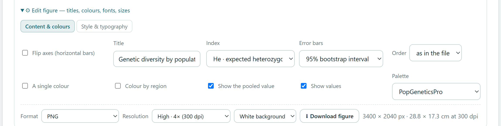
Figure 11.1.Content & colours for the diversity figure of Block 3: title, index, error bars, order, palette and value options. Below it is the export row, which reports the size in pixels and centimetres of the file to be downloaded.
The content tab changes with each figure: a tree offers root, layout and support values; a heat map, its colour scale; a bar chart also offers Flip axes (horizontal bars) to rotate it when the names are long. The style tab is the same for all of them (figure 11.2 and table 11.2).
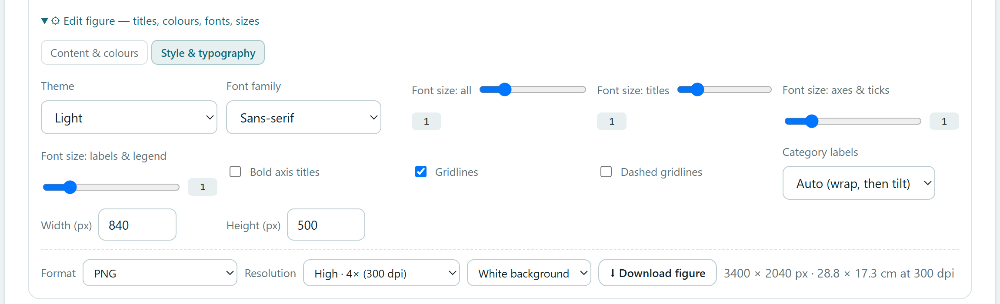
Figure 11.2.Style & typography: theme, font family, four font-size controls, gridlines, orientation of the category labels and figure size.
Table 11.2.Style & typography controls.
Control
Options
Note
Theme
Light, Paper, Dark, Minimal and Journal (black axes, no grid).
Journal for papers; Dark for presentations with a dark background.
Font family
Sans-serif, System interface font, Serif, Monospace.
These are generic families: each computer uses whichever typeface of that kind it has installed.
Font size: all · titles · axes & ticks · labels & legend
Multipliers from 0.6 to 2.6 (all) and from 0.6 to 3 (each group).
If the text grows, the canvas grows with it so that nothing is cut off.
Bold axis titles · Gridlines · Dashed gridlines
Checkboxes.
—
Category labels
Auto (wrap, then tilt), Horizontal (wrap), Tilted 45° or Vertical.
Only in category charts.
Width (px) · Height (px)
400 to 2400 and 300 to 2000.
Sets the size of the figure and, with it, the size of the text when printed (section 11.2).
iNote · the style is remembered
The theme, typeface, font sizes, grid and label orientation are shared preferences: when you change them in one figure, the app saves them in this browser and applies them to the figures it draws afterwards, even in another session. The title, colours and size belong to each figure. This way all the figures in a paper share the same look.
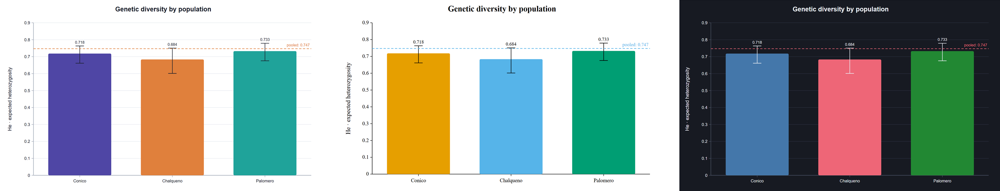
Figure 11.3. The diversity figure in three styles. Left: Light theme and the app’s palette. Centre: Journal theme, Okabe and Ito (2008) palette, serif typeface and text 1.25 times larger. Right: Dark theme with the Tol (2021) palette.
Viridis, Magma, Inferno, Plasma and Cividis (colour-blind safe); diverging Red–Yellow–Blue, Red–Blue, Spectral and Blue–White–Red; sequential Greens, Yellow–Green, Browns and Heat.
✓Decision rule · preparing a figure
If…
then…
The figure is going into a paper
Journal or Minimal theme, with the same typeface and sizes in every figure.
You distinguish groups by colour
Okabe and Ito or Tol: they avoid confusing red and green. In heat maps, Viridis or Cividis.
It will be printed in black and white
Greyscale, plus values or shapes that do not depend on colour.
The category names are long
Flip axes, or Category labels at 45°.
The journal reduces the figure to one column
Lower Width and raise Font size: all before exporting (section 11.2).
11.2Exporting for publication
The export row has three menus and a button: Format, Resolution, white or transparent background, and Download figure. On the right, the app reports the dimensions of the file it is about to create: in figure 11.1, 3400 × 2040 px · 28.8 × 17.3 cm at 300 dpi.
Table 11.4. Export formats.
Format
What it stores
When to use it
PNG
Lossless image with the resolution written into the file. White or transparent background.
Almost always; transparent to place it on another background.
TIFF
Uncompressed RGB image with the resolution in the file. Very large files.
Journals that require TIFF.
SVG
The vector drawing: it scales without losing sharpness and every text or colour can be edited.
Retouching in a vector drawing program, or very large figures.
JPG
Lossy compressed image (97% quality) with the resolution in the file.
Only if required; on lines and text, compression leaves halos.
WEBP
Image compressed for the web, without the resolution in the file.
Web pages and online documents.
θPixels, dpi and printed size
The app draws each figure at 75 pixels per inch. Resolution multiplies the pixels: 2× is 150 dpi, 4× (default) 300 dpi, 6× 450, 8× 600 and 12× 900. The printed size at that resolution does not change: an 850 px figure measures 850/75 = 11.3 inches, 28.8 cm, at any resolution. What the resolution increases is sharpness.
Text is drawn in pixels: 11 px for axis tick labels and legends, 13 px for axis titles and 17 px for the title. At natural size, 11 px is 10.6 points. If the journal reduces the figure, the text shrinks in the same proportion: printed size (pt) ≈ 28.3 × size in px × final width (cm) / figure width (px).
Figure 11.4. The diversity figure at its natural size and reduced to an 8.5 cm column. The proportions between the three cases are real; the three text sizes are drawn larger than the scale of the diagram so that they can be read. With Width 400 and Font size: all 1.5 the figure is 410 px wide and its tick labels reach 9.7 pt in the column.
▸Worked example · a figure for one column
The journal publishes figures in an 8.5 cm column at 600 dpi with text of at least 7 pt. The diversity figure is 850 px wide: reduced to 8.5 cm, its 11 px tick labels would end up at 28.3 × 11 × 8.5 / 850 = 3.1 pt. With Width 400 and Font size: all 1.5, the figure is 410 px wide and the tick labels 16.5 px, which come to 28.3 × 16.5 × 8.5 / 410 = 9.7 pt. For 600 dpi at 8.5 cm you need 8.5/2.54 × 600 = 2008 px of width; Publication · 8× (600 dpi) gives 410 × 8 = 3280 px, which is more than enough.
!Important · very large figures
The browser cannot create images of more than 16,000 pixels per side or more than 120 megapixels. If the chosen resolution exceeds these limits (a tree with hundreds of tips at 900 dpi, for example), the app lowers the resolution as much as necessary, keeps the proportions and shows a warning in orange next to the button. For more detail, export as SVG.
✓Decision rule · which format and resolution
If…
then…
The journal requires TIFF or PNG
Check the final width and the resolution it demands; calculate the pixels needed and choose the factor that reaches them.
The figure has thin lines and text
PNG or TIFF at 600 dpi, or SVG; not JPG.
You are going to edit it afterwards
SVG: every text and colour can be changed.
It is for a presentation
PNG at 150 or 300 dpi, with a transparent background if the slide is coloured.
The journal changes the resolution of the file
It does not matter: what preserves quality is the number of pixels.
11.3The automatic report and the ZIP package
Block 10 does not calculate anything new: it takes what is already on screen in the other blocks. Each table and each interpretation goes in exactly as you see it, and each figure as you left it in its editor. If you change a setting or a figure, return to Block 10 and the report is rebuilt with the change.
Figure 11.5.1 · What goes into the report with the maize SSR data: six blocks with results and 27 figures. At the top are the title, the authors and a note; in the middle, the available sections and the optional parts; at the bottom, the format and resolution of the figures in the ZIP and the output buttons.
Table 11.5. Parts of the report.
Part
Content
Header and contents
Title, authors, date, data file, number of individuals, loci and populations, optional note and table of contents with links.
Executive summary
Key figures: data, diversity, inbreeding, differentiation, isolation by distance, clusters, assignment, sequences, root age and spatial structure, depending on what you ran.
Drafted results section
The interpretations from all blocks, without the warning boxes, as a draft of the results.
One section per block
Key figures, interpretation, numbered tables with titles and numbered figures. The caption of each figure adds the settings that affect it: permutations, bootstrap replicates, model or seed.
Methods paragraph
The methods used, with the actual settings and the authors and year of each method.
How to cite the software
The citation of the program, its licence and the BibTeX entry.
Appendix: data as analysed
The data matrix as it was analysed (optional).
!Important · what you see is what goes in
The report copies what each card shows at that moment. If in Block 9 you chose to view one population in 3 · Recent bottlenecks, that is the one that goes into its figure; if a card is hidden because it does not apply to your data, it is left out. The three output buttons rebuild the report before saving it, so a title or a checkbox you change after the preview is always included.
iNote · the methods paragraph is a draft
The paragraph names each method with its authors and year, and the settings it ran with (permutations, bootstrap replicates, models, seeds). It does not include the full reference list: take the references from appendix E, which gathers them with their details and marks those the paragraph may cite. Also check that the paragraph describes what you will actually report; if you removed a section from the report, its methods remain in the paragraph.
Table 11.6. Contents of the ZIP package. Only the files of the analyses you ran are included.
Folder or file
Content
report.html
The report, identical to the one from Report (HTML).
data/
The data as analysed (CSV) and, with sequences, the haplotypes in FASTA.
tables/
Allele frequencies, diversity, Hardy–Weinberg and null alleles, F-statistics by locus, pairwise differentiation, distances, PCoA coordinates, ancestry proportions by K and choice of K, assignment, haplotypes, bottleneck tests, Ne, spatial autocorrelation, selfing, PST and node ages.
trees/
Population and individual trees (Newick) and dated trees (Newick and NEXUS).
dating/
The MCMC chain log of the dating analysis.
figures/svg/ · figures/png/
Each figure in SVG and in the chosen format (PNG, TIFF, JPG or WEBP) at the chosen resolution.
methods.txt · README.txt
The methods paragraph in plain text and the guide to the package.
✓Decision rule · which output to use
If…
then…
You are writing the paper or thesis
Copy the methods paragraph and adapt it; rebuild the tables from the CSV files; export the figures following the rule in section 11.2.
You are sharing the analysis with co-authors
The HTML report: a single file that opens in any browser, with vector figures.
You are preparing the supplementary material
The ZIP: data, tables, trees and figures.
You want a fixed copy
Print / save as PDF and the ZIP, with the seeds recorded.
11.4Step by step: the maize report
With the maize microsatellite example and five blocks run with their default settings, the report has 6 sections, 20 tables and 27 figures, weighs 346 KB and takes up 30 letter-size pages when printed.
▸Step by step
In Block 2, load Maize populations · SSR and press Build the dataset and run the checks →. Open Blocks 3, 4, 5, 6 and 9: each one runs when you open it.
In Block 3, open the editor of Diversity of every population and try out themes, palettes and sizes (figures 11.1 to 11.3). Settle on the style you will use in all of them.
Open Block 10, type the title and the authors and review the selected sections (figure 11.5).
Press Build and preview the report and look through the preview (figures 11.6 to 11.8).
Save the result with Report (HTML), Print / save as PDF or Full package (ZIP), and copy the methods paragraph with Copy the methods paragraph.
θWhat to check before handing in the report
The summary repeats the interpretations. The draft results section brings together the texts that later appear in each section; if the report is just for you, untick Drafted results section and it becomes shorter.
Every interpretation is a draft. The sentences are generated from general rules; check that they apply to your species and your sampling design.
The full maize ZIP has 72 files and 7.6 MB with PNG figures at 300 dpi: the report, the data, 12 tables, 2 trees, 27 figures in SVG and 27 in PNG, the methods and the guide. In TIFF it is several times larger.
When printing to PDF, enable background graphics in the print dialog to keep the colour of the key figures. Figures are not split across pages and short tables stay with their titles.
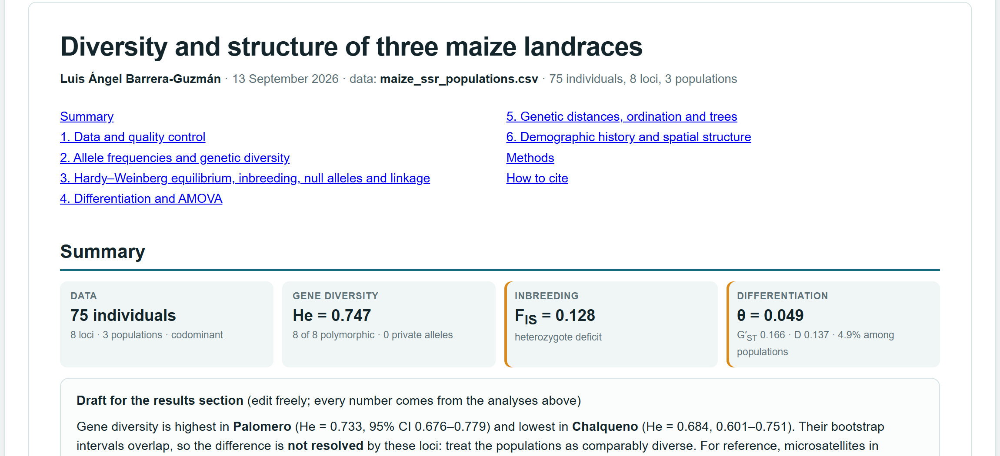
Figure 11.6. Beginning of the report: title, authors, date and data; the table of contents with links; the key figures, with FIS and G′ST written with subscripts; and the draft results section, which brings together the interpretations from the blocks.
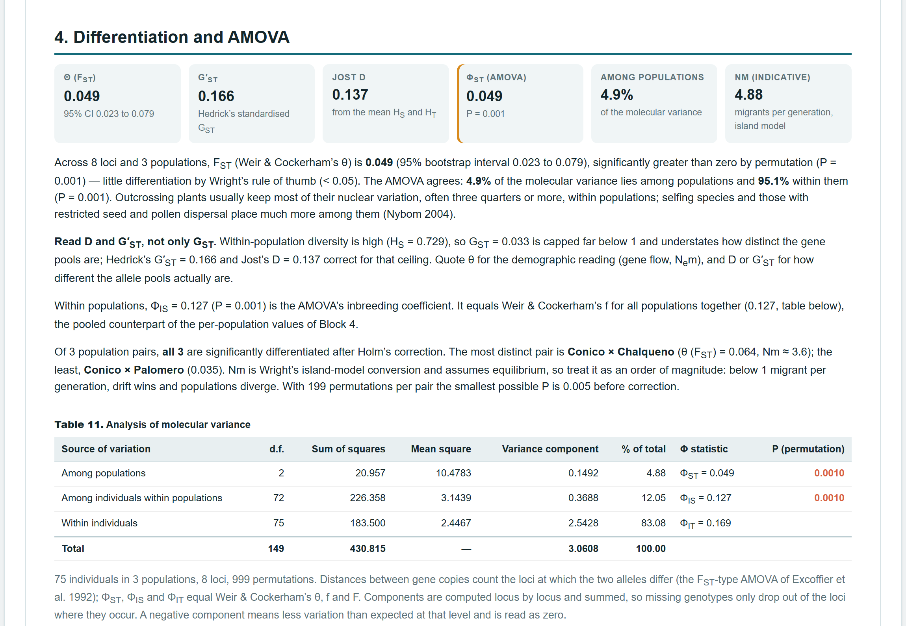
Figure 11.7. The Block 5 section: key figures, interpretation and the AMOVA table with its note. Tables and figures are numbered automatically throughout the report; this is table 11.
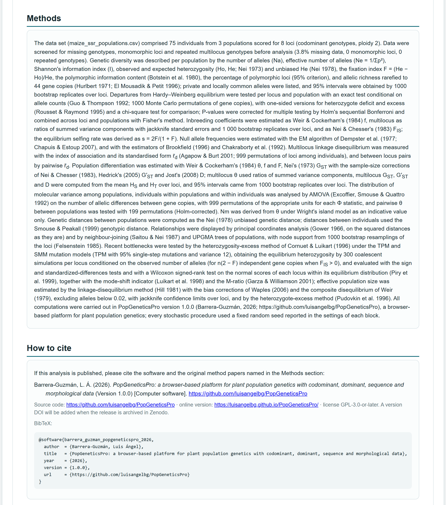
Figure 11.8. The methods paragraph, with the settings that were used (1000 permutations per exact test, Holm correction, 999 AMOVA permutations, 300 simulations per locus…), and the section for citing the program with its BibTeX entry.
iNote · verification of the outputs
For this manual, the ZIP package was read with an independent reader of the format: its 68 test files had correct headers and directory and a CRC-32 identical to the one recalculated bit by bit, and its 27 PNG files opened without errors. The TIFF of the AMOVA figure had its tags in order, 150 dpi on both axes and the same pixels as the equivalent PNG, without a single difference. The PNG carried 5906 dots per metre (150 dpi). The editor redrew the 27 maize figures with five combinations of theme, typeface, font sizes from 0.6 to 2.2, flipped axes and widths from 520 to 1600 px: 135 figures without errors and without any text outside the canvas.
iNote · corrections made to the app while preparing this chapter
The transparent PNG background came out white, because the figure paints its own background; it now stays transparent. The JPG did not store the resolution, and programs read it at 72 or 96 dpi; it now carries it. Block 10 downloads used the previous preview even if the title or the sections had been changed; the report is now rebuilt for every output. The ZIP did not include the results of Block 9 or of the dating analysis; it now contains their tables, trees and the MCMC log. The printed report numbered the table of contents twice, cut off the BibTeX entry, split the key-figure boxes and separated titles from their tables; and symbols such as FST appeared with an underscore in the titles of tables, figures and key figures.
This chapter concludes the tour of the blocks. The appendices gather the file formats, the decision rules from the whole manual, a glossary, troubleshooting, the references and the third-party components.
A–F
Appendices · reference material
Appendices
The appendices are not meant to be read from start to finish but to be consulted. Here you will find the exact rules by which the app reads and writes each file, the manual’s 43 decision rules gathered in one place, a glossary of terms, abbreviations and symbols, solutions to the most common problems, the full references for the methods, and the third-party components with their licences.
AFile formats
BSummary of decision rules
CGlossary
DTroubleshooting
EReferences
FThird-party components
AFile formats
Chapter 3 explains how to lay out your data (tables 3.1 and 3.2). This appendix collects the exact rules: how the app recognises each file, which column names it understands, what counts as missing and what each downloaded file contains.
A.1 How the app recognises a file
Table A.1. File types loaded in Block 2 and how the app tells them apart.
File
How it is recognised
What you should know
Spreadsheet .xlsx .xls .xlsm .xlsb .ods
By its extension.
The first sheet is read; if there are several, Sheet appears so you can choose another. Numbers are stored as numbers, so a decimal comma causes no problems.
Delimited text .csv .txt .tsv
Anything that is not one of the other types.
Separator: whichever of comma, semicolon and tab is most frequent in the first 20 lines (the comma if they tie). Spaces do not separate columns. UTF-8 encoding, with or without a byte-order mark. Double quotes are accepted.
FASTA .fasta .fas .fa
The text begins with >, whatever the extension.
Sequences on one or several lines per sample. Alignment is not required, but different lengths are flagged.
VCF
A ##fileformat=VCF line at the top.
Diploid SNP genotypes; see table A.7.
Project file .arp
A [Profile] section with NbSamples, SampleData or GenotypicData.
Genotypic or haplotypic data by sample.
Population file .gen
A line that says only POP, and at least one comma in the text.
Diploids only.
Genotype file .str
Only by the extension.str or .stru.
The same file saved as .txt is read as a table: change its extension.
A.2 Tables: one row per individual
Table A.2. How each type of data is written in a table and when the app recognises it on its own. If it gets it wrong, correct Marker type and How genotypes are written (section 3.4).
Data
How it is written
When it is recognised automatically
Codominant, one allele per column
Two columns per locus (three or four for polyploids). The name goes in the first; the second repeats the name, is left empty or ends in _1/_2, a/b or A/B. Sizes in bp or codes.
When the name pairs cover at least 80% of the data columns.
Codominant, genotype in one cell
One column per locus: 182/186, 182|186, 182:186, 182;186, 182,186 or with a space. Also 182186 (2 or 3 digits per allele), 94-98 and AG.
When more than 60% of the cells look like x/y, x|y, x:y, NN-NN or two letters. The other forms are read correctly, but you have to choose Whole genotype in one cell.
Dominant (bands)
1 present and 0 absent; also p/a, present/absent, +/−, yes/no. −1 is always missing.
When more than 90% of the data columns contain only 0 and 1. A column with −1 no longer looks binary: use empty cells or choose the type by hand.
Haploid
One code per column (chloroplast haplotype, size of a cpSSR).
When more than 60% of the data columns contain text. With numeric codes, choose the type by hand.
Sequences in cells
One column per gene region, with the complete sequence (20 letters or more). IUPAC letters, − for gaps; U is converted to T and a full stop to a gap.
When more than 60% of the cells are sequences. The regions are concatenated in column order.
Morphological
One column per character. Numbers with a decimal point or comma (13.5 or 13,5); class characters may be written as text.
When more than half of the columns are continuous measurements (more than 12 distinct values). A file with 12 rows or fewer must be typed by hand.
iMissing values
The following are always missing: an empty cell, -9, -99, -999, NA, N/A, NaN, ?, ., .., null, missing and x, in upper or lower case. So is the value of Code used for missing data: 0 by default for codominant data. With haploid data and characters, 0 is a value. A genotype with only one of its alleles becomes missing and is flagged.
iTypes of morphological character
Each column is classified automatically: binary (only 0 and 1), quantitative (mostly numbers, more than 12 distinct values), discrete (mostly numbers, 12 values or fewer) or nominal (mostly text). In a numeric column, text that is not a number becomes missing and is flagged.
A.3 Label and coordinate columns
Table A.3. Column names that the app assigns to each role on its own. They can be changed in the column roles card (section 3.4).
Role
Names it recognises
ID
ID, Ind, Individual, Unit, Sample, Plant, Tree, Accession, Genotype, Code, OTU, Taxon, Name, Clave, Individuo, Muestra, Planta, Unidad, or the name of the chosen unit (Landrace, Accession…).
What counts is the whole name, in the plural or with a unit or note: Populations, Latitude (°), Lat_N. A name that merely begins with the word, such as Population_origin, counts as population or region if the column holds text; that is why Spanish trait names such as Longitud_mazorca (ear length), Area_foliar (leaf area) or Estado_fenologico (phenological stage) remain characters. Without an ID column, the app numbers the rows Ind1, Ind2…; without a population column, each row is its own unit.
Table A.4. How coordinates are read.
If the coordinates are…
the app…
Units of the results
Decimal degrees (south and west negative)
Computes the great-circle distance (Earth radius 6,371 km). A value outside ±90° or ±180° becomes missing and is flagged.
Kilometres; in the spatial structure analysis of Block 9, metres if all pairs are less than 5 km apart.
Projected (UTM in metres)
Recognises them when most values do not fit in degrees, and uses the Euclidean distance.
Map units (metres with UTM).
Per population (all plants share the same ones)
Valid for isolation by distance between populations, but not for fine-scale spatial structure, which requires one coordinate per plant.
—
!Important · details that cause confusion when loading a table
Leading zeros. In a CSV, an ID 001 is read as the number 1 and no longer matches the 001 in a FASTA file or in the sample sheet. Use IDs with letters (P001) or an .xlsx with those cells formatted as text.
Decimal comma in a comma-separated CSV. An unquoted 19,43 splits the row into two columns. Save the CSV with semicolons or use a decimal point.
Population names. They are compared exactly: Tlaxco and tlaxco are two different populations.
Group means region in a table, but population in the sample sheet (table A.8).
A.4 The template row
The templates from the designer (section 3.3) carry in row 1 the cell #PopGeneticsPro template followed by key=value pairs, one per cell. Row 2 holds the column names and the data start in row 3. With this row the app guesses nothing: it reads the declared layout and compares it with what it found.
Table A.5. Keys of the template row. Values are case-sensitive; keys are not.
Table A.6. What goes in each cell of the layout with parameter rows (figure 3.7). The app recognises it when the numbers in row 1 are consistent.
Cell
Content
A1 · B1 · C1
Number of loci, of individuals and of populations.
D1 onwards
Plants in each population (as many cells as populations); they must add up to B1.
Next cell (optional)
Number of regions and, to its right, the plants in each region; these also add up to B1.
Row 2
Title in A2; population names below their sizes, and region names below theirs.
Row 3
Headers: individual, population and the loci. With codominant data, two columns per locus with the name only in the first.
Row 4 onwards
Data, with the populations in consecutive blocks. Lat and Long may follow after an empty column.
The data columns run from column C to the first empty column; divided by A1 they give the columns per locus: two means codominant; one means dominant if more than 90% are 0/1, and haploid otherwise. With dominant data, the default missing code is −1. This layout exists only for diploid codominant, dominant and haploid data with populations.
Example. 3 loci, 5 individuals in 2 populations (3 and 2 plants). For one region, write 3,5,2,3,2,1,5 in row 1 and its name in G2.
3,5,2,3,2
Maize SSR subset,,,Conico,Chalqueno
Sample,Pop,phi024,,phi053,,umc1147,
Con01,Conico,122,122,0,0,0,0
Con02,Conico,126,118,160,154,96,96
Con03,Conico,124,118,152,156,102,102
Cha01,Chalqueno,126,126,164,164,96,96
Cha02,Chalqueno,126,120,160,164,96,96
A.6 Files with their own format
Table A.7. What the app reads from each special format. None of them carries regions or coordinates, and some lack populations too: these are supplied with the sample sheet (table A.8).
Format
Structure it reads
Missing data and limits
FASTA
Header >ID | Population | Region (fields may also be separated by two or more spaces). >ID_pop is not split. Identical sequences form one haplotype.
− gap; N and ? unknown. Block 8 discards sites with a gap or an ambiguous base (section 9.1); dating uses them as partial states. Repeated IDs are not flagged.
VCF
Tab-separated columns; samples from column 10 onwards. Locus: the ID or CHROM_POS. The GT field is read: 0 is REF and 1 the first ALT; / and | are equivalent.
./. missing. An allele 2, 3… or a partial call (0/.) makes the genotype missing. QUAL, FILTER and INFO are not used: filter beforehand. No populations.
.str
Optional line with the marker names; column 1 ID, column 2 population; then one allele per marker. Two consecutive rows per individual = diploid; one row = haploid.
Only −9 is missing (0 is an allele). IDs without spaces. A row with two columns per locus is not accepted.
.gen
Line 1, title; locus names up to the first POP; each individual: name , codes. Codes of 4 digits (2 per allele) or 6 (3 per allele).
0000 or 000000 missing. Populations are named Pop1, Pop2… (rename them with the sample sheet). Diploids only.
.arp
GenotypicData=1 diploid and =0 haploid (without the key, diploid). Samples in SampleName="…" and SampleData={ … }; in genotypic data, the second allele is on the next line.
? missing. The frequency column is ignored: each line is one individual. Sequences enter as codes, not as an alignment.
Example. VCF with two sites; in the file the columns are separated by a tab (here they are aligned with spaces for readability). Con02 at the second site (0/2) becomes missing because it uses the second alternative allele.
##fileformat=VCFv4.2
#CHROM POS ID REF ALT QUAL FILTER INFO FORMAT Con01 Con02 Con03
1 10234 S1_10234 A G . PASS . GT:DP 0/1:12 1|1:8 ./.:0
1 55871 . C T,A . PASS . GT 0/0 0/2 1/1
A.7 Sample sheet
Table A.8. Columns of the sample sheet (Choose a sample sheet), which supplements a FASTA, a VCF or a .str, .gen or .arp file. The first sheet of an .xlsx, .xls or .ods workbook is read, or a CSV.
Only cells with a value replace what the file contained. Coordinates accept a decimal comma.
Region
Region, Zone, State, Estado, Area, Province, Country, País.
Latitude · Longitude
Lat, Latitude, Latitud, Y · Lon, Long, Longitude, Longitud, X.
Download an empty sample sheet with these IDs writes <file>_samples.csv with the columns ID, Population, Region, Latitude, Longitude and the IDs already filled in.
A.8 Files produced by the app
Table A.9. Format of each downloadable file. Figures, the report and the ZIP package are described in sections 11.2 and 11.3.
File
Content and format
Results tables (.csv)
Comma-separated, with a decimal point, in UTF-8 with a byte-order mark and Windows line endings. Values that do not exist are left empty. The name is that of the data file plus a suffix: _diversity_summary, _hwe_fis_null, _pairwise_differentiation, _pcoa_scores, _assignment, _haplotype_table, _demography…
Data sheet
Save as: .xlsx or .ods (sheet Data), .csv, _semicolon.csv or .tsv, with the values exactly as they were entered.
Templates
.xlsx with the sheets Data, Instructions and Design; .csv with the template row; _parameter_rows.csv; .fasta (>ID | Population | Region, 60 bases per line); _samples.csv; _instructions.txt. Export in another layout writes the loaded data in these same layouts.
Block 6 trees (.nwk)
Newick with branch lengths to 6 decimal places and bootstrap support as a whole percentage after each closing parenthesis. Spaces and punctuation in names are replaced by _.
Dated trees (.nwk, .nex)
_ml_tree.nwk: lengths in substitutions per site. _dated_lsd and _dated_mcmc: chronogram with lengths in millions of years; names containing punctuation go in single quotes. The NEXUS file adds a TRANSLATE table and annotates each node as [&height=…,height_95%_HPD={a,b},posterior=…,calibration="…"]. With MCMC, height is the median and the interval is the 95% HPD; with LSD, the estimate and the 2.5 and 97.5 percentiles of the resampling.
Node ages (.csv)
One row per internal node: Clade (tips separated by |), Tips, Age (Ma) or Median age (Ma), Lower 95%, Upper 95%, ESS (MCMC only), Calibration and Epoch (epoch or period of the geological time scale).
MCMC log (_mcmc.log)
Tab-separated text with an initial comment line. Columns: state, posterior, log_likelihood, prior, clock_rate; rate_sigma with a relaxed clock, kappa with K80 or HKY, alpha with Γ; birth_rate (Yule) or theta (coalescent); root_age and one height(clade) column per internal node. Only samples after the burn-in, about 2,000 rows.
BSummary of decision rules
The manual’s 43 decision rules, in the order of the app. Each box gives the section where the theory behind it is explained; read them as guides to interpretation, not as laws: the biological context of your species always comes first.
Look for your question in the index first. The rule from section 2.2 on how much differentiation is a lot is repeated, in fuller form, in section 6.4, and appears here only once.
1Introduction to PopGeneticsPro
1.8How many plants per population?
1.9Reading a P value
B1Home, theory and simulator
2.3Does selection or drift win?
2.4More loci or more individuals?
B2Data and quality control
3.3The design checks
3.4How the app works out the marker type
3.5Missing data
3.5Monomorphic loci and extreme bands
3.5Repeated genotypes
3.7Reading the coefficient of variation of a trait
B3Allele frequencies and diversity
4.3Is diversity high or low?
4.3Do two populations differ in diversity?
4.3Fixation index F
4.3PIC of a marker
4.3Private alleles and locally common alleles
4.6Which estimator to use with bands?
4.6Phenotypic H′
B4Hardy–Weinberg and linkage disequilibrium
5.1Which Hardy–Weinberg test to read
5.2Inbreeding, Wahlund or null alleles?
5.3Reading r̄d
5.4Which correction to use
B5Differentiation and AMOVA
6.4How much differentiation is a lot?
6.4Which estimator should you report?
6.4Reading an AMOVA with regions
6.4Population pairs and migrants
B6Distances, ordination and trees
7.2Reading a PCoA
7.3Support and fit of the tree
7.5Isolation by distance
B7Bayesian clustering and assignment
8.2Choosing K
8.3Reading a DAPC
8.4Assignment and migrants
B8DNA sequences and molecular dating
9.2Neutrality and mismatch
9.3Phylogeographic structure
9.4Reading a haplotype network
9.5Calibrating and reading a dated tree
B9Demography and spatial structure
10.1Was there a bottleneck?
10.2Reading an Ne
10.3Spatial genetic structure
10.4How much selfing?
10.5PST versus FST
B10Figures and report
11.1Preparing a figure
11.2Which format and resolution
11.3Which output to use
1Introduction to PopGeneticsPro
✓Decision rule · how many plants per population?Section 1.8
Size per population
Interpretation
What to do
25 to 30 or more
Adequate
Sufficient to estimate allele frequencies reliably with microsatellites (Hale et al., 2012). All analyses are dependable.
10 to 24
Acceptable, with caution
Compare diversity using rarefied allelic richness rather than the raw number of alleles, and report confidence intervals.
5 to 9
Limited
Rare alleles are lost and FIS values are unstable. Use such samples for description, not for precise comparisons between populations.
Fewer than 5
Insufficient
The app flags this in quality control. Consider pooling neighbouring populations or restricting the analysis to distances and ordination.
With dominant markers, more plants and more polymorphic bands are advisable, because each band carries less information than a microsatellite.
✓Decision rule · reading a P valueSection 1.9
P value
Evidence against the null hypothesis
How to word it
P < 0.001
Very strong
“The departure is highly significant”.
0.001 ≤ P < 0.01
Strong
“The departure is significant”.
0.01 ≤ P < 0.05
Moderate
“There is evidence of a departure”; confirm it with other loci or populations.
P ≥ 0.05
Insufficient
“No departure was detected”. Do not claim that the population is in equilibrium: the test may have lacked statistical power.
Always report the exact P value and the effect size (for example, FIS with its interval), not just whether the result is significant.
B1Home, theory and simulator
✓Decision rule · does selection or drift win?Section 2.3
4 Ne |s|
Which dominates
What to expect
Less than 1
Drift
The allele behaves almost as if it were neutral; it can be lost even though it is advantageous. Example: Ne = 10 and s = 0.01 give 0.4.
1 to 10
Both
Selection steers the change, but chance produces variable outcomes among populations.
More than 10
Selection
The change is almost deterministic. Example: Ne = 100 and s = 0.1 give 40.
Practical consequence: in small populations, even adaptive variants can be lost by chance. Maintaining large effective sizes also maintains the capacity to adapt.
✓Decision rule · more loci or more individuals?Section 2.4
More loci. Each locus is an independent replicate of the history of the populations, and the variance of FST decreases faster when you add loci than when you add individuals.
Finding rare or private alleles
More individuals. An allele at a frequency of 2% has only a 64% probability of appearing in 25 diploid plants.
Detecting kinship or spatial structure
Both, with mapped individuals and highly polymorphic markers.
B2Data and quality control
✓Decision rule · the design checksSection 3.3
If the design has…
the designer warns that…
Fewer than 5 plants in a population
this is not enough for any within-population test; 20 to 30 are needed to estimate frequencies well (Hale et al., 2012).
20 or more plants per population
this is enough for allele frequencies, He, FIS and Hardy–Weinberg tests.
Fewer than 5 polymorphic loci
multilocus analyses (Bayesian clustering, assignment, r̄d) are not reliable; clustering is usually run with 10 or more.
Few populations per region
the number of possible permutations limits the smallest P value of ΦCT in the AMOVA (Fitzpatrick, 2009). With 2 + 2 populations there are only 3 distinct arrangements and P never falls below 0.33.
10 or more plants per population (codominant)
Ne from linkage disequilibrium and the bottleneck tests of Block 9 become available; their precision improves greatly with 30 or more plants and 10 or more polymorphic loci.
✓Decision rule · how the app works out the marker typeSection 3.4
#
If it finds…
then the data are…
1
row 1 of a PopGeneticsPro template
the type declared in it
2
a parameter row with two columns per locus
codominant (with one column per locus: dominant or haploid)
3
more than 90% of the data columns containing only 0 and 1
dominant
4
columns with complete DNA sequences
sequences
5
columns with genotypes in one cell (182/186, A/G)
codominant, genotype in one cell
6
column names that come in pairs
codominant, one allele per column
7
most columns with continuous measurements
morphological
8
most columns with a text code
haploid
9
none of the above
codominant (check it)
Only the data columns are examined: a latitude or ID column does not turn a matrix of 0s and 1s into measurements. The orientation is worked out first: a matrix of 0s and 1s whose first column repeats names, or with many more rows than columns, is read with the bands in rows.
✓Decision rule · missing dataSection 3.5
Missing data
Reading
What to do
Less than 5%
Very good
Carry on without changes.
5 to 10%
Acceptable
Carry on, but check whether the missing data are concentrated in one locus or one population.
More than 10%
Worrying
Remove the loci or individuals with the most missing data rather than letting the gaps drive the result.
An individual with more than 25%
Weak individual
The app names it. Genotype it again, or exclude it if its absence does not leave the population too small.
A locus with far more missing data than the rest
Problematic locus
It may have null alleles or amplify poorly. Check it in Block 4 as well.
✓Decision rule · monomorphic loci and extreme bandsSection 3.5
If a locus or band…
then…
Is monomorphic (a single allele, or a band present in all or in none)
It contributes nothing to differentiation or distances. The app keeps it and warns you; it counts towards the percentage of polymorphic loci (%P).
Is a dominant band with a frequency below 5% or above 95%
Its frequency is poorly estimated from a gel. It is common practice to remove such bands before analysis; the app counts them in a warning.
Has an allele found in a single plant only
It may be real (a rare allele) or a scoring error. Check the electropherogram before reporting it as a private allele.
✓Decision rule · repeated genotypesSection 3.5
If you find…
the most likely explanation is…
what to do
Identical pairs in a clonal species
ramets of the same genet
keep one per genotype
Identical pairs in a species without vegetative reproduction
the same plant sampled or entered twice, or too few loci
check the labels and the field sheet
Pairs that match at 95% or more without being identical
close relatives, or the same plant with a scoring error
check the loci that differ
Many identical pairs with few loci
a lack of power to tell individuals apart
add loci before concluding that there is clonality
With sequences, sharing a haplotype is normal, and with traits there is no multilocus genotype: in both cases this check does not apply.
✓Decision rule · reading the coefficient of variation of a traitSection 3.7
CV
Variation
In the example
Less than 10%
Low
Days to flowering, 9.8%: a very stable trait across plants.
10 to 30%
Moderate
Plant height (17.3%), ear length (25.9%) and ear diameter (25.8%).
More than 30%
High
Cob weight (41.6%) and 100-kernel weight (39.3%): good candidates for differentiating populations or for selection.
An indicative guide: the expected CV depends on the trait and the environment. A very high CV may also reveal data-entry errors, such as a weight in grams entered as kilograms; check the minimum and maximum.
B3Allele frequencies and diversity
✓Decision rule · is diversity high or low?Section 4.3
Low values are normal; compare with other species with a similar mating system.
AFLP, ISSR, RAPD
0.15 to 0.40
The theoretical maximum is 0.5, because each band has only two states. Never compare He from dominant markers with He from microsatellites.
Chloroplast haplotypes or sequences
highly variable
Depends on the marker and on history. Report it together with the number of haplotypes and the nucleotide diversity from Block 8.
These are indicative ranges taken from the plant literature: they help you place a number, not judge a dataset. What is really informative is the comparison among your own populations with the same marker.
✓Decision rule · do two populations differ in diversity?Section 4.3
If…
then…
The 95% intervals of He do not overlap
The difference is supported by the loci sampled.
The intervals overlap
The difference is not resolved: treat the populations as equally diverse. The app says so explicitly.
There are fewer than three loci
Loci cannot be resampled and intervals cannot be calculated: the difference is not tested (the case of a single sequence alignment).
Sample sizes differ by more than a factor of two among populations
Do not compare Na or the number of private alleles; use uHe and Ar. The app warns you.
The intervals are obtained by bootstrap over loci: loci are resampled with replacement 1000 times and the 2.5 and 97.5 percentiles of the mean are taken. They reflect how much the result would change with other loci, not with other plants.
✓Fixation index FSection 4.3
F
Interpretation
Greater than 0.1
Clear heterozygote deficit.
−0.05 to 0.1
Close to equilibrium.
Less than −0.05
Heterozygote excess.
F is a description. Whether there is inbreeding, null alleles or a Wahlund effect is decided in Block 4 with FIS and its tests.
✓PIC of a markerSection 4.3
PIC
Interpretation
Greater than 0.5
Highly informative.
0.25 to 0.5
Moderately informative.
Less than 0.25
Slightly informative.
Categories of Botstein et al. (1980). Useful for choosing loci for variety identification or paternity testing.
✓Decision rule · private alleles and locally common allelesSection 4.3
If you find…
the interpretation is…
A private allele with frequency ≥ 5% (frequent)
Evidence of a distinct gene pool: restricted gene flow or an independent history. A priority for conservation.
A rare private allele (rare, < 5%)
It may be real or simply a sampling accident; with more plants it might turn up in other populations.
A locally common allele, ≥ 5% in 25% or fewer of the populations
Strong signal of restricted gene flow.
A locally common allele, ≥ 5% in half or fewer of the populations
Moderate signal. The app reports both thresholds when there are four or more populations.
✓Decision rule · which estimator to use with bands?Section 4.6
If your species…
use…
Is outcrossing and you have 20 or more plants per population
Lynch and Milligan. With large samples it coincides with the square root; with few plants it corrects the square root’s bias.
Is outcrossing but some bands are absent from almost every plant
Bayesian with F = 0: it does not leave frequencies at 0 or 1 when a band is missing from the whole sample.
Is selfing or has known inbreeding
Bayesian with F between 0.8 and 0.95: without this correction the frequency of the recessive allele is underestimated.
Whichever method you choose, report it: He from dominant markers depends on it. Comparisons among populations hardly change, as table 4.6 shows.
✓Decision rule · phenotypic H′Section 4.6
H′
Diversity
Interpretation
0.6 or more
High
The plants cover almost the whole range of the trait. Useful material as a source of variation.
0.4 to 0.6
Medium
Moderate variation, common within a landrace or local variety.
Less than 0.4
Low
Trait uniform in that population: fixed by selection or with a narrow genetic base.
An indicative guide used in studies of local varieties. H′ mixes genetic and environmental variation: to find out whether differences among populations exceed what drift would produce, PST is compared with FST in Block 9.
B4Hardy–Weinberg and linkage disequilibrium
✓Decision rule · which Hardy–Weinberg test to readSection 5.1
If…
then…
You use microsatellites or SNPs with rare alleles
Read the exact test. The app flags unreliable χ² values with †.
You want to know the direction of the departure
Use the one-tailed tests: one-sided: heterozygote deficit or excess (Rousset and Raymond, 1995). They are more powerful than the global test when you already suspect inbreeding.
The exact P is close to α
Raise the permutations to 10,000. With 1000, a P of 0.05 has an error of ±0.007; with 10,000, of ±0.002.
You are comparing with an older paper
Show χ² for reference only and explain that the conclusion rests on the exact test.
A Monte Carlo test never gives P = 0: with B permutations and b tables as unusual as the observed one, P = (b + 1)/(B + 1). The smallest possible value with 1000 permutations is 0.001.
✓Decision rule · inbreeding, Wahlund or null alleles?Section 5.2
Pattern
Likely cause
What to do
Positive FIS at most loci and an interval for f that excludes 0
Inbreeding
Report f with its interval and the selfing rate s for reference. Keep the loci.
One locus with a significant deficit in half or more of the populations and a null frequency above 5%
Null allele
The app flags the locus as suspected null allele. Recompute FST without it in Block 5 and compare.
General deficit and linkage disequilibrium within the population
Wahlund or selfing
Look for subgroups with Block 7. If they appear, the “population” mixes gene pools.
Both patterns at once
Inbreeding plus a null
Estimate f from the unflagged loci and report both results.
Scattered departures, with no repeated locus or population
Chance or scoring errors
This does not justify removing loci. Check the gels for the extreme cases.
The automatic diagnosis in card 2 applies this rule. A significant excess of heterozygotes (f with an interval below 0) suggests clonality, a recent cross between different sources or, in small samples, mere chance.
✓Decision rule · reading r̄dSection 5.3
If…
then…
r̄d ≈ 0 and not significant in every population
The loci behave as independent. The Block 7 methods, which assume this, can be used without reservation.
r̄d significant and below 0.05
Detectable but weak association; it does not bias analyses that assume independence.
r̄d significant and above 0.05 within populations
Selfing, clonality or recent admixture. Read Bayesian clustering and assignments with caution.
Significant only in the pooled sample
A sign of differentiation between populations, not of physical linkage.
One particular pair stands out in several populations
Possible physical linkage between those two loci. Consider using only one of them in analyses that require independence.
The 0.05 threshold is a guide: in outcrossing plants with unlinked markers, r̄d usually stays below 0.01; in clonal or highly selfing species, values of 0.1 to 0.5 are common.
✓Decision rule · which correction to useSection 5.4
If…
use…
You have dozens of tests and every rejection matters (HWE per locus)
Holm, the default option.
You have hundreds or thousands of tests (pairs of loci with dominant markers)
Benjamini–Hochberg: Holm would be so strict that it would detect nothing.
You are interested in the population as a whole, not each locus
Fisher’s method, in addition to the per-locus correction.
No individual test survives but there are many small P values
Examine the pattern (do they recur at one locus or in one population?) before concluding that nothing is going on.
B5Differentiation and AMOVA
✓Decision rule · how much differentiation is a lot?Sections 6.4 and 2.2
FST or θ
Differentiation
Interpretation
Below 0.05
Low
The populations share almost all their frequencies; abundant gene flow or recent separation.
0.05 to 0.15
Moderate
Clear but shallow structure. Common in outcrossing plants with nuclear markers.
0.15 to 0.25
High
Well-differentiated populations; little exchange or a separate history.
Above 0.25
Very high
Common in selfing species, isolated populations and chloroplast markers.
Wright’s (1978) scale. It was designed for FST with markers that have few alleles: with microsatellites, whose HS is high, a θ of 0.05 can conceal quite different populations (figure 6.2), so read it together with G′ST or D.
✓Decision rule · which estimator should you report?Section 6.4
If your question is…
report…
How much structure there is and how it relates to drift and migration
θ (FST) with its interval, and ΦST or ΦPT from AMOVA with its P.
How different the allele pools are, for example for conservation
Jost’s D or G′ST, in addition to θ.
Comparison with another study or another marker
G′ST or D, which do not depend on the HS ceiling, and the same kind of locus average used in the other study.
Comparison with an older study that only gave GST
GST as a reference, noting its ceiling.
The general recommendation is not to report a single estimator: θ plus D or G′ST covers both interpretations (Meirmans and Hedrick, 2011).
✓Decision rule · reading an AMOVA with regionsSection 6.4
If…
then…
ΦCT is significant and the region component is larger than the population component
The grouping into regions is real and captures most of the structure.
ΦCT and ΦSC are significant, with populations weighing more
The regions differ, but within each one the populations differ even more.
ΦSC is significant and ΦCT is not
The populations differ, but they do not group according to the regions you defined. Try a grouping suggested by the data (Block 7).
Few populations (table 6.3)
The test of ΦCT cannot reach significance: read the size of the component.
None is significant
At this scale, the species behaves almost as a single large population.
✓Decision rule · population pairs and migrantsSection 6.4
If…
then…
The corrected P of a pair is below 0.05
The two populations differ in frequencies; treat them as distinct units.
Nm is above 4
Gene flow is sufficient to keep them similar.
Nm is between 1 and 4
Moderate exchange; drift leaves a mark but does not separate them completely.
Nm is below 1
Drift dominates and the populations diverge; conserving each one is a priority.
All corrected P values are equal and small
This is the minimum possible with those permutations (with 199 and 3 pairs, 0.005 × 3 = 0.015). Increase the permutations to tell them apart.
The Nm thresholds are indicative and inherit all the limitations of the island model.
B6Distances, ordination and trees
✓Decision rule · reading a PCoASection 7.2
If…
then…
Axes 1 and 2 add up to more than 50%
The map is a good summary: closeness on the plane reflects the matrix.
They add up to less than 25%
This is usual with individuals and highly variable markers. The map shows trends; two nearby points may differ on other axes. Check axis 3 as well.
The population ellipses overlap a great deal
Low differentiation, consistent with a small FST (chapter 6). A significant AMOVA is not a contradiction.
An individual falls within the cloud of another population
Possible migrant, labelling error or admixture; check it with the assignment in Block 7.
There are many large negative eigenvalues
Turn on the Lingoes correction before reporting percentages.
✓Decision rule · support and fit of the treeSection 7.3
If…
then…
Support of 70% or more
The grouping is robust to the loci sampled; it can be described.
Support of 50 to 70%
Weak grouping; mention it as a trend.
Support below 50%
Do not interpret the branching order. The app hides it by default.
Only three populations
An unrooted three-tip tree has no internal branches to test: it only shows lengths. The app says so.
UPGMA cophenetic correlation greater than 0.85
The tree reproduces the distances well. If it is lower, the tree distorts them; prefer NJ and the PCoA.
With few loci, low support is normal and does not mean the tree is wrong: it means the data are not enough to resolve it. Zero-length branches (identical units) receive no support, because the order in which they are joined is arbitrary.
✓Decision rule · isolation by distanceSection 7.5
If…
then…
Positive slope and significant Mantel test between populations
Isolation by distance: gene flow decreases with distance.
Not significant
Distance does not predict differentiation at this scale: extensive gene flow, structure due to another cause (habitat, altitude, history) or too few populations.
Few populations (6 or fewer)
With n populations there are only n! ways to reorder them; with 4, the smallest possible P is 1/24 ≈ 0.04. Read the slope and the figure, not the P value.
Mantel significant only between individuals
Pairs from the same population are close together and alike, so the correlation mainly reflects the differences between populations. Fine-scale spatial structure is studied in Block 9.
B7Bayesian clustering and assignment
✓Decision rule · choosing KSection 8.2
If…
then…
ΔK, Ln P(D) and Puechmaille agree
That K is well supported. Confirm it in the bar plot.
ΔK gives a smaller K than Ln P(D)
ΔK marks the uppermost level of structure; the K from Ln P(D) may be the subdivision within it. Choose the largest K at which every cluster has individuals with high Q and the replicates agree.
Ln P(D) is highest at K = 1
The ΔK peak is not evidence of clusters on its own, because ΔK never chooses K = 1. Accept K = 2 only if there are individuals with Q ≥ 0.8 in both clusters.
H′ falls below 0.90
Replicates are in different solutions: lengthen the chains, increase the replicates and do not interpret the consensus plot for that K.
A Puechmaille estimator counts a cluster whose mean Q does not reach 0.6 in any population
The count is fragile and the app warns about it: confirm it with the bar plot and with the individuals with Q ≥ 0.8.
✓Decision rule · reading a DAPCSection 8.3
If…
then…
Leave-one-out success clearly exceeds chance
The groups are genetically distinguishable. Report that figure, not the reassignment.
Reassignment far exceeds leave-one-out success
Part of the success is fit to the sample. Try several numbers of components and keep the one beyond which leave-one-out success stops improving (table 8.3).
One group has low success (below 70%)
Its individuals are confused with other groups; see which ones in the scatter plot.
Groups found by k-means
Success is high by construction. Look for a minimum or an elbow in the BIC curve; if it is still falling at the largest K tested, there is no optimum and the groups are merely a convenient partition.
✓Decision rule · assignment and migrantsSection 8.4
If…
then…
Self-assignment is high
The populations are distinguishable. Compare it with chance (1/number of populations) and with the FST of chapter 6: it increases with differentiation and with the number and variability of the loci (Cornuet et al., 1999).
Two populations exchange many individuals in the matrix
They are the least differentiated pair. This is not proof of current gene flow.
Few individuals flagged as migrants
With N individuals and α = 0.01, about N × 0.01 are expected by chance. If the number flagged does not greatly exceed that value, treat them as candidates for review, not as proven migrants.
A misassigned individual with a high P
It is a resident that resembles another population, not a migrant.
Populations with fewer than 5 individuals
They are excluded from the test: their frequencies are not reliable.
The test assumes that all possible source populations are in the data. A migrant from an unsampled population appears as an unusual individual in all of them.
B8DNA sequences and molecular dating
✓Decision rule · neutrality and mismatchSection 9.2
If…
then…
D, Fs and R2 are not significant
Nothing compels you to propose changes in size: the data are compatible with a stable population.
Fs and R2 are significant (with or without a negative D)
Evidence of expansion. Look at the mismatch: if r is also small, read τ as the date of the expansion.
D is negative and significant, but Fs and R2 are not
An excess of rare variants that may come from a selective sweep just as well as from growth.
D is positive and significant
Contraction, balancing selection or, most commonly in plants, a sample that mixes lineages or differentiated populations. Repeat the tests population by population.
The mismatch is ragged (r not significant)
There is no evidence of expansion; τ is not a date.
Selection and demography leave similar signatures at a single locus. Only several independent loci showing the same signal allow it to be attributed to demography.
Phylogeographic structure: related lineages share a region. Look in the haplotype network to see which lineages they are.
NST ≈ GST, both high
Populations differentiated in frequencies, with no geographic ordering of lineages: recent isolation or weakly divergent haplotypes.
Six haplotypes or fewer
Few ways to shuffle them: the P value cannot fall very low. The app warns you; read the difference NST − GST.
Organelle DNA
Compare it with the nuclear FST of chapter 6. DNA dispersed by seed is usually far more structured than nuclear DNA; in most conifers the chloroplast is dispersed by pollen.
✓Decision rule · reading a haplotype networkSection 9.4
If the network shows…
then…
A star: a frequent central haplotype and many rare derived haplotypes one step away
The picture of a recent expansion from that haplotype.
Groups of haplotypes separated by many mutations
Old lineages; if each group occupies a region, phylogeographic structure (compare with NST).
Many loops
Homoplasy (the same change in two lineages), recombination or intermediate haplotypes that were not sampled.
Median vectors (small black nodes)
Inferred haplotypes: extinct or unsampled. They are not observations.
The area of each circle is proportional to the number of sequences, the sectors show the populations and each tick on a line is a mutation.
✓Decision rule · calibrating and reading a dated treeSection 9.5
If…
then…
There are only minimum ages
The dates may drift towards older ages: give a maximum to some calibration, a secondary calibration or a maximum age for the root. The app warns you.
Any ESS is below 200
The chain has not explored the posterior distribution well: lengthen it or rerun it with another seed before reporting.
The interval for σ comes close to zero
The data are compatible with a strict clock.
The posterior of a calibration resembles its prior
The sequences say little about that age. Compare it with the Sample from the prior only option.
Data from a single species
Use a rate and the coalescent model. The ages are coalescence times of the haplotypes, older than the split of the populations that carry them.
B9Demography and spatial structure
✓Decision rule · was there a bottleneck?Section 10.1
If…
then…
Wilcoxon gives P < 0.05 for excess under both TPM and SMM
There is a signal of a recent reduction. Confirm it with another sample or with the history of the population.
Only the IAM gives an excess
With microsatellites this is not enough: the IAM exaggerates the excess.
The excess comes from one or two loci
Check those loci: a null allele or selection affects a single locus, demography affects them all.
There is a significant deficit
The population may have grown or received immigrants carrying rare alleles.
M < 0.68 without an excess
An older or longer reduction is compatible; the excess has already faded.
There are fewer than 10 polymorphic loci or fewer than 20 plants
The test has low power: “no signal” does not prove stability (Luikart and Cornuet, 1998).
The signal is transient: once the population reaches a new mutation–drift equilibrium, the excess disappears even if the population remains small.
✓Decision rule · reading an NeSection 10.2
If…
then…
The estimate or its upper limit is ∞
The r² cannot be distinguished from sampling noise: Ne is large relative to the sample, not unknown. Report the lower limit.
The limits fall below 50 or below 100
The population is losing diversity rapidly; this is a conservation warning.
The population self-fertilises or has a high FIS
Inbreeding correlated across loci inflates r² and lowers Ne; interpret it as a minimum.
The sample mixes subpopulations or immigrants
Admixture also creates disequilibrium: check the structure (Block 7) before reporting.
There are fewer than 25 plants or few loci
The interval will be very wide; more loci help as much as more plants.
The method assumes random mating, unlinked loci and a closed population, and estimates Ne per generation.
The first class lies above the band and bF is significant
Neighbours are relatives. Report Sp and the distance up to which the signal persists.
Sp is around 0.01
Weak structure, typical of outcrossing species (mean Sp 0.013; Vekemans and Hardy, 2004).
Sp is around 0.04 or more
Strong structure, as in species with mixed mating (0.037) or selfing species, or with seed that falls nearby.
No class falls outside the band
Pollen and seed move far at this scale, or the sample lacks nearby plants.
You sampled few plants or only distant plants
About 100 plants or more are recommended, with many pairs of close neighbours.
There are clones
Ramets of the same genet inflate F1: keep one ramet per genet.
✓Decision rule · how much selfing?Section 10.4
If…
then…
FIS is positive at almost all loci
The deficit is genome-wide: selfing or matings between relatives. s is a reasonable estimate.
The deficit comes from a few loci
Suspect null alleles (Block 4) before selfing.
There is spatial structure
Matings between related neighbours also produce FIS > 0; s overestimates selfing.
You mixed plants from different groups
The Wahlund effect creates a deficit without inbreeding.
You need the actual rate for one season
Genotype mothers and their seeds and use a mixed-mating model (Ritland, 2002).
✓Decision rule · PST versus FSTSection 10.5
If…
then…
The whole PST interval lies above FST
The trait has diverged more than drift would cause: divergent selection, if c/h² is realistic.
The whole interval lies below FST
Stabilising selection: the populations are more alike than expected.
The interval crosses FST
There is no evidence against drift.
The conclusion changes when c/h² is lowered to 0.5
It depends on the assumption: say so, or measure the trait in a common garden.
You have fewer than 10 populations
Expect wide intervals; the comparison has low power.
FST must come from neutral markers in the same populations (θ from Block 5).
B10Figures and report
✓Decision rule · preparing a figureSection 11.1
If…
then…
The figure is going into a paper
Journal or Minimal theme, with the same typeface and sizes in every figure.
You distinguish groups by colour
Okabe and Ito or Tol: they avoid confusing red and green. In heat maps, Viridis or Cividis.
It will be printed in black and white
Greyscale, plus values or shapes that do not depend on colour.
The category names are long
Flip axes, or Category labels at 45°.
The journal reduces the figure to one column
Lower Width and raise Font size: all before exporting (section 11.2).
✓Decision rule · which format and resolutionSection 11.2
If…
then…
The journal requires TIFF or PNG
Check the final width and the resolution it demands; calculate the pixels needed and choose the factor that reaches them.
The figure has thin lines and text
PNG or TIFF at 600 dpi, or SVG; not JPG.
You are going to edit it afterwards
SVG: every text and colour can be changed.
It is for a presentation
PNG at 150 or 300 dpi, with a transparent background if the slide is coloured.
The journal changes the resolution of the file
It does not matter: what preserves quality is the number of pixels.
✓Decision rule · which output to useSection 11.3
If…
then…
You are writing the paper or thesis
Copy the methods paragraph and adapt it; rebuild the tables from the CSV files; export the figures following the rule in section 11.2.
You are sharing the analysis with co-authors
The HTML report: a single file that opens in any browser, with vector figures.
You are preparing the supplementary material
The ZIP: data, tables, trees and figures.
You want a fixed copy
Print / save as PDF and the ZIP, with the seeds recorded.
CGlossary
The terms, abbreviations and symbols used in the manual, with a brief definition and the section where each is explained at length. Below many terms is their Spanish name, as it appears in the Spanish edition of this manual and in the Spanish-language literature.
C.1 Abbreviations
Table C.1. Abbreviations used in the manual and in the app. File formats are described in appendix A.
Abbreviation
Meaning
Abbreviation
Meaning
AFLP
Amplified fragment length polymorphism
IUPAC
Ambiguous base codes of the International Union of Pure and Applied Chemistry (R = A or G, Y = C or T, N = any)
AICc
Akaike information criterion corrected for small samples
JC
Jukes and Cantor substitution model
AMOVA
Analysis of molecular variance
K80, K2P
Kimura two-parameter substitution model
BIC
Bayesian information criterion
LD
Linkage disequilibrium
bp
Base pairs
LSD
Least-squares dating of a tree
CI
Confidence interval
Ma
Millions of years
cpDNA
Chloroplast DNA
MCMC
Markov chain Monte Carlo
CV
Coefficient of variation
mtDNA
Mitochondrial DNA
DAPC
Discriminant analysis of principal components
NJ
Neighbour-joining, a tree-building method
d.f.
Degrees of freedom
OTU
Operational taxonomic unit: each tip of a tree
dpi
Dots per inch
PCA
Principal component analysis
EM
Expectation–maximisation algorithm
PCoA
Principal coordinates analysis
ESS
Effective sample size of an MCMC chain
PIC
Polymorphism information content
FDR
False discovery rate
RAPD
Random amplified polymorphic DNA
GTR
General time-reversible substitution model
SD · SE
Standard deviation · standard error
HKY
Hasegawa, Kishino and Yano substitution model
SMM
Stepwise mutation model
HPD
Highest posterior density interval
SNP
Single nucleotide polymorphism
HWE
Hardy–Weinberg equilibrium
SRAP
Sequence-related amplified polymorphism
IAM
Infinite alleles model
SSR
Simple sequence repeats: microsatellites
ISSR
Inter-simple sequence repeats
TPM
Two-phase mutation model
ITS
Internal transcribed spacers of ribosomal DNA
UPGMA
Unweighted pair group method with arithmetic mean
C.2 Terms
Table C.2. Glossary in alphabetical order.
Term
Definition
Section
A
Allele alelo
Each variant that exists at a locus. A diploid plant carries two alleles per locus.
1.3
Allele frequency
The proportion of the gene copies in a population that belong to a given allele. It is the basic unit of population genetics.
1.3
Allelic richness (Ar)
The number of alleles expected with the same number of gene copies in every population (rarefaction). An exact calculation, not a random draw.
4.1
AMOVA análisis de varianza molecular
Partitions the squared genetic distances among the levels of the sampling design (regions, populations, individuals). Each level yields a variance component and a Φ.
6.2
Assignment test asignación
Computes the probability of each individual’s genotype in each population, assuming Hardy–Weinberg, and assigns it to the most probable one.
8.4
B
Bootstrap
Resampling with replacement (of loci, or of sites with sequences) to obtain intervals or support values. It shows how much the result would change with other loci, not with other plants.
4.3
Bootstrap support
Percentage of replicates in which a grouping of the tree reappears. It measures how much the grouping depends on a few loci, not the probability that it is true.
7.3
Bottleneck cuello de botella
A sharp, recent reduction in the size of a population. Rare alleles are lost first, leaving a transient heterozygosity excess.
10.1
Bulk sample muestra compuesta
A single sample per unit (for example, per landrace). It does not allow within-population analyses.
3.3
Burn-in
Initial iterations of an MCMC chain that are discarded while it stabilises.
8.1
C
Calibration calibración
A known age that sets the clock of a tree: a fossil (minimum age of a node) or a published age (secondary calibration).
9.5
Coalescent coalescente
A model that traces the genealogies of a sample backwards in time to their common ancestor. The app uses it to simulate the P values of the neutrality and bottleneck tests.
9.2
Codominant marcador codominante
A marker in which both alleles of each individual are scored (SSR, SNP, isozymes). It allows all the equilibrium and inbreeding tests.
1.4
Complete deletion deleción completa
A site with a gap or an ambiguous base in any sequence is excluded from all diversity, neutrality and network analyses.
9.1
Confidence interval
The range of values compatible with the data. If it includes values with opposite readings, the data cannot distinguish between them.
1.9
Cophenetic correlation
Correlation between the original distances and those reproduced by a tree. Above 0.85, the tree represents them well.
7.3
D
DA, net divergencia nucleotídica neta
Mean divergence between sequences from two populations minus the divergence within each. The default distance with sequences.
7.1
DAPC
Summarises the genotypes with principal components and finds the axes that best separate the groups. It does not assume Hardy–Weinberg; its probabilities measure the certainty of the classification, not ancestry.
8.3
Delta K (ΔK)
How abrupt the change in Ln P(D) is between consecutive values of K. It finds the uppermost level of structure; it cannot choose K = 1 and needs two or more replicates.
8.2
Dominant marcador dominante
A marker that records only the presence or absence of a band (AFLP, ISSR, RAPD); it does not distinguish heterozygotes. Frequencies are estimated assuming Hardy–Weinberg.
1.4
E
Effective number of alleles (Ne) alelos efectivos
1/Σpi²: how many equally frequent alleles would give the same diversity. Not to be confused with effective population size.
4.2
ESS
The number of independent samples to which an MCMC chain is equivalent. Below 200, lengthen the chain or repeat it with another seed.
9.5
F
F (fixation index)
(He − Ho)/He: positive with a heterozygote deficit and negative with an excess. It is a description; the cause is decided in Block 4.
4.2
Fij (Loiselle’s kinship)
Kinship coefficient between two plants with codominant markers: 0 between random plants, 0.25 between full sibs and 0.125 between half sibs.
10.3
FIS
Inbreeding coefficient: 1 − Ho/He. It is 0 under random mating, positive when heterozygotes are lacking and negative when they are in excess.
5.2
FST
The fraction of total diversity due to differences among populations: 0 if all have the same frequencies, 1 if each is fixed for a different allele. Weir and Cockerham’s θ is reported.
6.1
First-generation migrant
An individual whose genotype is much less probable in its own population than in another; it is tested against simulated resident genotypes.
8.4
Fisher’s method
Combines the P values of independent tests (−2 Σ ln P against χ²) to ask whether a population as a whole departs from equilibrium.
5.4
Fu’s Fs
Tests whether there are more haplotypes than expected for the observed diversity. Strongly negative: population growth; it is significant at P < 0.02.
9.2
G
GST and G′ST
GST: the fraction of diversity among populations, with a ceiling at 1 − HS. G′ST: GST divided by its maximum possible value, comparable across markers.
6.1
Gene flow flujo génico
Movement of genes between populations through pollen or seed. It increases diversity within populations and reduces differentiation.
1.3
Genetic distance
A number that summarises how different two individuals or two populations are. Each coefficient has its own scale: do not compare values from different coefficients.
7.1
Genetic drift deriva génica
Random change in allele frequencies, stronger in small populations. It removes 1/(2Ne) of the heterozygosity per generation and differentiates populations.
2.3
Genotype
The alleles of an individual at a locus: homozygous if they are the same (152/152), heterozygous if they differ (152/158).
1.3
H
H′ (phenotypic)
Standardised Shannon index of a morphological character, from 0 (all plants in one class) to 1.
4.6
H′ (between replicates)
Similarity between the Q matrices of two clustering runs: 1 if they are identical; below 0.90, they reached different solutions.
8.2
He (expected heterozygosity)
The probability that two gene copies drawn at random are different; also called gene diversity. uHe corrects it for sample size.
4.1
Ho (observed heterozygosity)
The proportion of individuals counted as heterozygous. Codominant markers only.
4.2
HS and HT
Mean gene diversity within populations and in all of them pooled.
6.1
Haploid
Data with a single allele per individual: chloroplast or mitochondrial codes, inherited from one parent only.
1.4
Haplotype
Each distinct sequence, or each distinct combination of alleles in a haploid genome.
9.1
Haplotype diversity (Hd)
The probability that two sequences drawn at random are different haplotypes, corrected for sample size. It ranges from 0 to 1.
9.1
Hardy–Weinberg equilibrium
With random mating and no other forces, genotype proportions are p², 2pq and q². A deviation is informative: inbreeding, null alleles or admixture.
5.1
Hardy–Weinberg exact test
Keeps the allele counts fixed, distributes them at random among the plants and asks how unusual the observed table of genotypes is.
5.1
Heterozygosity excess (Heq) exceso de heterocigosis
The observed He exceeds the value expected for its number of alleles in a population at equilibrium; a sign of a recent bottleneck. It is not the heterozygote excess (Ho > He).
10.1
Holm correction
Orders the P values and multiplies the smallest by the number of tests m, the next by m − 1, and so on. It controls false positives and never rejects fewer than Bonferroni.
5.4
HPD
The shortest interval containing 95% of the posterior distribution of an age.
9.5
I
I
Two quantities: the Shannon index of allelic diversity (4.2) and Nei’s genetic identity, whose negative logarithm is the distance (7.1).
4.2 · 7.1
IA and r̄d
Index of association between loci and its standardised version. r̄d does not depend on the number of loci and can be compared across studies.
5.3
Inbreeding endogamia
Mating between relatives, or selfing. It raises FIS at almost all loci by a similar amount.
5.2
Island model
Populations of equal size that exchange migrants equally. It relates FST to Nm, but no real population fulfils it.
6.3
Isolation by distance aislamiento por distancia
Nearby populations exchange more migrants than distant ones and are more alike. It is tested with a Mantel test between θ/(1 − θ) and the logarithm of distance; a positive, significant slope indicates it.
7.5
J · K
Jackknife
Resampling that removes one locus at a time to estimate standard errors or intervals.
6.1
Jost’s D
How distinct the sets of alleles of the populations are: 0 if identical, 1 if they share none. It says nothing about migration.
6.1
K
The number of genetic groups tested in Bayesian clustering or in k-means.
8.1
L
Leave-one-out dejando uno fuera
Each individual is classified with an analysis built without it. This is the success percentage worth reporting from a DAPC.
8.3
Lingoes correction
Adds a constant to the squared distances to remove the negative eigenvalues of a PCoA; the percentages become exact, though somewhat smaller.
7.2
Linkage disequilibrium desequilibrio de ligamiento
Non-random association between alleles at different loci. It is created by physical proximity, selfing, clonality, population admixture, drift and selection.
5.3
Ln P(D)
The likelihood of the data for a given K. It usually rises up to the best-supported K and then levels off or falls.
8.2
Locus (plural loci)
A specific place in the genome: a microsatellite, an AFLP band or a fragment of chloroplast DNA.
1.3
M
M ratio
The number of alleles divided by the range of sizes in repeats plus 1. Below 0.68 it suggests an old or prolonged reduction.
10.1
Mantel test
Correlation between two distance matrices (genetic and geographic), tested by permuting rows and columns.
7.5
MCMC
A method that explores a posterior distribution by taking random steps; the samples after the burn-in describe the parameters.
8.1
Median-joining (network)
A haplotype network in which loops show alternative paths and median vectors are inferred haplotypes, extinct or unsampled.
9.4
Mismatch distribution
The frequencies of the number of differences between all pairs of sequences. A single peak suggests sudden expansion; several peaks, a stable size.
9.2
Mode shift cambio de moda
A stable population has more rare alleles (0–0.1) than alleles in any other frequency class; if that class is no longer the largest, the distribution has been shifted by a reduction.
10.1
Molecular clock
Converts substitutions into time. Strict: one rate for all branches; relaxed: one rate per branch.
9.5
Mutation–drift equilibrium
The state in which the variation created by mutation balances the variation removed by drift.
2.3
N · O
Na
The number of distinct alleles observed. It increases with sample size.
4.2
Nb (neighbourhood)
Nb ≈ 1/Sp = 4πDσ²: the number of plants that act as a local reproductive unit. With the density D it gives the gene dispersal σ².
10.3
Ne (effective size)
The number of plants in an ideal population that would lose diversity through drift at the same rate as the real one; it is usually around one tenth of the adults.
10.2
Neighbour-joining (NJ)
A tree-building method that allows branches of different lengths and produces an unrooted tree.
7.3
Neutrality tests
Compare the footprints in the sequences (Tajima’s D, Fu’s Fs, R2) with what is expected in a neutral population of constant size.
9.2
Newick and NEXUS
Text formats for trees; NEXUS also accepts annotations such as ages and intervals (table A.9).
A.8
Nm
(1 − θ)/(4θ): the migrants per generation that would produce that θ under the island model. An order of magnitude only.
6.3
NST
Differentiation that weights each pair of haplotypes by the mutations separating them. If it exceeds GST, there is phylogeographic structure.
9.3
Nucleotide diversity (π)
The mean number of differences per site between two sequences. It allows fragments of different lengths to be compared.
9.1
Null allele alelo nulo
An allele that fails to amplify because of a mutation at the primer site: its heterozygotes are scored as homozygotes. It affects one locus in almost all populations.
5.2
Outcrossing and selfing alógama, autógama
A plant that crosses with others, or one that fertilises itself. In outcrossing species, 80 to 95% of the variation lies within populations; in selfing species the opposite is usually true.
2.4
Outgroup grupo externo
Tips known to lie outside the group of interest, which provide the root of a tree. Without one, the root is placed at the midpoint of the longest path.
7.3
P
P value
The probability of obtaining a result as extreme as the one observed if there were no effect. A P ≥ 0.05 does not prove that there is no effect.
1.9
PCoA
Turns a distance matrix into a map with a few axes; it works with any coefficient.
7.2
Permutation test
Shuffles the data to destroy the association and counts how many times the observed value is equalled or exceeded: P = (b + 1)/(B + 1), never 0.
5.3
ΦST, ΦPT, ΦCT
Fractions of the molecular variation among populations (ΦPT with bands) and among regions estimated by the AMOVA.
6.2
PIC
The ability of a marker to distinguish individuals: above 0.5, highly informative; below 0.25, slightly informative.
4.3
Polymorphic locus
A locus whose most common allele does not exceed 95% (default criterion). A monomorphic locus has a single allele and provides no information.
4.2
Private alleles alelos privados
Alleles present in only one population (with dominant markers, exclusive bands). A frequent one (≥ 5%) suggests a distinct gene pool.
4.2
PST and QST
Differentiation of quantitative characters. QST uses additive variances from a common garden; PST, phenotypic variances with assumed c and h². They are compared with FST.
10.5
Q · R
Q (membership)
The fraction of each individual’s genome that comes from each group in Bayesian clustering.
8.1
R2
A neutrality test based on the unique mutations of each sequence; the most powerful with small samples.
9.2
Raggedness r r de irregularidad
How jagged the mismatch distribution is; a smooth distribution suggests expansion.
9.2
Ramet and genet rameto, geneto
In a clonal plant, each independent shoot is a ramet; all those that arose from the same original individual form a genet.
3.5
Random seed semilla aleatoria
A number that fixes the randomness of permutations, resampling and chains: the same seed and the same data give the same results.
1.6
S
Sample sheet hoja de muestras
A table with ID, population, region and coordinates that supplements a FASTA, a VCF or another file that lacks them.
3.1
Segregating sites (S) and η
S: sites with more than one base. η: the minimum number of mutations; equal to S if no site has three or four bases.
9.1
Selection
Change in frequencies because some genotypes leave more offspring. Divergent selection differentiates populations; stabilising selection keeps them alike.
2.3
Selfing (rate s) autofecundación
The proportion of seeds produced by self-pollination. At equilibrium F = s/(2 − s), whence s = 2F/(1 + F); the outcrossing rate is t = 1 − s.
10.4
Sign, T2 and Wilcoxon tests
Three ways of testing whether more loci show a heterozygosity excess than expected. Wilcoxon is the most powerful with few loci.
10.1
Sp
−bF/(1 − F1), where bF is the slope of kinship on the logarithm of distance and F1 the kinship of the first class. The strength of spatial structure, comparable across studies.
10.3
Spatial autocorrelation r autocorrelación espacial
Genetic correlation between plants in a distance class, computed from a squared genetic distance. It works with any marker; without structure it equals −1/(n − 1), not 0.
Relatedness between neighbouring plants caused by short-distance pollen and seed dispersal. It is measured as the decline of kinship with distance (correlogram).
10.3
Substitution model
Describes how bases change over time (JC, K80, HKY, GTR, with or without Γ rate variation among sites); the app chooses the one with the lowest AICc.
9.5
T
τ (tau)
Time since an expansion in mutational units: τ = 2ut.
9.2
θ of Weir and Cockerham
An estimator of FST that corrects for the size and number of samples; θB is its version for bands.
6.1
θW (Watterson)
Estimate of θ = 4Neμ from the number of segregating sites.
9.1
Tajima’s D
Compares pairwise diversity with the diversity predicted by the number of segregating sites. Negative: excess of rare variants (expansion or purifying selection); positive: excess of intermediate variants.
9.2
Template plantilla
A sheet written by the designer in Block 2 with the layout declared in row 1.
3.3
TPM, SMM and IAM
Mutation models for microsatellites: two-phase (mostly one-repeat steps), stepwise and infinite alleles. The TPM is the recommended one; the SMM, the most conservative.
10.1
U · V · W
UPGMA
A tree-building method that joins the closest pairs first and assumes the same rate on all branches: all tips end up at the same height.
7.3
Variance component
The part of the variation that corresponds to one level of the AMOVA. A negative one is not an error: it is interpreted as zero.
6.2
Vector format (SVG)
A figure saved as a drawing: it can be enlarged without losing sharpness, and every text or colour can be edited.
11.2
Wahlund effect
A heterozygote deficit that appears when plants from different gene pools are pooled in one sample. It raises FIS at many loci and creates linkage disequilibrium.
5.2
C.3 Symbols with more than one meaning
Table C.3. The literature uses the same letters for different quantities; the block and the section make clear which one is meant.
Symbol
Meanings (section)
Ne
Effective number of alleles (4.2) · effective population size (10.2).
H′
Standardised phenotypic diversity (4.6) · similarity between clustering replicates (8.2).
I
Shannon index (4.2) · Nei’s genetic identity (7.1).
D
Jost’s D (6.1) · Nei’s distance (7.1) · Tajima’s D (9.2) · Pudovkin’s heterozygote deviation (10.2) · plant density (10.3).
θ
Weir and Cockerham’s FST estimator (6.1) · population parameter 4Neμ (9.1).
s, S
Selfing rate (10.4) · selection coefficient in the simulator (2.3) · segregating sites (9.1).
α
Significance level (1.9) · admixture parameter in clustering (8.1) · shape of the Γ rate variation among sites (9.5).
λ
Prior on the frequencies in clustering (8.1) · likelihood ratio of a migrant (8.4) · variance ratio of PST (10.5).
k
Number of alleles (4.2) · mean pairwise differences between sequences (9.1) · number of clades of a cut tree (7.4).
Time or generations (2.2, 9.5) · outcrossing rate (10.4).
σ
Gene dispersal (10.3) · variation of rates in the relaxed clock (9.5).
F
Fixation index (4.2) · Weir and Cockerham’s FIT (6.1) · ratio in the analysis of variance (10.5).
DTroubleshooting
The most common problems, grouped by the moment at which they arise. The app’s messages are quoted exactly as they appear on screen; {n} marks a part that varies.
D.1 Opening the app and keeping your work
Table D.1. Problems when opening the app and when returning to it.
Symptom or message
Cause
What to do
See
The page does not respond, or appears without colours or buttons.
Folders are missing (js/, css/, vendor/) or the browser is out of date: the app uses recent features and an old browser neither runs it nor shows an error.
Keep the complete folder and use an up-to-date browser.
1.5
server.ps1 says it could not start on the port.
The port is in use, almost always by another open copy.
Close the other window or use the port suggested by the message (-Port 9001). Leave the PowerShell window open while you work.
1.5
The data sheet, the OTU images or the figure style “disappear”.
They are stored in the browser, separately for each way of opening the app: what was saved after a double-click does not appear from localhost, nor in another browser or a private window. Clearing the site data deletes them.
Always open the app the same way. Save the sheet with Save as and keep the original image files.
3.2 · 7.4
The OTU images do not appear when the data are reloaded.
They are tied to the name of the data file; under another name, or from the built-in sheet, the app cannot find them.
Always load the same file under the same name.
7.4
The page freezes during the MCMC of Block 7 or of dating, and Cancel is slow to respond.
The browser did not allow the background thread, and the chain runs in the page.
Wait for the current run to finish; open the app with server.ps1. For exploration, use fewer iterations or replicates.
8.1
There is no way to stop a long calculation.
Only Block 7 clustering and the dating MCMC have Cancel.
While exploring, lower the permutations and resamples; raise them for the final result.
1.6
Seeds 0 and 1 give the same result.
An empty seed or 0 is taken as 1.
Use integers from 1 upwards and record them in your methods.
1.6
D.2 Loading the data
Table D.2. Problems when reading a file in Block 2.
Symptom or message
Cause
What to do
See
The file could not be read.
The file is open in another program or stored in the cloud without being downloaded.
Close it or copy it to a folder on your computer.
—
Spreadsheet reader error when opening an .xlsx.
Password-protected or damaged workbook.
Remove the protection or save it again as .xlsx or CSV.
A.1
Accented letters turned into “�” (Poblaci�n).
CSV saved with an old encoding, not UTF-8.
Save it as CSV UTF-8, use .xlsx or paste the data into the built-in sheet.
A.1
This file looks like {format} but could not be parsed: …
Incomplete structure in a FASTA, VCF, .str, .gen or .arp file.
Check it against table A.7.
A.6
A genotype file with two rows per individual is read as a single-column table.
That format is recognised only with the extension .str or .stru.
Change the file extension.
A.1
A row containing 19,43 is split into two columns.
Comma-separated CSV with a decimal comma.
Save it as a semicolon-separated CSV or use a decimal point.
A.3
The IDs 001, 002 in a CSV do not match those in the FASTA or in the sample sheet.
In delimited text, numbers lose their leading zeros.
Use IDs with letters (P001) or an .xlsx with those cells as text.
A.3
None of the IDs in {file} matches the names in the data file or {m} of {n} … matched.
The IDs in the sample sheet are not those in the data.
Press Download an empty sample sheet with these IDs and fill in that sheet.
A.7
Unexpected data were loaded from a workbook with several sheets.
The first sheet is read.
Choose the right sheet in Sheet.
3.1
Rows or columns are missing from a very large table pasted into the built-in sheet.
The sheet holds up to 20,000 rows and 5,000 columns; anything beyond that is discarded without warning.
Load the data from a file.
3.2
D.3 Interpretation, column roles and quality control
Table D.3. Problems when checking how the data were read.
Symptom or message
Cause
What to do
See
The app infers a different marker type (…because no clearer pattern was found).
None of the detection rules was met; for example, bands with −1 as missing, or genotypes written as 182186.
Choose Marker type and How genotypes are written.
3.4
A character or a locus disappears from the list of data.
Its name matches that of a label and it took on that role.
In the column roles card, give it back the Data role.
A.3
no population column — each row will be treated as its own {unit}
The population column was not detected.
Assign it the Population role.
3.4
{n} further columns are treated as data.
There are more than 10 columns and the hidden ones (notes, dates) count as data.
Tick Show every column and assign them Ignore this column.
3.4
The dataset could not be built: No data columns were left after assigning roles.
All columns ended up as labels or ignored.
Give the Data role back to the locus columns.
3.4
coordinates out of range (latitude ±90°, longitude ±180°) were set to missing
A typing error in coordinates in degrees, or latitude and longitude swapped.
Correct the value. With UTM, make sure the whole column is in metres.
A.3
A population appears twice under almost identical names.
Names are compared exactly: Tlaxco and tlaxco are different.
Make the spelling consistent in the file.
3.1
{n} value(s) in the sheet could not be read as intended
Invalid cells: bands that are not 0/1, half genotypes, letters in sizes…
Correct each cell using the row and column given by Values to fix in the sheet.
3.5
Monomorphic loci remain in the analysis.
The app flags them but does not remove them.
Delete them from the file if you do not want them.
3.5
Near-identical genotype pairs do not appear.
That search is only run with 400 individuals or fewer and three or more loci.
Check the distances between individuals in Block 6.
3.5
D.4 Analyses
Table D.4. Messages and missing results in the analysis blocks.
Symptom or message
Cause
What to do
See
A block appears greyed out, or …so it is not available for these data.
The data do not meet its requirement (marker type, replicates, number of loci).
Check the card of available analyses in Block 2.
3.6
…the difference is not tested here
Fewer than three loci, or resampling set to 0.
With few loci, compare without intervals and with caution.
4.3
No population has the five or more plants needed to test linkage disequilibrium
All populations have fewer than five plants.
Only the pooled sample is reported.
5.5
Block 4 says Dominant or haploid data or {n}-ploid genotypes.
Hardy–Weinberg, FIS and null alleles are defined only for diploid codominant data.
Linkage disequilibrium is still computed.
5.5
The tick box for leaving out loci with null alleles does not appear.
Block 4 has not been run or did not flag any locus.
Open Block 4 and return to Block 5.
6.5
∞ · {n} pair(s) share no allele
Two populations share no alleles: Nei’s distance is infinite.
Choose the chord distance or Rogers’ distance; with sequences, DA.
7.1
There is no tree of individuals, or it has no support.
Trees of individuals up to 400 units (NJ up to 150); support for individuals between 4 and 60.
Use the population tree or a subset of individuals.
7.3
outgroup not monophyletic — root left as it was or outgroup names not found
Misspelt names or tips that do not form a single clade.
Type the exact names, separated by commas, or root at the midpoint.
7.3
ΔK could not be computed: it needs at least three consecutive K values and two replicates per K
Short range of K or a single replicate.
Test three or more K values with two or more replicates.
8.2
Assignment needs at least two populations with five or more individuals.
Populations with fewer than five individuals are excluded from assignment.
Combine samples or extend the sampling.
8.4
…sites with gaps or ambiguous bases were excluded (complete deletion) and few sites remain.
Ends of the alignment with gaps in some sequences.
Trim the ends before loading the alignment.
9.1
the search stopped at {n} median vectors, so the network may be incomplete
A very complex network: the cap of 100 median vectors was reached.
Use fewer sequences or a shorter fragment.
9.4
{n} tips are too many to date in the browser
More than 400 tips.
Choose One tip per haplotype or a subset.
9.5
Tips of the tree not found among the sequences
The names in the imported tree are not those in the FASTA (a space and an underscore count as the same).
Make the names match.
9.5
Unexpected “{c}” at position {i} of the Newick string.
A malformed tree: parentheses, commas or the final ;.
Check the tree text at that position.
9.5
The starting ages violate a calibration…
Incompatible minimum and maximum ages between nested nodes.
Correct the calibrations.
9.5
too low: run a longer chain (ESS below 200)
The chain did not explore the posterior distribution well.
Lengthen it or repeat it with another seed.
9.5
The dating disappears.
Loading other data deletes the dating and stops the running chain.
Export trees, ages and log before changing data.
9.5
{population}: too few locus pairs above the frequency threshold for the LD estimate.
Few loci, or alleles that are almost all rare.
Use more loci or lower the rare-allele threshold.
10.2
Spatial genetic structure: not computed — fewer than 30 pairs of plants at different locations
Coordinates per population rather than per plant, or few plants.
Give each plant its own coordinates, or use the isolation by distance analysis of Block 6.
10.3
{populations} left out with fewer than 5 mapped plants
Those populations have fewer than five plants with coordinates.
This is a warning: the remaining populations are analysed.
10.3
D.5 Figures, report and package
Table D.5. Problems when exporting.
Symptom or message
Cause
What to do
See
Orange warning This figure is too large for {n} dpi in a browser…, or Export failed: The browser could not create an image this large.
The image would exceed 16,000 pixels on a side or 120 megapixels.
Export as SVG, lower the resolution or reduce the size of the figure or the row height.
11.2
Allow pop-ups to print.
The browser blocked the report window for printing.
Allow pop-ups for the app and press the button again.
11.3
The PDF comes out without the colours of the key figures.
Background graphics are switched off in the print dialogue.
Turn on background graphics.
11.4
Could not build the package: {message}, or images of some figures are missing from the ZIP.
Not enough memory, almost always with TIFF at high resolutions.
Lower the resolution of the ZIP or choose SVG only.
11.3
A table in the report says Showing {n} of {m} rows.
The report copies the on-screen table, which shows only the first rows.
Use the complete CSV in the tables/ folder of the ZIP.
11.3
Select and copy the text below.
The browser did not allow the methods paragraph to be copied to the clipboard.
Select the text in the box and copy it by hand.
11.3
A CSV opens in a single column in your spreadsheet program.
The computer uses a decimal comma and expects semicolons between columns.
Import it as text, specifying the comma as separator.
A.8
iNote · corrections made to the app while preparing the appendices
Checking the formats and messages against the code led to the following corrections in the app:
A column written entirely with a decimal comma (13,5) was read as text; it is now numeric.
UTM coordinates became missing because they did not fit in degrees; they are now used as map distances.
Columns called Longitud_mazorca or Area_foliar were taken as a coordinate or a region; the whole name now counts.
A 0/0 in a cell was flagged as a half genotype.
The U of an RNA FASTA file was not converted to T.
The dated tree in NEXUS stored branches in substitutions and ages in millions of years; both are now in millions of years.
Block 4 called polyploids “dominant or haploid”, and the card of available analyses treated them as valid for Hardy–Weinberg and demography.
In Block 9, a rare-allele threshold of 0 was changed to 0.02.
With hundreds of plants, the note on distances between individuals and the isolation by distance figure of Block 6, and the spatial structure of Block 9, could stop with an error.
The list of references on the Home page had truncated titles.
EReferences
The works cited in the manual and in the app’s texts, with full bibliographic details.
The symbol ◆ marks those that the methods paragraph of Block 10 may cite: use them to complete the reference list of your paper (section 11.3). Five original titles include the name of a program; it is replaced by […]. The records were checked against the publishers’ and journals’ databases.
Agapow, P.-M. and Burt, A. (2001). Indices of multilocus linkage disequilibrium. Molecular Ecology Notes 1: 101–102. doi:10.1046/j.1471-8278.2000.00014.x◆
Bandelt, H.-J., Forster, P. and Röhl, A. (1999). Median-joining networks for inferring intraspecific phylogenies. Molecular Biology and Evolution 16: 37–48. doi:10.1093/oxfordjournals.molbev.a026036◆
Benjamini, Y. and Yekutieli, D. (2001). The control of the false discovery rate in multiple testing under dependency. Annals of Statistics 29: 1165–1188. doi:10.1214/aos/1013699998
Botstein, D., White, R.L., Skolnick, M. and Davis, R.W. (1980). Construction of a genetic linkage map in man using restriction fragment length polymorphisms. American Journal of Human Genetics 32: 314–331. ◆
Bowcock, A.M., Ruiz-Linares, A., Tomfohrde, J., Minch, E., Kidd, J.R. and Cavalli-Sforza, L.L. (1994). High resolution of human evolutionary trees with polymorphic microsatellites. Nature 368: 455–457. doi:10.1038/368455a0
Brommer, J.E. (2011). Whither PST? The approximation of QST by PST in evolutionary and conservation biology. Journal of Evolutionary Biology 24: 1160–1168. doi:10.1111/j.1420-9101.2011.02268.x◆
Brookfield, J.F.Y. (1996). A simple new method for estimating null allele frequency from heterozygote deficiency. Molecular Ecology 5: 453–455. doi:10.1111/j.1365-294X.1996.tb00336.x◆
Brown, A.H.D., Feldman, M.W. and Nevo, E. (1980). Multilocus structure of natural populations of Hordeum spontaneum. Genetics 96: 523–536. doi:10.1093/genetics/96.2.523
Cavalli-Sforza, L.L. and Edwards, A.W.F. (1967). Phylogenetic analysis: models and estimation procedures. American Journal of Human Genetics 19: 233–257.
Chakraborty, R., de Andrade, M., Daiger, S.P. and Budowle, B. (1992). Apparent heterozygote deficiencies observed in DNA typing data and their implications in forensic applications. Annals of Human Genetics 56: 45–57. doi:10.1111/j.1469-1809.1992.tb01128.x◆
Chapuis, M.-P. and Estoup, A. (2007). Microsatellite null alleles and estimation of population differentiation. Molecular Biology and Evolution 24: 621–631. doi:10.1093/molbev/msl191◆
Cohen, K.M., Finney, S.C., Gibbard, P.L. and Fan, J.-X. (2013, updated). The ICS International Chronostratigraphic Chart. Episodes 36: 199–204. The app uses version 2020/03. doi:10.18814/epiiugs/2013/v36i3/002
Cornuet, J.-M. and Luikart, G. (1996). Description and power analysis of two tests for detecting recent population bottlenecks from allele frequency data. Genetics 144: 2001–2014. doi:10.1093/genetics/144.4.2001◆
Cornuet, J.-M., Piry, S., Luikart, G., Estoup, A. and Solignac, M. (1999). New methods employing multilocus genotypes to select or exclude populations as origins of individuals. Genetics 153: 1989–2000. doi:10.1093/genetics/153.4.1989
Dempster, A.P., Laird, N.M. and Rubin, D.B. (1977). Maximum likelihood from incomplete data via the EM algorithm. Journal of the Royal Statistical Society, Series B 39: 1–38. doi:10.1111/j.2517-6161.1977.tb01600.x◆
Di Rienzo, A., Peterson, A.C., Garza, J.C., Valdes, A.M., Slatkin, M. and Freimer, N.B. (1994). Mutational processes of simple-sequence repeat loci in human populations. Proceedings of the National Academy of Sciences USA 91: 3166–3170. doi:10.1073/pnas.91.8.3166
Drummond, A.J., Ho, S.Y.W., Phillips, M.J. and Rambaut, A. (2006). Relaxed phylogenetics and dating with confidence. PLoS Biology 4: e88. doi:10.1371/journal.pbio.0040088◆
El Mousadik, A. and Petit, R.J. (1996). High level of genetic differentiation for allelic richness among populations of the argan tree [Argania spinosa (L.) Skeels] endemic to Morocco. Theoretical and Applied Genetics 92: 832–839. doi:10.1007/BF00221895◆
Evanno, G., Regnaut, S. and Goudet, J. (2005). Detecting the number of clusters of individuals using the software […]: a simulation study. Molecular Ecology 14: 2611–2620. doi:10.1111/j.1365-294X.2005.02553.x◆
Excoffier, L. and Slatkin, M. (1995). Maximum-likelihood estimation of molecular haplotype frequencies in a diploid population. Molecular Biology and Evolution 12: 921–927. doi:10.1093/oxfordjournals.molbev.a040269◆
Excoffier, L., Smouse, P.E. and Quattro, J.M. (1992). Analysis of molecular variance inferred from metric distances among DNA haplotypes: application to human mitochondrial DNA restriction data. Genetics 131: 479–491. doi:10.1093/genetics/131.2.479◆
Felsenstein, J. (1981). Evolutionary trees from DNA sequences: a maximum likelihood approach. Journal of Molecular Evolution 17: 368–376. doi:10.1007/BF01734359◆
Felsenstein, J. (1985). Confidence limits on phylogenies: an approach using the bootstrap. Evolution 39: 783–791. doi:10.1111/j.1558-5646.1985.tb00420.x◆
Fitzpatrick, B.M. (2009). Power and sample size for nested analysis of molecular variance. Molecular Ecology 18: 3961–3966. doi:10.1111/j.1365-294X.2009.04314.x
Frankham, R. (1995). Effective population size/adult population size ratios in wildlife: a review. Genetical Research 66: 95–107. doi:10.1017/S0016672300034455
Frankham, R., Bradshaw, C.J.A. and Brook, B.W. (2014). Genetics in conservation management: revised recommendations for the 50/500 rules, Red List criteria and population viability analyses. Biological Conservation 170: 56–63. doi:10.1016/j.biocon.2013.12.036
Franklin, I.R. (1980). Evolutionary change in small populations. In: Soulé, M.E. and Wilcox, B.A. (eds.), Conservation Biology: An Evolutionary-Ecological Perspective, pp. 135–149. Sinauer Associates, Sunderland, Massachusetts.
Fu, Y.-X. (1997). Statistical tests of neutrality of mutations against population growth, hitchhiking and background selection. Genetics 147: 915–925. doi:10.1093/genetics/147.2.915◆
Fu, Y.-X. and Li, W.-H. (1993). Statistical tests of neutrality of mutations. Genetics 133: 693–709. doi:10.1093/genetics/133.3.693◆
Garza, J.C. and Williamson, E.G. (2001). Detection of reduction in population size using data from microsatellite loci. Molecular Ecology 10: 305–318. doi:10.1046/j.1365-294X.2001.01190.x◆
Gernhard, T. (2008). The conditioned reconstructed process. Journal of Theoretical Biology 253: 769–778. doi:10.1016/j.jtbi.2008.04.005◆
Gower, J.C. (1966). Some distance properties of latent root and vector methods used in multivariate analysis. Biometrika 53: 325–338. doi:10.1093/biomet/53.3-4.325◆
Gower, J.C. (1971). A general coefficient of similarity and some of its properties. Biometrics 27: 857–871. doi:10.2307/2528823
Grant, W.S. and Bowen, B.W. (1998). Shallow population histories in deep evolutionary lineages of marine fishes: insights from sardines and anchovies and lessons for conservation. Journal of Heredity 89: 415–426. doi:10.1093/jhered/89.5.415
Guo, S.W. and Thompson, E.A. (1992). Performing the exact test of Hardy–Weinberg proportion for multiple alleles. Biometrics 48: 361–372. doi:10.2307/2532296◆
Hale, M.L., Burg, T.M. and Steeves, T.E. (2012). Sampling for microsatellite-based population genetic studies: 25 to 30 individuals per population is enough to accurately estimate allele frequencies. PLoS ONE 7: e45170. doi:10.1371/journal.pone.0045170
Harpending, H.C. (1994). Signature of ancient population growth in a low-resolution mitochondrial DNA mismatch distribution. Human Biology 66: 591–600. ◆
Hasegawa, M., Kishino, H. and Yano, T. (1985). Dating of the human–ape splitting by a molecular clock of mitochondrial DNA. Journal of Molecular Evolution 22: 160–174. doi:10.1007/BF02101694◆
Hill, W.G. (1981). Estimation of effective population size from data on linkage disequilibrium. Genetical Research 38: 209–216. doi:10.1017/S0016672300020553◆
Holm, S. (1979). A simple sequentially rejective multiple test procedure. Scandinavian Journal of Statistics 6: 65–70.
Hudson, R.R. (1990). Gene genealogies and the coalescent process. Oxford Surveys in Evolutionary Biology 7: 1–44. ◆
Hurlbert, S.H. (1971). The nonconcept of species diversity: a critique and alternative parameters. Ecology 52: 577–586. doi:10.2307/1934145◆
Jakobsson, M. and Rosenberg, N.A. (2007). […]: a cluster matching and permutation program for dealing with label switching and multimodality in analysis of population structure. Bioinformatics 23: 1801–1806. doi:10.1093/bioinformatics/btm233◆
Jombart, T., Devillard, S. and Balloux, F. (2010). Discriminant analysis of principal components: a new method for the analysis of genetically structured populations. BMC Genetics 11: 94. doi:10.1186/1471-2156-11-94◆
Jost, L. (2008). GST and its relatives do not measure differentiation. Molecular Ecology 17: 4015–4026. doi:10.1111/j.1365-294X.2008.03887.x◆
Jukes, T.H. and Cantor, C.R. (1969). Evolution of protein molecules. In: Munro, H.N. (ed.), Mammalian Protein Metabolism, vol. III, pp. 21–132. Academic Press, New York. doi:10.1016/B978-1-4832-3211-9.50009-7◆
Kay, K.M., Whittall, J.B. and Hodges, S.A. (2006). A survey of nuclear ribosomal internal transcribed spacer substitution rates across angiosperms: an approximate molecular clock with life history effects. BMC Evolutionary Biology 6: 36. doi:10.1186/1471-2148-6-36
Kimura, M. (1980). A simple method for estimating evolutionary rates of base substitutions through comparative studies of nucleotide sequences. Journal of Molecular Evolution 16: 111–120. doi:10.1007/BF01731581◆
Kingman, J.F.C. (1982). The coalescent. Stochastic Processes and their Applications 13: 235–248. doi:10.1016/0304-4149(82)90011-4◆
Leinonen, T., McCairns, R.J.S., O’Hara, R.B. and Merilä, J. (2013). QST–FST comparisons: evolutionary and ecological insights from genomic heterogeneity. Nature Reviews Genetics 14: 179–190. doi:10.1038/nrg3395◆
Levene, H. (1949). On a matching problem arising in genetics. Annals of Mathematical Statistics 20: 91–94. doi:10.1214/aoms/1177730093
Loiselle, B.A., Sork, V.L., Nason, J. and Graham, C. (1995). Spatial genetic structure of a tropical understory shrub, Psychotria officinalis (Rubiaceae). American Journal of Botany 82: 1420–1425. doi:10.1002/j.1537-2197.1995.tb12679.x◆
Luikart, G., Allendorf, F.W., Cornuet, J.-M. and Sherwin, W.B. (1998). Distortion of allele frequency distributions provides a test for recent population bottlenecks. Journal of Heredity 89: 238–247. doi:10.1093/jhered/89.3.238◆
Luikart, G. and Cornuet, J.-M. (1998). Empirical evaluation of a test for identifying recently bottlenecked populations from allele frequency data. Conservation Biology 12: 228–237. doi:10.1046/j.1523-1739.1998.96388.x
Lynch, M. and Milligan, B.G. (1994). Analysis of population genetic structure with RAPD markers. Molecular Ecology 3: 91–99. doi:10.1111/j.1365-294X.1994.tb00109.x◆
Mantel, N. (1967). The detection of disease clustering and a generalized regression approach. Cancer Research 27: 209–220.
Meirmans, P.G. and Hedrick, P.W. (2011). Assessing population structure: FST and related measures. Molecular Ecology Resources 11: 5–18. doi:10.1111/j.1755-0998.2010.02927.x
Nei, M. (1972). Genetic distance between populations. American Naturalist 106: 283–292. doi:10.1086/282771
Nei, M. (1973). Analysis of gene diversity in subdivided populations. Proceedings of the National Academy of Sciences USA 70: 3321–3323. doi:10.1073/pnas.70.12.3321◆
Nei, M. (1978). Estimation of average heterozygosity and genetic distance from a small number of individuals. Genetics 89: 583–590. doi:10.1093/genetics/89.3.583◆
Nei, M. (1987). Molecular Evolutionary Genetics. Columbia University Press, New York. doi:10.7312/nei-92038◆
Nei, M. and Chesser, R.K. (1983). Estimation of fixation indices and gene diversities. Annals of Human Genetics 47: 253–259. doi:10.1111/j.1469-1809.1983.tb00993.x◆
Nei, M. and Li, W.-H. (1979). Mathematical model for studying genetic variation in terms of restriction endonucleases. Proceedings of the National Academy of Sciences USA 76: 5269–5273. doi:10.1073/pnas.76.10.5269
Núñez, J.R., Anderton, C.R. and Renslow, R.S. (2018). Optimizing colormaps with consideration for color vision deficiency to enable accurate interpretation of scientific data. PLoS ONE 13: e0199239. doi:10.1371/journal.pone.0199239
Nybom, H. (2004). Comparison of different nuclear DNA markers for estimating intraspecific genetic diversity in plants. Molecular Ecology 13: 1143–1155. doi:10.1111/j.1365-294X.2004.02141.x
Okabe, M. and Ito, K. (2008). […]: how to make figures and presentations that are friendly to colorblind people. Web page. https://jfly.uni-koeln.de/color/
Paetkau, D., Calvert, W., Stirling, I. and Strobeck, C. (1995). Microsatellite analysis of population structure in Canadian polar bears. Molecular Ecology 4: 347–354. doi:10.1111/j.1365-294X.1995.tb00227.x◆
Paetkau, D., Slade, R., Burden, M. and Estoup, A. (2004). Genetic assignment methods for the direct, real-time estimation of migration rate: a simulation-based exploration of accuracy and power. Molecular Ecology 13: 55–65. doi:10.1046/j.1365-294X.2004.02008.x◆
Parham, J.F., Donoghue, P.C.J., Bell, C.J. et al. (2012). Best practices for justifying fossil calibrations. Systematic Biology 61: 346–359. doi:10.1093/sysbio/syr107
Peakall, R., Smouse, P.E. and Huff, D.R. (1995). Evolutionary implications of allozyme and RAPD variation in diploid populations of dioecious buffalograss Buchloë dactyloides. Molecular Ecology 4: 135–148. doi:10.1111/j.1365-294X.1995.tb00203.x
Piry, S., Luikart, G. and Cornuet, J.-M. (1999). […]: a computer program for detecting recent reductions in the effective population size using allele frequency data. Journal of Heredity 90: 502–503. doi:10.1093/jhered/90.4.502◆
Pons, O. and Petit, R.J. (1996). Measuring and testing genetic differentiation with ordered versus unordered alleles. Genetics 144: 1237–1245. doi:10.1093/genetics/144.3.1237◆
Prevosti, A., Ocaña, J. and Alonso, G. (1975). Distances between populations of Drosophila subobscura, based on chromosome arrangement frequencies. Theoretical and Applied Genetics 45: 231–241. doi:10.1007/BF00831894
Pritchard, J.K., Stephens, M. and Donnelly, P. (2000). Inference of population structure using multilocus genotype data. Genetics 155: 945–959. doi:10.1093/genetics/155.2.945◆
Pudovkin, A.I., Zaykin, D.V. and Hedgecock, D. (1996). On the potential for estimating the effective number of breeders from heterozygote-excess in progeny. Genetics 144: 383–387. doi:10.1093/genetics/144.1.383◆
Puechmaille, S.J. (2016). The program […] does not reliably recover the correct population structure when sampling is uneven: subsampling and new estimators alleviate the problem. Molecular Ecology Resources 16: 608–627. doi:10.1111/1755-0998.12512◆
Ramos-Onsins, S.E. and Rozas, J. (2002). Statistical properties of new neutrality tests against population growth. Molecular Biology and Evolution 19: 2092–2100. doi:10.1093/oxfordjournals.molbev.a004034◆
Rannala, B. and Mountain, J.L. (1997). Detecting immigration by using multilocus genotypes. Proceedings of the National Academy of Sciences USA 94: 9197–9201. doi:10.1073/pnas.94.17.9197◆
Reynolds, J., Weir, B.S. and Cockerham, C.C. (1983). Estimation of the coancestry coefficient: basis for a short-term genetic distance. Genetics 105: 767–779. doi:10.1093/genetics/105.3.767
Ritland, K. (2002). Extensions of models for the estimation of mating systems using n independent loci. Heredity 88: 221–228. doi:10.1038/sj.hdy.6800029
Rogers, J.S. (1972). Measures of genetic similarity and genetic distance. Studies in Genetics VII, University of Texas Publication 7213: 145–153.
Rogers, A.R. and Harpending, H. (1992). Population growth makes waves in the distribution of pairwise genetic differences. Molecular Biology and Evolution 9: 552–569. doi:10.1093/oxfordjournals.molbev.a040727◆
Rousset, F. (1997). Genetic differentiation and estimation of gene flow from F-statistics under isolation by distance. Genetics 145: 1219–1228. doi:10.1093/genetics/145.4.1219◆
Rousset, F. and Raymond, M. (1995). Testing heterozygote excess and deficiency. Genetics 140: 1413–1419. doi:10.1093/genetics/140.4.1413◆
Saitou, N. and Nei, M. (1987). The neighbor-joining method: a new method for reconstructing phylogenetic trees. Molecular Biology and Evolution 4: 406–425. doi:10.1093/oxfordjournals.molbev.a040454◆
Searle, S.R., Casella, G. and McCulloch, C.E. (1992). Variance Components. John Wiley and Sons, New York. doi:10.1002/9780470316856◆
Smouse, P.E. and Peakall, R. (1999). Spatial autocorrelation analysis of individual multiallele and multilocus genetic structure. Heredity 82: 561–573. doi:10.1038/sj.hdy.6885180◆
Sokal, R.R. and Michener, C.D. (1958). A statistical method for evaluating systematic relationships. University of Kansas Science Bulletin 38: 1409–1438.
Tajima, F. (1989). Statistical method for testing the neutral mutation hypothesis by DNA polymorphism. Genetics 123: 585–595. doi:10.1093/genetics/123.3.585◆
Takezaki, N. and Nei, M. (1996). Genetic distances and reconstruction of phylogenetic trees from microsatellite DNA. Genetics 144: 389–399. doi:10.1093/genetics/144.1.389
Tavaré, S. (1986). Some probabilistic and statistical problems in the analysis of DNA sequences. Lectures on Mathematics in the Life Sciences 17: 57–86. ◆
To, T.-H., Jung, M., Lycett, S. and Gascuel, O. (2016). Fast dating using least-squares criteria and algorithms. Systematic Biology 65: 82–97. doi:10.1093/sysbio/syv068◆
Tol, P. (2021). Colour Schemes. Technical note SRON/EPS/TN/09-002, version 3.2. https://sronpersonalpages.nl/~pault/data/colourschemes.pdf
Vekemans, X. and Hardy, O.J. (2004). New insights from fine-scale spatial genetic structure analyses in plant populations. Molecular Ecology 13: 921–935. doi:10.1046/j.1365-294X.2004.02076.x◆
Wahlund, S. (1928). Zusammensetzung von Populationen und Korrelationserscheinungen vom Standpunkt der Vererbungslehre aus betrachtet. Hereditas 11: 65–106. doi:10.1111/j.1601-5223.1928.tb02483.x
Waples, R.S. (2006). A bias correction for estimates of effective population size based on linkage disequilibrium at unlinked gene loci. Conservation Genetics 7: 167–184. doi:10.1007/s10592-005-9100-y◆
Waples, R.S. and Do, C. (2008). […]: a program for estimating effective population size from data on linkage disequilibrium. Molecular Ecology Resources 8: 753–756. doi:10.1111/j.1755-0998.2007.02061.x
Waples, R.S. and Do, C. (2010). Linkage disequilibrium estimates of contemporary Ne using highly variable genetic markers: a largely untapped resource for applied conservation and evolution. Evolutionary Applications 3: 244–262. doi:10.1111/j.1752-4571.2009.00104.x
Watterson, G.A. (1975). On the number of segregating sites in genetical models without recombination. Theoretical Population Biology 7: 256–276. doi:10.1016/0040-5809(75)90020-9◆
Weir, B.S. (1996). Genetic Data Analysis II: Methods for Discrete Population Genetic Data. Sinauer Associates, Sunderland, Massachusetts. ◆
Weir, B.S. and Cockerham, C.C. (1984). Estimating F-statistics for the analysis of population structure. Evolution 38: 1358–1370. doi:10.1111/j.1558-5646.1984.tb05657.x◆
Whitlock, M.C. and McCauley, D.E. (1999). Indirect measures of gene flow and migration: FST ≠ 1/(4Nm + 1). Heredity 82: 117–125. doi:10.1038/sj.hdy.6884960
Wolfe, K.H., Li, W.-H. and Sharp, P.M. (1987). Rates of nucleotide substitution vary greatly among plant mitochondrial, chloroplast, and nuclear DNAs. Proceedings of the National Academy of Sciences USA 84: 9054–9058. doi:10.1073/pnas.84.24.9054
Wright, S. (1978). Evolution and the Genetics of Populations. Vol. 4: Variability Within and Among Natural Populations. University of Chicago Press, Chicago.
Yang, Z. (1994). Maximum likelihood phylogenetic estimation from DNA sequences with variable rates over sites: approximate methods. Journal of Molecular Evolution 39: 306–314. doi:10.1007/BF00160154◆
Zhivotovsky, L.A. (1999). Estimating population structure in diploids with multilocus dominant DNA markers. Molecular Ecology 8: 907–913. doi:10.1046/j.1365-294x.1999.00620.x◆
FThird-party components
PopGeneticsPro is an original work: its code, its figure engine, its colour palettes and scales, its illustrations and its practice data were made for this program. Only one software component comes from a third party. The app and the manual also use some published data and designs, which are declared here together with their terms of use.
Table F.1. Third-party software component included in the app.
Component
Version
Licence
Use and notice
Spreadsheet reading and writing library vendor/xlsx.full.min.js
0.18.5
Apache 2.0
Reads .xlsx, .xls and .ods workbooks and writes .xlsx and .ods in Block 2: data loading, the built-in sheet and templates. It is an unmodified copy that is not part of the original work. Its copyright notice, its source and the full text of the licence are in vendor/THIRD-PARTY-NOTICES.txt, which must always accompany the app.
Table F.2. Published data and designs used by the app.
Resource
Authorship
Terms
Where it is used
Colour-blind-safe palette
Okabe and Ito (2008): eight colours; the app adds a grey and a dark brown.
Freely accessible guide; the app and the manual cite its authors.
Palette Okabe & Ito 2008 (colour-blind safe).
Qualitative colour schemes
Tol (2021): the bright scheme plus black and two colours from the vibrant scheme.
Freely accessible technical note; the author is cited.
Palette Tol 2021 (colour-blind safe).
Viridis, Magma, Inferno and Plasma colour maps
Nathaniel J. Smith and Stéfan van der Walt; Viridis also with Eric Firing (2015).
Dedicated to the public domain (CC0 1.0); their authors appreciate credit.
Continuous scales for heatmaps (five colours from each).
Cividis colour map
Núñez, Anderton and Renslow (2018).
Open-access article (CC BY 4.0); it is cited.
Scale Cividis (colour-blind safe).
Geological time scale
Boundaries and colours of the International Chronostratigraphic Chart, version 2020/03 (Cohen et al., 2013, updated).
The app cites the chart and its version.
Dated trees and the aid for reading the age of a stage (Block 8).
Figure F.1. The eight heatmap scales designed for the app, with their names as they appear in the menu. They are built from colours anchored in a perceptual colour space: in the diverging scales, lightness rises towards the centre and falls equally towards the ends; in the sequential scales, it falls continuously. The ends of the diverging scales remain distinguishable with red–green colour blindness.
iNote · review of components
While preparing this appendix, the origin of every colour in the app was reviewed. Seven of the heatmap scales copied published colour specifications whose licence requires an acknowledgement in the documentation. They were replaced by the original scales of figure F.1, keeping the same names in the menu, and the screenshots in the chapters that showed them were redone (the figures for null alleles, pairwise differentiation, phenotypic diversity and assignment). The values in the figures do not change, only their colours.
Table F.3. Resources used in the manual.
Resource
Authorship and licence
Use
Typefaces Cormorant, Crimson Pro and Jost
Christian Thalmann; Jacques Le Bailly; Owen Earl. SIL Open Font License (OFL), version 1.1.
Headings, text and labels. The HTML pages load them from a public font service and the PDF embeds them, as the licence permits; offline, the browser uses system fonts.
Illustrations and diagrams
Original to this manual.
Vector cover, explanatory figures and the illustrations of the invented genera in the dating example.
Practice data
By the author. The ISSR matrix of 15 maize landraces contains real data; the other examples were simulated with the programs included (data/generate_examples.pl, data/generate_dating_example.pl and manual/herramientas/generar-demografia.pl), with fixed seeds.
The app’s examples and the files in manual/herramientas/. The locus names in the maize microsatellite example are public marker names; their genotypes are simulated.
Screenshots
Of the app itself.
Chapter figures.
!Important · when sharing or redistributing the app
The PopGeneticsPro code is distributed under the GNU General Public License, version 3 or later (file LICENSE). If you share the folder, keep it complete: LICENSE, vendor/THIRD-PARTY-NOTICES.txt and the library in vendor/ must travel together. If you publish a figure made with the Okabe and Ito palette, the Tol palette or the Cividis scale, cite their authors.
This appendix concludes the English edition of the manual.
 1
2
3
4
5
6
1
2
3
4
5
6

 1
2
3
4
5
6
1
2
3
4
5
6